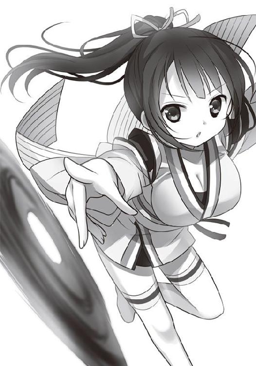
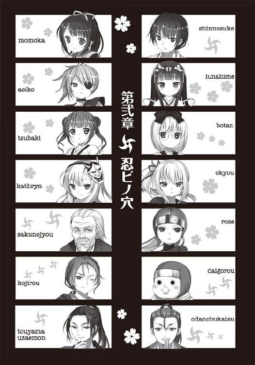

| 忍ビノエデン 新月国 不死民乃役 (スマッシュ文庫) | |
| 中村啓 | |
| PHP研究所 (2012) | |

忍ビノエデン
新月国 不死民乃役
著●中村啓
イラスト●Ｋｏｉ
気がつくと、川べりに寝そべっていた。膝から先が川の水に浸かり、緩やかな流れに洗われている。
「ここは、どこだ......」
少年は上半身を起こした。年のころは十六、七ほどである。衣服は流されたのか、ふんどし一枚になっていた。身体のあちこちを擦りむき、ところどころ血がにじんでいた。
少年は首をめぐらせ、あたりを見渡した。深い渓谷の中を流れる大河のほとりにいるようだった。目の前には、砂利と下生えの河原があり、その向こうが森になっていて、なだらかな山へと続いていた。
日は天辺にあり、少年の顔をじりじりと焼いた。
「拙者は......、ここで何をしているのか？」
少年はゆっくりと立ち上がろうとした。思い出そうとすると、頭にずきんと鋭い痛みが走った。
「痛たたた......」
少年は頭をごしごしとさすった。
なぜ、ここにいるのか？ どうやって来たのか？
――そもそも、拙者は誰だろう？
自分の名前が思い出せなかった。記憶というものが一切なくなっていた。
何かがあったのだ。何かとんでもない事態が起こり、頭をしたたかに打って、一切の記憶を失ってしまったのだ。
「大変だ。拙者はどこの誰で、何をするのであったのか......？」
少年は何もすることがないまま、ぼうっと座り込んでいた。
分厚い雲に日がさえぎられ、突然、あたりが暗くなった。
ゴロゴロゴロ......。
低い雷の音が聞こえる。
ゴロロロロ......。ああー......。
雷の音に混じって、森のほうから複数の低いうなり声が聞こえてきた。
少年はすばやく立ち上がると、思わず右手で左の腰のあたりを探った。武器になるようなものは何も持っていなかった。
うなり声は近づいてきていた。それも、徐々に数が増えているようだ。
「ただならぬ雰囲気......」
その本能的な予感は完璧に的中した。予想をはるかに上まわる形で......。
うなり声の主が森の樹木の間から次々と姿を現した。
ずさっ、ずさっ......。
その者たちは、人の姿形をしていたが、通常の人間ではなかった。
顔面は血の気がなく真っ青で、口の端から血を垂れ流し、ところどころ皮膚は剥がれ落ち、中には、目玉が飛び出していたり、片腕がもげている者さえいた。
身体が腐っているのだ。そんな者たちが襤褸を纏い、よろめくような足取りで、少年のほうへ向かってきたのである。
ずさっ、ずさっ......。
――この者たちはいったい何者なのか？
直感的に、死者だった者たちにちがいない、と思った。
理由はわからないが、なぜか再び命を吹き込まれよみがえったのだ。屍人という形で。
まさか、そんな者たちがこの世にいようとは......。目の前の現実が信じられなかった。
ずさっ、ずさっ......。
少年は背にした川を振り返った。川幅は五十メートルほどはあろうか。豪雨のあとなのか、水かさがあり、流れも速かった。いまや、少年を半円形に囲むようにして、数十人という数の屍人たちが迫ってきた。まさに背水の陣である。
ずさっ、ずさっ。
少年は足元の拳くらいの石を拾い、一番先頭にいる屍人に思い切り投げつけた。
ぐしゃ！
石は屍人の顔面を直撃し、屍人はうめき声を上げて倒れた......が、またすぐによろよろと立ち上がった。石が顔の左半分を破壊していたが、屍人は痛みをまったく感じていないようである。
「こいつら不死身か？」
少年は再び川を振り返った。
――この濁流の中に飛び込むしかないのか......。そう観念したそのときだった。
ぱたぱたぱた......。
およそその場にまったくそぐわないなんとも間の抜けた足音と黄色い声が上がった。
「こらー、不死民、やめなさーい！」
ぴたり。
不死民と呼ばれた屍人は、動きを止め、声のした川上のほうを見やった。
つられて、少年もそっちを向いた。
すると、十代前半ほどの少女が全速力な感じで駆けてくるではないか。
桃色の上下の作務衣を着けてはいるが、動きやすいようにか、二の腕と太腿があらわになっており、上衣の丈が短いため、へそが丸見えだった。
もたもたと近づいてくるその少女の漆黒の長い髪は頭の後ろでひとつに結われ、左右にゆれていた。陶器のような白く艶やかな肌は柔らかそうで、大きくつぶらな瞳は疑うことを知らないような綺麗な色を湛えていた。
少女も武器になるようなものは何も持っていなかったが、走ってやってくると、少年をかばうように、その不死民と呼んだ屍人らとの間に立ち塞がった。
少年はこの状況がまったく理解できず、ただただ、その勇敢なように見える少女を見つめた。
「わたしは新月国の民、桃香です。不死民、おとなしく森に帰りなさーい！」
ああー、ああー。
不死民たちは低い声を発して、よだれを垂れ流しながら、少年と少女のほうへ、ものほしげな顔で近づいてくる。
おそらく、不死民なる者たちは人を食らうのだろう。
少女は懐から何かを取り出すと、それらをぼとぼとと地面に落っことした。
それらは手裏剣だった。
「あらら......」
少女はしゃがんで数枚を拾い上げると、あわてた様子でシュッシュッと手裏剣を不死民に向かって投げた。

ぽとり、ぽとり。
手裏剣はなだらかな放物線を描き、不死民たちの間に落ちた。
不死民たちの動きがぴたりと止まった。
少女が投げた手裏剣に気を取られている様子だった。
「さあ、いまです。こちらへ！」
少女が少年の手を引いた。二人は川上に向かって走った。
ずさっ、ずさっ......。
不死民が再びゆっくりと二人を追いはじめた。
三十メートルほど駆けていったところに、心細くなるような細い橋が川の上に架かっていた。二人が橋を渡り切ると、不死民は数を増し、二人の渡った橋まで迫っていた。
少女は橋のたもとにある取っ手のようなものをぐるぐるとまわした。すると、橋が真ん中からぱっくりと割れ、八の字に上がりはじめた。跳ね橋である。橋の途中まで渡っていた不死民がうめき声を上げて、傾斜していく橋から転げ落ちた。
少女はほっとため息をついた。
「危ないところでしたね。でも、もう大丈夫です。不死民は運動神経もないし、頭も悪いので、この川を渡ることはできないんです」
少年も胸を撫で下ろした。あんな者たちにつかまったら、身体を食い散らかされるか、同じような屍人になってしまうにちがいない。
少年は少女に向きなおった。
「かたじけない。助けてくれたお礼を申す」
少女は若干舌足らずな口調で言った。
「不死民ったら、すぐ人を襲おうとするんですよ」
「あの不死民とやらは何者でござるか？」
「不死民は、人の屍に再び命が吹き込まれ生き返った者たちなんです」
少女は山の奥のほうを指差した。
「普段は、白虎山のもっと奥のほうの森海に住んでいるんですが、人の匂いを嗅ぎつけるとやってくるんです。噛みつかれたら、不死民になってしまうので気をつけてくださいね」
そこで、少女はあわてて口を手で塞いだ。
「あっ、不死民のことはあんまりよその人にしゃべったらいけなかったんでした」
少女は口唇に人差し指を当てた。
「いま言ったことは、誰にも言わないでくださいね」
「しょ、承知したでござる」
すると、少女は驚いた様子で少年を下から上までじっくりと見つめた。少年はふんどし一枚だったので、少し気恥ずかしさを覚えた。
「それにしても、ホントに月姫さまがおっしゃったとおり、若い男の人が乙川のほとりに倒れていました」
少年は目の前で感心している少女を不思議な思いで見つめた。頭の中では、いろいろな疑問が渦巻いていた。
「あの......、不躾な質問ながら、ここはいずこであるか？」
「ん？ 乙賀村です」
「乙賀村......？」
「新月国のすぐ隣にある村ですよ。お兄さんはここら辺の人じゃないですね？」
「ああ、まあ......」
どこら辺の人間であるかさえ、少年にはさっぱり記憶になかった。
「して、あなたは？」
「わたしは桃香と申します。こう見えても、乙賀流忍術の後継者なんです」
桃香なる少女は胸を張った。すると、少女のものとは思えないほど豊満な乳房の谷間が上衣の胸元から覗いた。少年は生唾を飲み込み、見てはいけない、とすぐに視線を外した。
「乙賀流とは？」
「乙賀流っていうのは、乙賀朔乃丞を祖とする忍術の一派で、知る人ぞ知る存在なんです。で、桃香は朔乃丞の孫です。お兄さんのお名前は？」
「名前......」
「はい、名前です」
「......し、信之介」
「信之介さん？」
信之介という名前がするっと口から飛び出てきた。
――ということは、拙者の名前は信之介なのだろうか？
「たぶん」
「たぶん？」
信之介は頭をさすった。
「実は、頭をしたたかに打ったらしく、拙者が何者で何をしていたのか、まったく覚えていないのでござる」
「あらー、どれどれ、ちょっと診てみましょうか？」
桃香が身を寄せてきて、信之介の頭の天辺を覗き込むようすると、信之介の顔面にふくよかな二つの胸がぎゅっとぶつかった。
信之介は鼻と口が圧迫され呼吸ができなかった。
だが、あえて堪えることにした。
桃香の手が髪の毛を掻き分けた。
「あっ！ ホント。すっごい大きなたんこぶができてます。いい軟膏があるから、村に行って手当てしましょう」
「か、かたじけない」
ぽたぽた......。
ふと、鼻から何かが滴り落ちた。
信之介が手の甲で拭ってみると、それは真っ赤な鼻血だった。
１
新月国は、畿内の山城国と東海道の伊賀国の間あたりにひっそりとある、人口一〇〇〇人ほどの独立した小国で、新月城に住まわれる月姫さまが民を治めているという。その西の脇にあるのが忍ビの者たちの住む乙賀村だそうだ。
「新月国は、まわりを山々に囲まれて、南北に流れる乙川に沿った渓谷の地にあるので、土壌が豊かで、作物がよく育つんです。それに、北と東の山では金とか銀とか貴重な鉱物が獲れます。だから、昔から月のように輝く豊かな国だって言われているんですよ」
そう桃香は語った。だが、信之介はそんな話は初めて聞いた。
いや、単に記憶を喪失しているために、昔は知っていたのだが、忘れてしまっているだけなのかもしれない。
桃香のあとをついていくと、ぽつりと藁葺屋根の百姓小屋が目につくようになった。鍬を手に庭の畑を耕したり、囲いの中で飼われた豚や鶏に餌をやる老人や、縁側に出て、背中に子どもをおぶり、腕の中に赤子を抱っこして乳をやっている女、棒きれでちゃんばらをしたり、鬼ごっこをしたりする子どもたちなど、さまざまな村人の姿があった。
だが、年寄りと女子どもはいるが、若い男の姿はほとんどなかった。
「つかぬことを尋ねてもよろしいか？」
「はい？」
「若い男子の姿が見えぬが......？」
それまで笑顔だった桃香の顔が曇った。
「はい。もともと乙賀村は、どういうわけか男の子があんまり生まれないところなんですが......、若い男子は一年前にあった戦に出かけて、ほとんど死んでしまったんです」
新月国は平和な国であるが、乙賀村の忍ビの者たちは、伊賀、甲賀に並びすぐれた忍者集団といわれ、それゆえに、周辺国でいさかいが起きると、乙賀村の忍ビたちに招集がかかり、戦地へ赴くということがあるという。一年ほど前に起きた戦に加わった際、運悪く、その地で伝染病が流行り、乙賀村の忍ビの者たちは戦わずして命を落としたのだそうだ。その結果、現在、乙賀村には若い男が激減してしまったのだという。
「乙賀村の忍ビはとても強かったのに......。残念です」桃香は寂しげにつぶやいた。
「男子の忍ビがいないいま、新月国がそれだけ豊かな国とあらば、列強の国々が手に入れようと攻めてくるのではござらぬか？」
「はい、攻めてきます」
桃香は精一杯の怖い顔をした。
「でも、そのために、わたしたち乙賀流忍者一門がいるんですよ」
と、子どものわりに豊満な胸を張った。どこからどう見ても強そうには見えなかった。
「それと、これは内緒ですが、さっきの不死民も新月国を守ってくれているんです。山から新月国に入ろうとすれば、みんな不死民に食べられちゃいますから」
「不死民は新月国を襲ってこないのでござるか？」
「月姫さまのご先祖様が、昔、不死民と約束を交わしたといわれています。周辺の山々に住まわせてあげる代わりに、新月国を守るようにって」
「なるほど。ところで、そなたも忍ビでござるか？」
「もちろん、そうですよ」
ぼとぼと......。
桃香は懐から手裏剣を取り出そうとしたらしいが、また取り落とした。
とても見ていられないほどの不器用さだった。
地面の上に散らばった、十数枚の手裏剣を見て、信之介の手がかすかに震えた。
突如として、それを投げてみたい衝動に駆られたのだ。
――ああ、かつて、これを肌身離さず身に着けていたことがあったのではなかったか......。
「どうしたんですか？」
桃香が不思議そうな顔で信之介を見つめていた。
「いや、何でもござらん」
信之介は震える両の手のひらを握りしめた。
「ねぇねぇ、見ててください」
そう言うと、桃香は手裏剣を拾い上げ、十メートルほど離れた大きな樫の木の太い幹を目がけ、桃色の舌をちろっと出し、腰を少し落として手裏剣を構えた。
一瞬の沈黙が舞い降りた。
シュッ――。
桃香が手裏剣を投げた。
「あちゃっ」
桃香の放った手裏剣は、樫の木のほうではなく、左斜め四十五度のとんでもない方向へ、緩やかな放物線を描いて飛んでいった。
桃香は信之介におどけた顔を向けた。
「桃香は、まだ修行中の身ですから......。でも、他のみんなはもっと強いんですよ」
ガキーン！
手裏剣の飛んでいった方向から金属と金属が鋭くぶつかり合う音がして、桃香が投げた手裏剣が跳ね返され、信之介の頭をかすめて飛んでいった。
「な、何やつ......」
信之介は身構えた。
ガサガサと藪の中から、黒の作務衣を着た、ひょろりと背の高い、十七、八歳ぐらいの男が現れた。
「おい、桃香。お得意の天然ボケで引っかけてきた男か？ どこに連れていく気だよ。ひひ」
茶色い長髪のなかなかに整った面立ちをした男だった。
腰に差した長い刀が何だか近寄りがたい嫌味ったらしい雰囲気を醸し出していた。
男は口の端を捻じ曲げるようにして口を開いた。
「おれの名は、小次郎。乙賀村......、いや、新月国きっての男前、そして、剣術の達人だ。よろしくな。どざえもん」
「な、なぜ、拙者のことを？」
小次郎はにやりとした。
「河原に流れついて不死民に襲われそうになったっていう間抜けなやつだろ。ここは乙賀村だぜ。噂なんて、あっという間に広がっちまうのさ......。あそこを見ろよ！」
信之介は小次郎の指差す藪に目を凝らした。
人の背丈ほどもある茨の藪ががさがさと揺れ動いた。
と、中から擦り傷だらけの二人組の少女が飛び出してきた。
「痛ててて......」
ひとりは黄色の作務衣を、もうひとりは橙色の作務衣を身に着けていた。
「あっ」と、桃香が驚いて声を上げた。
「つばきとぼたん姉妹」
似たような背恰好をした二人の少女のうち、
黄色の作務衣の勝気な顔つきをしたほうが姉のつばき、
橙色の作務衣の眼鏡をかけている根暗そうなほうが妹のぼたんであるという。
つばきが身体に刺さった刺を抜きながら、小次郎に向かって、威勢のいい怒鳴り声を上げた。
「てめぇ、せっかく隠れてたっていうのに、バラしてどうすんだよ！」
「へっ、それが隠れてるうちかよ。頭隠して尻隠さずだったぜ」
つばきはぼたんに怒りの形相を向けた。
「おまえか！」
「ごめんなさい。姉上......。茨の刺が痛かったもので......」
ぼたんは申し訳なさそうに頭を掻いた。
桃香がにこにこして二人を紹介した。
「つばきさんとぼたんさんは、ああ見えて、乙賀村の忍ビたちのために武器を作ってるんです。つばきさんが手裏剣やら鉄砲やらの飛び道具専門で、妹のぼたんさんが火器とか薬とかを作ってるんですよ」
「桃香、よそ者にあんま村の話をするんじゃないぜ」
小次郎がたしなめた。
「そいつが何者だか、わかんないんだからな」
桃香は反論するように言った。
「こちらの人の名前は信之介さんといいます。
信之介さんは大丈夫ですよ。月姫さまのお墨付きですもの」
「月姫さまが？」
「そう。西の河原に信之介さんが流れ着くことを予知したのは月姫さまなんですから」
「へぇ」小次郎は思案げに顎の下を掻いた。
つばきが信之介に興味津々といった様子でにじり寄ってきた。
くんくんくん。
頭の天辺から爪先までを、鼻の頭にしわを寄せながら嗅ぐようにして観察した。
信之介が何者かを直感で読み取ろうとするかのようだった。
「ふーん。で、桃香、こいつをどこに連れていくんだよ？」
「忍ビノ穴です。頭に怪我しているので、軟膏を塗ってあげるんです。
それから、葵子さまにも会わせなくっちゃ」
小次郎、つばき、ぼたんの三人は、お互いに顔を見合わせた。
桃香は続けた。
「それと、信之介さんは、記憶を失っていて、住むところがないから、乙賀村に住まわせてくれるように頼みに行くんです」
「はぁ!?」
小次郎、つばき、ぼたんの三人は、ほとんど同時に驚きの声を上げた。
信之介もそんな話を初めて聞いたので、びっくりして桃香を見つめた。桃香はさも当然とばかりに、やさしい微笑みを浮かべていた。そんな桃香の笑顔を見ていると、信之介としても何も言い返せなかった。それに、記憶を失っているいま、帰るべきところもわからず、当面の間は、どこかに世話になる以外ないのも現実だった。
小次郎は首をひねった。
「葵子さまが、よそ者を村に住ませてもいい、なんて言うか？」
桃香は反論した。「信之介さんは、月姫さまがお告げで見た人ですから、葵子さまも承知してくださいます」
「ふーん。まあ、いま村で男子は貴重な存在だからな」
小次郎とつばき、ぼたんの三人は、納得したようにうなずいた。
「さ、葵子さまに会いに行きましょう」
「その、葵子さまとは？」
「乙賀流一門の頭首、忍ビノ穴の塾長です。とっても怖い人ですよー。だから、嫌われないように気をつけてくださいね」
「そうそう、めっちゃ怖い女だぜ」小次郎がにやっと笑った。「おれでも怒られたら、金玉縮み上がっちまうもん」
小次郎は信之介を見つめ、小首をかしげた。
「おれみたいに二枚目で強い男なら、忍ビの者として重宝されるんだがな。まあ、がんばれば、手裏剣の投げ方ぐらいは教えてくれるんじゃねぇか。ひひひ」
桃香が怒ってぷっと頬を膨らませた。
「小次郎さまの言うことなんか気にすることありませんよ。さ、行きましょう！」
２
歩きながら、信之介は尋ねた。
「ところで、拙者のことを月姫さまがお告げで見られたと申されていたが？」
「そうなんですよ。信之介さん、河原で不死民に襲われそうになったでしょう。あのとき、桃香が偶然通りかかったんじゃないんですよ。月姫さまのお告げに従って、桃香が助けに行ったんですよ」
「そのお告げというのは？」
「月姫さまは、毎月新月の日に、未来のことをお告げで受け取るんです。新月国が平和で豊かな国になったのも、みーんな、月姫さまの一族が、代々、お告げを受けて、人々を導いてくれたからなんですよ」
信之介は顎に手をやった。「不思議な力でござるな」
「信之介さんも、その人はきっと新月国の力になってくれる方だから、桃香がお救いするようにって、おっしゃったんですよ」
「そうでござったか......」
「月姫さまと桃香は幼馴染みなんです。年も近いし、昔はよく一緒に遊びました」
桃香は思い出に浸るように目を細めた。
「一国の姫君と？」信之介は驚いた。
「はい。桃香の祖父の乙賀朔乃丞が家臣のひとりだからということもあるんですけど、月姫さまは、わたしたち忍ビの者でも分け隔てなく扱ってくれる、それはやさしい方なんです。いまでも一緒にちゃんばらごっことかするんですよ」
そう言って、桃香は笑ってから、急に真面目な顔になった。
「信之介さんのことは、これからも、この桃香が守って差し上げますね」
「かたじけない」
信之介は微笑んだ。河原での件に関しては、確かに、桃香のおかげで不死民から助けられたのはまちがいない。だが、他のことからは、桃香は信之介を守るどころか、逆に、信之介が桃香を守ってやるぐらいだろう。
「桃香は、母性本能が人よりいっぱいあるんですよ」
信之介はうなずいた。
「そうかもしれない。桃香殿はとても優しい心を持っておられ――」
桃香が自分の乳房を誇示するように両手で下から持ち上げて、ぱっと手を離した。乳房がぼよんと揺れた。
「おっぱいが大きい女子は、母性本能もいっぱいあるんだって、朔乃丞ジイがいつも言ってますもん」
「そ、そうでござるか......」
桃香は無垢なのだ、と信之介は思った。その乳房がどれほど男どもを狂わすやもしれぬ力を秘めているとはよもや思っていないのだ。
「はい。だから、桃香はみんなのお母さんになってあげようと思っているんですよ」
信之介は、こほん、と空咳をした。
「うむ、よい母親になられると思うでござる」
信之介は無関心を装いながら、そっと生唾をごくりと飲み込んだ。
桃香のあとに続いて歩いていると、やがて、百姓小屋の密集した集落のような場所へ出た。
井戸のまわりを囲むようにして、家々が立ち並んでいる。井戸端で会話をしている者たちや、道を行き交う者たちがいて、彼らの着ている衣服はみなこぎれいだった。乙賀村の村人の顔には、生活に疲れたような悲壮感はなかった。そして、人々の間には笑い声が絶えなかった。
新月国は豊かな国だというが、乙賀村もそれなりに潤っているようだ。信之介の頭にわずかに残っている記憶では、いわゆる村というものは、もっとみすぼらしい、いまにも崩れそうな藁葺屋根の掘立小屋が点々とするようなところであったのではなかったか。人々も貧しさにあえぎ、物盗りや喧嘩が絶えず、心も荒んでいるようなところではなかったか。
――そうだ。拙者は昔、そんな村に住んでいたのではなかったか。そして、何としても、強くなり、出世して、村を出ようと思ったのではなかったか？
昔の自分は人を近くに寄せ付けない、警戒心の強い人間だったのではないか。あまり人を信じずに生きてきたのではないか。いや、そもそも人というものを憎悪していたのかもしれない。
信之介はかぶりを振った。記憶は曖昧模糊として、頭の中の霞が晴れることはなかった。
桃香が両手を広げた。
「ここが乙賀村の真ん中です。全部で四十人ぐらいの人が暮らしてるんですよ」
桃香は人気者らしく、すれ違う村人たちがみな桃香に笑いながら声をかけてくる。
「桃香ちゃん、今日も元気そうだね」
「はい、元気ですよー」
桃香は弾けるような笑みを返して応えるのだった。
――明るく平和な村だな。
信之介はそんな人々の様子を羨望の眼差しで見つめた。
「村人はみんな田畑を耕したり、家畜を育てたりして、生活しているのでござるか？」
「はい、そういう人もいますが、城下町に出稼ぎに行ってる人もいますよ。あとで、月姫さまにお会いしたあとで、城下町に寄りましょう。もっと人も多いし、とっても賑やかなところですよ」
中心部を通りすぎなおも歩いていくと、集落とは少し離れたところに、他の百姓小屋とは規模も造りも違う、武家屋敷のような大きな屋敷が現れた。
信之介は感嘆した。「これは、なかなかに立派な屋敷でござるな」
「はい、頭首の葵子さまが住んでいるお屋敷兼忍ビノ穴ですから」
「忍ビノ穴とは何でござるか？」
「立派な忍ビの者になるために修行するところです。桃香も毎日通ってるんですよ」
乙賀村には忍ビノ穴なるものがあり、忍ビの者、および、その志望者が集まり、日々、忍術の修行に励んでいるのだという。
桃香は手裏剣を投げる、シュッシュッ、というしぐさをしてみせた。桃香が右腕を動かすたびに、大きな乳房がぼよんぼよんと揺れた。
――これでは振動で手裏剣がまっすぐに標的に向かわないのも無理はない。
信之介はそう分析しつつも、それとなく揺れる乳房を観察した。
桃香が玄関の引戸を叩いた。
「お婆殿、お婆殿ーっ！」
引戸が開くと、ひとりの老婆が姿を現した。白髪を後ろに束ね、腰が曲がっている。この屋敷の老女中なのだという。
「おお、桃香殿。相変わらず、元気じゃの」
老女中はふんどし姿の信之介に気づいて目を丸くした。
「こちらのお方は？」
桃香は、この日何度目かの信之介と出会った経緯をくどくどと説明した。
「さようであったか。では、まず何か着るものを用意せねばな。さ、葵子殿は奥の間にいらっしゃるゆえ」
桃香と信之介は、土間で草履を脱ぎ、框に上がった。
老女中が用意してくれた灰色の作務衣を身に着けた信之介に、
「よく似合いますよ」
桃香はいたずらっぽく笑った。
忍ビの屋敷らしく不自然に狭く作られた廊下を歩いていき、奥の間と呼ばれる座敷の前にやってきた。桃香が声をかける前に、襖の向こうから女の声がした。
「入るがいい」
その厳粛たる声を聞いたとき、信之介の全身が固く強張った。
――この女、できる。
そう思ったのだ。
警戒する信之介の横で、桃香が「失礼しまーす」と軽い声を上げて、襖を左右に引いた。
広い座敷の上座に、臙脂色の作務衣姿の女が胡坐をかいて座していた。色白だが、引き締まった体つきをしており、左目は眼帯がされていた。
女頭首たる葵子の顔つきは精悍で美しかった、開いている右目にしぼられた眼光はするどく、まっすぐに信之介を見据えていた。
信之介は身構え、座敷の中をすばやく見まわした。葵子の右手、手を伸ばせば届く位置に、二メートル半ほどの薙刀が刀掛けに置かれていた。信之介は葵子の両手を見た。女のわりに、ごつごつと節くれだっていた。葵子という女は相当の薙刀の使い手と見た。
葵子の前に進み出た信之介は全身の毛が逆立つような恐怖を味わっていた。自分が何の武器も持たないことが、急にとても心細いことのように感じたのだ。
そのとき、信之介はぼんやりと思った。
――拙者も忍ビの者だったのではあるまいか？
「お邪魔しまーす」
信之介の胸中をよそに、桃香は呑気な声を出して、座敷に上がり込むと、葵子に対面するようにちょこんと正座になった。信之介も気後れしながら、桃香の横に倣って正座をした。
葵子は狐のように鋭い眼差しで、開口一番に言い放った。
「お主、忍ビの者だな」
信之介は内心飛び上るほど驚いていた。まさに、自分は忍ビの者ではあるまいかと思いはじめた矢先のことだったからだ。
ここで、「いかにも、そのとおりでござる」と答えたらどうなるだろうか。考えるまでもなかった。右手にある薙刀で斬り刻まれることになるだろう。
信之介は記憶喪失であることにかこつけて、とぼけることにした。
「さぁ......」
「さぁ!?」
葵子はさっと薙刀に手をかけた。
「ちょっ、お待ちくだされ！」
信之介は正座の状態から、脚をバネのように伸ばして、数歩後ろへ飛び退いた。
「拙者、記憶をすべて喪失しており、自分がいったい何者であるのかわからないのでござる」
「忍ビの者かと訊いて、さぁ、と答えられたら、斬り捨てないわけにはいくまい。それに、その身のこなし......。只者ではないと見た」
信之介はどっと冷や汗を掻いた。
「いえ、拙者、幼きころから運動神経がいいことだけが取り柄だったもので......」
葵子はにやりとした。
「過去の記憶がないのではなかったのか？」
「いえ......」信之介は声を上ずらせた。
「そんな記憶がおぼろげながらあるのでございます」
信之介はすっかり葵子に圧倒されてしまった。
葵子はかなりの手練であるようだ。
「まあ、よい。おまえのことは月姫さまから丁重に扱うようにと言付かっておる。信頼のおける者だともな」
桃香が口を開いた。
「葵子さま、信之介さんは悪い人じゃありません。怪我を負ってるし、記憶もなくなっちゃってるから、しばらく村においてあげてくださいませ」
葵子はまた鋭い右目で警戒するように信之介を見つめた。
葵子は、けして信之介を無害だと信用したわけではなかった。まず間違いなく、忍ビの者であると確信していた。記憶を失っているなどと言っているが、それも疑わしいとさえ思っていた。何も知らぬふりをして、乙賀村を探りに来たのやも知れぬ。だが、月姫さまがお告げで見た男子であるというし、しばらくの間、様子を見てみようと判断した。
――殺すのは、いつでもできよう。
「まあ、若い男は貴重だ。どうだ？ 当面の間、この村に住んでみる気はあるか？」
「え？」
隣で、桃香が正座をしながらぽんぽんと跳ねた。
「信之介さん、住まれたらいいですよ！ さっきも申しましたけど、乙賀村は男子の人手が足りないんです。そうだ！ 信之介さんも忍ビノ穴に通えばいいですよ。生徒はみんなかわいい女の子ばっかりだし、きっと楽しいと思いますよ！」
――生徒はみんなかわいい女の子ばっかりだし、きっと信之介も楽しいと思いますよ！
その言葉が頭の中にすっと沁み渡った。
「そ、それではお言葉に甘えて......」
信之介の口は勝手に受諾の言葉を吐いていた。信之介自身びっくりしたほどだった。
「即決か」
葵子がにやりとしたあと、厳しい口調で言い添えた。
「ここでは、ただで食ったり寝たりはできん。新月国と村を守るために、お主にはきちんと働いてもらう」
信之介は平伏した。
「助けていただいた礼に応えて、拙者でよければ、この国のために働く所存でござる」
葵子はふっと笑みを浮かべた。
「そうか。だが――」
葵子は目にも止まらぬ速さで薙刀をつかむと、横へ薙ぎ、その刃先を信之介の首の横数センチのところで止めた。
信之介は身構えることさえできなかった。
「もしも、お主が記憶を失ったふりをし、わが国に隠密として潜入してきた忍ビだとわかったら......、斬る」
信之介は驚きと恐れのあまり腰が抜け、すぐには立ち上がることができなかった。
３
黒烏城本丸の天守閣にある広々とした烏の間で、伊賀国の西端に隣接する黒烏国の城主・遠山右左衛門は、家老の清水忠助に激怒していた。
「何ぃ？ 鉄砲水で全滅したぁ？」
「左様にござります」忠助は神妙な面持ちで答えた。
「新月国に向けて出発した忍ビの者十二名は、川べりを上っていたところ、鉄砲水で全員流されたと――」
「生存者は？」
「全滅かと......」
「か～っ」
遠山右左衛門は右手に持った扇子で、青々と剃り上げた月代（広い額）をぺちぺちとした。
「まっこと運の悪い」
「はい、運が悪かったとしか言いようがございませぬ。一昨日は晴天だったのに、夜半から未明にかけて、急に天候が荒れて嵐になりましたからな。誰かが雨男ならぬ嵐男ではないかと、家臣の者たちが......」
そこで、忠助は口をつぐんだ。その誰かとは、他ならぬ遠山のことであった。遠山は無能領主の上に、運まで悪いのかと、家臣たちが陰で噂しているのであった。
「まずいぞ、これは......」
遠山は扇子を閉じると、先端を畳に押しつけるようにした。
「信雄さまに何と申し開きをしたらよいのか」
天下の大武将・織田信長の次男、信雄さまの命を受けて、豊穣の地と呼ばれる新月国を手に入れるため、また、辺境一の美貌と噂される月姫をさらうために、腕利きの忍者集団を結成し、新月国へと向かわせたのだった。それだけの任務を帯びた者たちが、一夜のうちに全滅してしまうなどとは......。
遠山はかっと目を見開き、いま自分が陥ってしまった現状を把握しようとした。
「で、どうすんだ？ おれは信雄さまから命令を仰せつかってるんだぞ。送り込んだ忍ビの者たちが鉄砲水でみんな流されちゃいました――。で、済むと思うか？」
「済まないでしょうな」
遠山はうなだれた。「こりゃぁ、かなりヤバいぞ」
「はい、かなりにヤバいことにございまする」忠助は神妙な顔でうなずいた。
「はぁ......」
遠山は嘆息した。自分の運の悪さを、いや、神仏をさえ呪った。
カンカンカン――。
上段の間の壁際に取り付けられた伝声管から、鐘を鳴らす音がやかましく響いた。
〈おい、遠山ぁ～〉
まるで地獄の底から湧き起こってくるかのような低く重い声が響いた。
遠山の居室でもある烏の間にある伝声管とは、はるか伊勢国の松ヶ島城から竹の筒をつなぎ合わせて敷かれたもので、その伝声管を通して、織田信雄と交信することができるというすぐれものであった。
とはいえ、すぐれものとは名ばかりの、基本的に声がかかるのは信雄のほうからであり、遠山のほうは寝ていようが用を足していようが、そんなことはお構いなしに、信雄の声が届いてくるため、迷惑この上ない代物であった。
遠山は飛び上って、伝声管のほうへ向かい、あたかも目の前に信雄がいるかのごとく居住まいを正した。
「はい、こちら遠山でございます。信雄さま、ご機嫌うるわしゅう」
遠山は内心どきどきしていた。信雄がこの時期に連絡を寄こしたのは他でもない、その後の進捗状況を知りたいのだ。
〈おい、遠山ぁ～〉
「はい、何でございましょうか？」
〈はい、何でございましょうか、じゃねぇだろ！〉
その言葉づかいとは裏腹に、その声色から察すれば、信雄は大変ご機嫌のようで、伝声管の向こうでにやにやしている様が目に浮かぶようだった。
〈それで、その後、どうよ？〉
――やっぱり、そう来たか......。
遠山の背中を氷のように冷たい汗が伝った。そんな遠山の心情など気づかぬ信雄は嬉しそうに続けた。
〈いま、おれの前に、伊勢国一の絵師に描かせた月姫の似顔絵があるんだよ〉
そこで、深いため息とも吐息ともつかない呼吸音がした。
〈いい女だぜぇ。早く、この手に抱きたいぜぇ。はぁはぁ〉
「えぇえぇ、この間、信雄さまに拙者も一枚いただきました」
遠山は手元に絵を手繰り寄せ、惚れ惚れとして見つめた。
「いやー、ホント、いい女でござりますなー」
新月国の月姫は、まだ十歳ぐらいにしか見えない子どもである。このロリコンめ、と思いつつ、遠山はお追従した。
〈おい〉信雄の声が低くなった。
「はい？」
何かまずいことを言っただろうか？ まずいことを思いはしたが......。
〈おまえ、おれの女に手ぇ出したら......。わかってんだろうな？〉
「めめ、滅相もございません。そのようなこと、思ってもみたこともございません！」
〈そうか。で、その後、どうよ？〉
「もも、もちろん、すぐに、その御手に抱くことができますとも。いま、忍ビ集団が新月国へ無事入国したという連絡を受けまして、これから、さて、どうやって新月城を攻め落とし、月姫を奪おうかと算段をいたしていたところなんでございます」
遠山はすらすらと嘘八百を並べた。
〈おお、そうか〉信雄は朗らかに笑った。〈遠山、楽しみにしてるぜぇ〉
そこで、伝声管はぴたりと音が止んだ。
遠山が後方を振り返ると、忠助が瘧にかかったように震えていた。
「とと、殿、いまのはさすがにまずかったのではないでしょうか......」
「わわ、わかってるよ。でも、あの声耳にすると、おれブルっちまって......。ついうっかり、あんなこと口走っちまった」
顔から滝のような汗を流して忠助が迫った。「どうするのでございますか？」
「どど、どうしようか......」
遠山はぴたりと音の止んだ伝声管を放心して見つめた。
４
忍ビノ穴をあとにして、桃香に案内されてやってきたのは、使われなくなって久しい廃屋のような百姓小屋であった。
「ここは、一年前には人が住んでたところです。住んでいた与吉さんて人は、以前にあった戦のときに亡くなってしまいました」
「さようでござるか」
玄関の入口から中を覗くと、土間の向こうに八畳ほどの部屋があった。小屋はなかなかに頑丈な造りになっており、風雨をしのぐには申し分のない状態だった。
信之介は頭を下げた。「かたじけないでござる」
ここへ来る前、忍ビノ穴で、信之介は頭の傷口に得体の知れない軟膏を塗られ、両目が隠れるほど包帯でぐるぐる巻きにされた。どうも桃香という女子は何をするにも不器用であるらしい。桃香が作ったという得体のしれない黒い粥も食したが、信之介は眼が白黒するほどその味の奇妙奇天烈さに驚いた。いったいどういう味付けをしたらこのような味に仕上がるのか。そもそもこの粥の正体は何なのか......。
だが、桃香の嬉しそうな笑みを見ていたら、その厚意を無下にすることはできず、信之介は腹をくくってこらえながらそれを平らげたのだった。お腹のあたりが焼けるように熱かった。
「あ、桃香と信之介だ」
声のほうを見ると、隣の百姓小屋の生け垣から、つばきとぼたんが二人そろって顔を出していた。
「何だよ、おれたちの家の隣に越してきたのかよ」
つばきが不服そうな、いや、その裏に若干の嬉しさを隠すような口調で言った。その横では、ぼたんが好奇心丸出しの眼差しを眼鏡の奥から注いでいた。
信之介は頭を下げた。
「隣同士、これからよろしくお願い申し上げる」
「けっ、お堅ぇ野郎だな。おれたちのこと覗いたりしたら、ぶっ殺すからな！」
そう言うと、つばきは手製の小型鉄砲を空に向けて一発撃った。銃声が轟き、空を舞っていた雀が悲鳴を上げて四散した。
桃香が怒った。「こらー、信之介さんと仲良くしてあげなきゃダメですよー！」
つばきとぼたんはけたけたと笑い声を上げた。
「これから、月姫さまのところへ行きがてら新月国の城下町を案内してあげますね」
桃香はそう告げると、有無を言わさず、信之介の手を引いた。
信之介は女子と手を触れ合わせることに、内心どぎまぎしていた。桃香の手は、小さく、柔らかく、そして、温かかった。
記憶がないとはいえ、おそらく、これが生まれて初めて女子の手を握るのではないかと思われた。一方の桃香のほうは、信之介を男として意識していないのか、何ら恥じることもなく手をつないで離さなかった。信之介を兄のように思っているのかもしれない。
信之介はごくりと唾を飲み込んだ。
「桃香殿、あの......、て、手を離してくだされ......」
「あ、ごめんなさい。痛かったですか？」
「いや、痛くはないが......」
信之介は桃香に握られていた右手を左手で包み込んだ。自分でも顔が赤くなっているのがわかった。話を他にそらそうと、必死に頭を働かせた。
「桃香殿、そなた、ご兄弟は？」
「いません」
「そ、そうであったか......」
「父上も母上もいませんよ」
「え？」
桃香はいたって明るい口調で続けた。
「乙賀流忍術を作った朔乃丞ジイはいますけど。あのね、乙賀村の忍者になる子どもたちは、みんな父上や母上、家族がいないんです。みんな死んじゃったり、子どものときに捨てられたりして、この村に引き取られてきたんです。桃香の父上と母上も早くに亡くなってしまったそうです......」
「そうでござったか......」
桃香が笑顔を作った。
「だから、この村がみんなの故郷なんですよ」
――この村がみんなの故郷なんですよ。
その言葉が、信之介の頭の中をくすぐるようにした。
満月の夜、鏡面のような川面に浮かんだ自分の姿――。
そのイメージが、過去の記憶の断片を引き寄せた。
「敵の大将の首を獲った者には三貫文をくれてやる！」
地侍である親方が叫ぶと、忍ビの者たちの間から歓声の声が上がった。
親も兄弟もなく、いつも独りだった。
寂しさと、ひもじさだけがいつも一緒だった。
自らの命などなんとも思わなかった。
ただ、銭のため、今日を生きるためだけに、親方の命令に従った。
信之介はわれ先にと走った。
立派な馬にまたがり、兜を被って駆けてくる敵の大将が真正面に迫っていた。
信之介は手裏剣を投げ打った。
そのことごとくが大将の首に命中し、大将は馬からどうっと倒れ落ちた。
「三貫文はおれのもんだ！」
まわりから羨望と嫉妬の入り混じった声が上がった。
信之介は優越感に満ちた笑い声を上げた――。
信之介はいつしか心を失い、ただの殺人機械になり果ててしまった。
ある満月の夜、いつものように任務を終えた自分の姿が、月光と篝火に照らされて、鏡面のような川面に映った。その殺伐とした自分の姿に愕然し、信之介は忘れていた志を思い出したのだった。誰よりも強くなり、功名を上げ、いつかは武士になるという夢を――。
信之介は両の手のひらを見つめた。それは血に塗れた汚らわしいもののように見えた。
――あそこはけして故郷などと呼べるようなところではなかった。
地獄だった......。
「羨ましい村でござる」
「え？」
「拙者もおそらく、親兄弟はなかったでござる」
桃香ははっとした。
「昔のことを思い出したんですか？」
信之介は首を振った。
「いや、少しだけでござる」
一キロほどの野道を歩いていくと、関所というにはあまりにも立派な入母屋造りの三重の櫓が見えてきた。まるで城のミニチュアである。桃香がそこの番卒にあいさつすると、簡単に新月国へ入ることができた。
桃香の言うとおり、新月国は四方を大きな山々に囲まれ、その中にできた盆地に人々の住む町が作られたという感じの国であった。
城下町の目抜き通りには、茶屋、反物屋、荒物屋などの商店が軒を連ね、多くの人でにぎわっていた。やはり、町を行き交う人々の顔は明るく、着ている衣服もとても華美であった。そして、みな活気に満ちていた。国が潤っていなければ、けしてこのような城下町は成り立たないだろう。信之介は驚嘆することしきりだった。
美しい国――。
そんな言葉がぴったりの城下町であった。
信之介と桃香は目抜き通りを歩いた。
と、前方から歩いてくる巨大な身体の女らしき生き物を見て、信之介は腰を抜かすほど驚愕し、差していない刀を抜こうとして腰に手をかけた。信之介はまだ葵子から帯刀を許されてはいなかった。腰に刀が差さっていないと、納まりが悪いというか、気分がしゃきっとしない。早いうちに、信を得て、帯刀を許してもらう必要がありそうだ。
前からのしりのしりと巨体と巨乳を揺らしながらやってくる女は、金髪の頭に、紺碧の眼を持ち、彫りの深い面立ちをした、初めて見る人種だった。さらに、見たこともない色柄の作務衣を着ていた。濃緑を基調にした柄物の布地（いまでいう迷彩柄）というものである。
「あ、キャサリンさん」
桃香が駆け出した。
「きゃ、きゃさりん......？」
信之介は警戒しつつも桃香のあとを追った。
「あやつは何者でござるか？」
「キャサリンさんです。南蛮人との相の子なんですよ」
「南蛮人......。初めて見るでござる」
「ハーイ」キャサリンが野太い右手を上げた。
「はーい」
キャサリンと桃香は、手を伸ばして、二人の手のひらを合わせるという見たこともない挨拶を交わした。
それにしても、間近で見るキャサリンは何もかもが大きな女だった。背は信之介よりも二十センチほど高く、肩幅もがっちりとしていた。そのくせ、胸の前には釘づけにならずにはいられないほど大きな乳房をぶらさげ、その腰はきゅっと引き締まり、尻はぼよんと大きく張っていた。何もかもが日本人のひとまわり、いや、ふたまわりほど大きかった。
信之介はごくりと生唾を飲み込んだ。
――まだまだ、拙者は精神的な修行が足りんようだ。だから、女子の身体にばかりついつい眼が行ってしまうのだ......。
信之介は自分自身を戒めた。
「ヘイ、そいつ、誰ぇ？」
おかしな発音で、キャサリンが信之介を指差した。
「信之介さんです。河原で不死民に襲われていたところをわたしが助けてあげたんです。これから、乙賀村に住むことになったんですよ。よろしくお願いします」
「ふーん、おまえがねぇ......。よっぽどそいつ弱ぇんだな」
「む」信之介はキャサリンをにらみつけた。
――この場に、刀さえあれば、こんなただの木偶の坊みたいな女子になどなめられたりしないのに......。
と、キャサリンは両腰に帯びていた二つの鎖鎌を左右の手に取ると、すばやい動きで、右手にしていたほうを水平に薙ぐように放った。茶屋の軒先に立っていた桜の太い枝に鎌が巻きついた。幹から分かれた枝は直径が二十センチほどはあるだろうか。キャサリンはにやりとすると、ぐいっぐいっと鎌がしっかりと枝に巻きついていることを確認するや、思い切り鎖を引っ張った。すると、その枝はへし折れ、鎌がキャサリンの手元に戻ってきた。
信之介はその怪力ぶりに目を見張り、口をあんぐりとさせた。
桃香がぷんぷんと怒った。「キャサリンさん、桜の木を折ったらダメですよー」
「まあ、ミーの手にかかれば、ざっとこんなもんよ。あーはーん？」
キャサリンは信之介の身体にじろりと視線を走らせた。
「ユー、なかなかいい身体してるじゃん。鍛えれば使い物になるかもよ」
桃香がうなずいた。「はい、わたしもそう思います！」
「じゃ、ミーは山に木を切りに行かなくちゃならないから。チャオ」
信之介はキャサリンの後ろ姿を見送った。その背中には大きな斧が掛けられていた。
「なんという怪力の持ち主だ......」
「南蛮人の血が入っていますから。大人の男でも十人ぐらいなら、一度に相手できるって言っていました」
「そ、そうでござるか......」
「もうすぐ新月城ですよ」
桃香が指差す先を見ると、道の先のほうに、周囲に堀と城壁をめぐらせた威風堂々たる白亜の城が建っていた。
５
南北に走る目抜き通りの突き当たりに、奥行五メートルほどの水濠のめぐらされた新月城の城門が構えていた。堀の上に渡された橋を進んでいくと、大手門の前の壁際に、ひとりの女が腕組みをして立っていた。葵子である。その顔には、油断ならない者への警戒の色が濃く浮かんでいた。
「桃香ひとりの付き添いで、新参者を月姫さまに会わせるわけにはいかないからな」
そう言うと、葵子は身を翻した。桃香と信之介は葵子のあとに続いた。
城内には武士や侍女たちが廊下を行き来するのが見えた。美しい日本庭園を見渡せる小径を歩いて、城の奥にある本丸へと向かった。
本丸の天辺にある天守閣の謁見の間と呼ばれる大広間にやってきた。その部屋は見たこともないほど金銀の箔が襖や壁に施され、眼が眩むほどにきらきらと輝いていた。美しい花々がこれまた美しい花器に活けられていた。この国がいかに潤っているのか、そして、幸せであるのかを体現した城の間といえるだろう。
きらびやかな鳳凰の描かれた襖の前に上段の間があり、重臣と思われる年老いた者たちが右側に二名控え、姫さまの入室を待ち構えていた。
葵子の後ろに控えた信之介と桃香は、謁見の間の下座にならんで正座をし、月姫さまが現れるのを平伏したまま待った。
襖を開ける音がし、衣擦れの音がした。
「面を上げてください」
やわらかい声が言った。
頭を上げると、まだ幼い女の子とも呼べる少女が上段の間に座っていた。朱の地に金銀のきらびやかな意匠の凝らされた単衣を羽織っていた。あどけない顔はまだ十歳ぐらいだろうか。その姫君が一国を治めているという事実にも驚いた。幼いながらも、その端正で気品に満ちた顔つきは、大人たちをして、平伏さずにはいられない雰囲気を放っていた。
月姫は信之介を見ると、にこりと微笑んだ。
「ご無事で何よりです」
信之介は再び頭を下げた。
「恐れながら、月姫さま、拙者が西の河原にて不死民なる者たちに襲われるとのお告げをお受けになられたとか。桃香殿を助けに使わせていただき、そのおかげで、いまこうして、命があるようなものでございます」
「そんなに堅苦しくならないでくださいな」
「はっ」
「わたしは姫といっても、まだ十です。見識も経験もございません。どうか、わたしの、いえ、この国のお力になってくださいませ」
ふと、月姫さまの表情に影が差したように見えた。物憂いような色が瞳によぎったのだ。
「この信之介、月姫さまに受けた恩義忘れません」
信之介は再び平伏した。心の中では、熱く込み上げてくるものがあった。いままで主人に反抗的だった犬が、ようやく忠実に従える主人を見つけたかのような感動が湧き上がっていた。それは、地侍の命令を受けて仕事をしていたときにはけして感じたことのない感情だった。
――月姫さまのためならば命を懸けてもいい。
信之介はそこまで思えた自分に驚いた。
すると、横から、葵子が早口で言った。
「不届きなことを働いたら、すぐに斬り殺しますので」
月姫は眼を丸くしてから、単衣の袖で口元を隠し、品のよい笑みを浮かべた。
葵子以下の者たちが去ると、謁見の間の東側の襖がそっと開いた。先ほどまでの話を隣の部屋で聞いていた、家老の三戸秀臣と新月国一の年寄りの老婆がそろりと入ってきた。
三戸は、中背の肉づきのよい身体つきをした老人で、豊かな白い口ひげを生やし、団子鼻とよく動くぎょろっとした目をしていた。老婆は大ババと呼ばれ、小柄で背が曲がっており、年齢は百歳を超えるという。だが、頭はしっかりとしていて、月姫のお告げの解釈を行なう任を負うている。二人とも、代々、月姫さまの家系を守ってきた家柄の出であった。
いま謁見の間にいる、そろって年老いた三人の男たちは、家臣というよりも、城オジという言葉でもって呼ばれていた。三戸秀臣は三戸ジイ、二賀与之介は二賀ジイ、五留左衛門は五留ジイとそれぞれ呼ばれている城オジ三人衆である。
三戸ジイが言った。
「なかなかによい少年ではありませぬか」
「はい」
月姫は答えた。
大ババも言った。「ええ、ええ、なかなかにいい男でござりますのう。五十年前に死んだ亭主の若いころに面影がそっくりじゃ」
「大ババ」三戸ジイが大ババの軽口をたしなめた。
「おおおおお」大ババが年甲斐もなく頬を赤らめて笑った。
「何を言っておるんだか......」
「おや、妬いておるのかね？」
三戸ジイは鼻を鳴らして、信之介という新参者の話に戻した。
「いま、乙賀村の忍ビの者たちは、ほとんどが女子どもと聞いております。男子は貴重な助けになるでしょう」
「......」月姫はうつむいた。
「うむ？」三戸ジイは声を低くした。「先日に見たお告げのことでございますか？ 近々、また大規模な戦が起こるやもしれぬという」
大ババが月姫の心の言葉を代弁した。
「これまでにも、姫さまのお告げは、すべて当たってきた。とすると、今回も、大規模な戦が起こることは間違いなかろう」
月姫が口唇を震わせた。
「それはそれは恐ろしいお告げでした。一年前の戦のときよりも多くの命が失われるかもしれません」
「何と......」
三戸ジイ、大ババともに、すぐには言葉を継ぐことができなかった。二人とも、一年前の戦のひどさはよく覚えていた。近隣の国から金で雇われた乙賀村の忍ビの男たちが、戦地で流行った疫病でほぼ全滅してしまったのだ。
戦の前、多くの忍ビの男たちが死ぬお告げを見ていた月姫は、彼らを必死に止めようとしたが、幼かった月姫の言うことに耳を傾ける大人はおらず、結局、彼らは戦地へ旅立っていったのだった。
「わたしはあの者たちを救えたはずです。もっとわたしがしっかりしていれば......」
月姫は両手で顔を覆った。
「なぜ、わたしは恐ろしいお告げばかりを見るのでしょう。新月国の安泰のみを願っているというのに......」
三戸ジイは憐れむように言った。
「ご自分を責めてはなりませぬ。姫さまのお力がなければ、この国はもっと悲惨な目にあってきたことでしょう。あの信之介という少年とて、不死民に食われて不死民になっていたはずです」
月姫は静かに言った。
「信之介は次の戦でわが国の命運を左右するほどの存在になるかもしれません」
三戸ジイは驚きの声を上げた。
「あの少年が......？」
大ババが悲嘆に暮れたように言った。
「しかし、昨年以上の戦が始まるとあらば、それは大変なことじゃ。ひとりの少年の助けを得たところで、どうなることやら......」
三戸ジイと大ババは心配げにお互いの顔を見合わせた。
月姫はぼんやりと先ほどまで信之介が座していたあたりを見つめていた。

１
翌日、信之介は眼を覚ますと、土間に降りて草履を履き、玄関の引戸を開けた。小屋の前には、幅五メートルぐらいの乙川の支流の小川が流れている。乙賀村の人々はそこで野菜を洗ったり、洗濯をしたり、身体を洗ったりしているという。朝一番のきれいなせせらぎの中で、底を泳ぐ魚の群れの背が見えた。
信之介は顔を洗い、口をすすいだ。あまりにも気持がよかったので、ごくごくと喉の渇きを潤した。ふと、顔を上げて上流を見ると、十メートルほど先で、薄手の襦袢姿の桃香が肩まで川の中に浸かっているのが見えた。
信之介は激しくむせた。
「なな、何をしているのでござるか？」
桃香は振り返ると、当然とばかりに言った。
「朝の沐浴です。夏場は朝の沐浴で寝汗を流すんです」
先ほど飲んだ水が心なしか芳しい香りがしたのは気のせいだろうか。
と、さらに上流を見ると、老婆が同様に沐浴をしているではないか。信之介は喉を掻きむしりたい欲求を必死に抑えた。何だか吐き気がしてきた。
桃香は沐浴を終えると、いきなり立ち上がった。濡れた襦袢は透け、身体の線がはっきりと浮き上がっていた。信之介は唖然とした。
――男子の前でそのような恰好をして恥ずかしくないのだろうか。この娘はいったいどういう神経をしているのだろう。おそらく羞恥心というものがないのだ。
桃香は川から上がると、何かを思い出したのか、はっとして信之介のほうに顔を向けた。二つの豊満な乳房が、襦袢の下でぶるんと揺れた。
「信之介さん、今日から忍ビノ穴ですから、早く支度してくださいね」
「しょ、承知いたした」
信之介は罪悪感とともに、明日もまた同じ時間帯にここへ来よう、と心の中で誓った。
家に戻る途中、隣のつばきとぼたんの家から騒ぐ声が聞こえてきた。
「おれの着るもんどこいった？ 遅刻だ、遅刻。おい、ぼたん、飯はまだか？」
「お姉さま、裸でうろつくのはやめてください」
信之介は垣根から頭を出して、家のほうを見やった。すると、襦袢姿のぼたんが、「きゃーっ！」と悲鳴を上げた。つばきは身体の前を隠し、猫のようなしなやかさで小型鉄砲をつかむと、信之介に向けて撃ってきた。
「ひっ！」
「てめぇ、何、覗き見してんだよ！」
「い、いや、騒がしい声が聞こえてきたものでござるから......」
信之介はあわてて家に引き返した。
作務衣に着替えてから、歩いてすぐの距離にある桃香の家を訪ねると、ちょうど桃香も身支度を終えたところだった。
桃香の家はちょっと天然ボケの気のある桃香からは想像もつかぬほど驚くほどこぎれいに整理整頓がなされていた。使われている調度類も雅なもので、奥ゆかしさ、品のよささえ漂う住まいであった。桃香は言葉づかいも丁寧であるし、祖父は家臣というだけあって、おそらく氏も育ちもよかったのだろう。桃香はといえば、相変わらず桃色の作務衣を着ていた。
桃香は嬉しそうにぴょんぴょんと跳ねた。
「信之介さんも今日から忍ビノ穴の生徒ですね」
「そうでござるな」
忍ビノ穴へ向かう一本道を二人で歩いていくと、左右の道から、ひとり、またひとりと、忍ビノ穴へ通う生徒らしき若い女子が姿を現した。
桃香は、お弁当です、と言って、信之介の分の握り飯を用意してくれていた。
「かたじけない」
信之介はその笹の葉で包んだ握り飯を受け取った。信之介の頭に、昨日、食べた粥の味がよみがえった。この握り飯の味も想像に難くなかった。だが、信之介は桃香の心使いが嬉しかった。
桃香が明るい声を上げた。
「あ、つばきさんだ」
黄色い作務衣を着たつばきが、たったっ、と走っていた。
「よっ、桃香。あっ、覗き見のエロ男も一緒か」
「いや、だから、拙者はただ声が気になったものだから......」信之介はしどろもどろになった。
「信之介さんはエロくなんてないですよ。ねぇ、信之介さん？」
桃香が信之介の顔を掬い上げるようにして尋ね、両腕を信之介の片腕にぎゅっと絡ませてきた。二つの豊満な乳房がもろに腕にぶつかった。
「お、おう......」
信之介の心臓の鼓動が、荒馬のように猛り狂った。信之介は桃香の腕から逃れようと、それとなく身をよじったりしたが、桃香の腕はしっかりと信之介の腕に絡んでおり、逃れることはできなかった。
――これは人の心を惑わす色仕掛け的な術なのだろうか。それとも、何の邪気もない戯れなのだろうか......。
信之介は、腕に触れている乳房の感触を感じてはいけない感じてはいけない、と心の中で繰り返し念じた。
鼻から血がつーっと滴り、信之介はあわてて空いているほうの手の甲で血を拭った。
桃香がつばきに尋ねた。
「ぼたんさんは？」
「あいつは家にひきこもってるに決まってるだろ。いつものように武器を作ってる。だから、今日も忍ビノ穴には来ないよ」
後ろのほうから駆け足がしたかと思うや、キャサリンが現れた。この前と同じ迷彩柄の作務衣に、金髪の長い髪を振り乱し、両脇に鎖鎌を差し、背中には大きな斧を背負っていた。
「あ、キャサリンさん」
桃香がやっと腕を離してくれた。信之介はほっとして胸をなでおろした。
キャサリンは足を止めずに、桃香のほうを振り返った。
「ヘイ、ユー。今日も元気？」
「はい、元気ですよー」
「ミーは、ビールの飲み過ぎで、最近、下っ腹に贅肉がついてきたんで走ってんの」
「ビール？」
「ああ、南蛮の酒だ。今度、ユーにも飲ませてやる」
キャサリンはにやりと笑うと、手を上げて、そのまま走っていった。大きな乳房と大きな尻を弾ませながら。南蛮人特有の汗の匂いが信之介の鼻孔をつき、身体の奥のほうがかっと熱くなるような感覚を覚えた。
２
昨日もやってきた葵子の屋敷にたどりついた。学び舎は武家屋敷を改築した建物であり、その前庭には、修行場としての広い庭があるだけの簡素な道場である。屋内では知識を学び、屋外では修行をするのだという。庭の中央には藁で作った人型をしたものが、いくつも柱に縛り付けられていた。それを人に見立てて、剣術の腕を磨くのだろう。
「信之介さん、ここではまず忍ビ装束に着替えるんですよ」
桃香についていくと、屋敷の入口の脇に棚があり、ひとりずつに割り当てられた忍ビ装束が畳んで置かれていた。そこで、みなが着替えるのであった。信之介には、鼠色の忍ビ装束が用意されていた。桃香は作務衣と同じ、桃色の忍ビ装束に着替えた。
庭に戻ると、忍ビノ穴の生徒たちがあらかた集まっていた。生徒たちといっても、桃香、キャサリン、つばき、それと四、五人の見知らぬ女子がいて、信之介を足しても十人いなかった。
二十歳ぐらいの女が、腕に赤子、いや、子どもを抱きかかえ、乳房を丸出しにして、お乳を与えていた。その子どもはもう三歳にはなるだろうか。普通ならもうとっくに乳離れなど終わっている年頃である。目が据わっており、髪も剛毛のようで逆立っている。とにかく、あまりかわいげのある子ではなく、どこか大人びた印象さえ受けた。その子は一心不乱に女の乳房にしゃぶりついて離そうとしなかった。たまに、乳房を揉むようなしぐささえ見せた。信之介は唖然として、親子らしき二人を見つめていた。
「あれはめぐみさんと大悟郎ですよ」
「顔がまったく似ておらぬが親子でござるか？」
「ううん、めぐみさんはおっぱいがいっぱい出るから、村の親のない子どもたちにおっぱいをあげる係なんです。大悟郎も両親がいないの」
「乳母でござるか......。しかし、あの大悟郎という子ども......」
と、大悟郎が乳房から口を離し、信之介をにらみつけるような視線を向けたかと思うや、ぺっと地面に唾を吐き、にやりと微笑むと、また、旨そうに乳房を口に含んだ。まるで、羨ましいだろうといわんばかりの態度だった。
「好かんな」
信之介はつぶやいた。
出し抜けに、信之介は肩を叩かれた。振り返ると、黒い忍ビ装束に身を包んだ小次郎が立っていた。相変わらず、にやけた笑みを浮かべていた。
「よう、信之介。おはようさん」
「小次郎殿、おはようござる」
「な、ハーレム状態だろう？」
「はー......？ いま何と？」
「男がひとりで女がいっぱいいることを、〝ハーレム〟っていうんだってさ、キャサリンが言ってた」
「そうでござるか」
「あーあ、いままでせっかく男はおれひとりで女どもを独占してたのによ」
小次郎は盛大なため息をついた。
「まあ、一緒に楽しもうや」
「いや、拙者はそういうことで、ここに住むようになったのでは――」
「そう堅苦しいこと言うなって」
小次郎は信之介の耳元に顔を近づけ声をひそめた。
「今度、町の南にある南蛮茶屋へ行こうぜ。あそこはパラダイスだぜ」
「ぱ、ぱら......？」
「パラダイス。極楽浄土っていう意味なんだってさ。キャサリンが言ってた」
信之介は驚いた。
「極楽浄土が、この世にあるというのでござるか？」
「あるんだよ」小次郎はにたりとした。
「まあ、そのうち連れてってやるから」
ははあ、なるほど、と信之介はだいたい察しがついた。小次郎の言うことである。しょせん、女子がいっぱいいるところであろう。信之介は、くだらぬ、というように鼻を鳴らしたが、内心では、ちょっと覗いてみたいという欲求が頭をもたげていた。
葵子が屋敷から姿を現した。
紫色の忍ビ装束を着て、左目は相変わらず眼帯を当てていた。葵子の身体からは、殺気と孤独がない交ぜになったようなものが漂っていた。
葵子は生徒たちの前に立ち、大きな声を張り上げた。
「みんな、集まったようだな。それでは、屋敷のまわりを早駆け百周！」
そう言うや、葵子は自ら先頭に立って走り出した。生徒たちもそれに続いた。まずは、基礎体力をつけるということだろう。
百周はなかなかにきつく、中には、途中から数周遅れになる者も出はじめた。桃香もそのひとりだった。めぐみと大悟郎は端から走る気はなさそうで、にこにこしてみなが走るのを眺めていた。結局、きちんと葵子について百周を走り切ったのは、信之介と小次郎、つばき、キャサリンだけだった。
葵子は自らが百周を走り終えるやいなや言い放った。
「次は跳躍だ」
忍者たる者、屋根の上に跳び乗ったり、木から木へと跳び移ったりと、誰よりも高く跳べなくてはならない。
学び舎の西側に、腰ほどの麻の草の育った一画があった。その麻には、それぞれ持ち主がいて、種を蒔いて芽が出て以来、毎日、その上を跳び越えてきたのだという。麻は育つのがとても早い植物である。その麻の芽を毎日繰り返し跳び続けていけば、いつの間にか、信じられないほどの跳躍力が身についているというわけである。
葵子が信之介に命じた。
「信之介、おまえは一からやる必要はない。あちらにある腰ほどの麻を飛び越えろ」
信之介はその麻を何なく跳び越えた。それを百回繰り返すのだという。なかなかに体力の使う修行である。みな一心不乱に麻を飛び越えはじめた。めぐみは大悟郎を下ろすと、自分用の麻を飛び、大悟郎も大悟郎用の足首あたりの高さの麻をぴょんぴょんと跳んだ。大悟郎も立派な忍ビなのであった。
桃香のほうを見ると、脛のあたりまでしか伸びていない、いや、脛のあたりで刈られた麻をぴょんぴょんと跳んでいた。どうやら、桃香の運動神経のなさゆえに、特別の待遇がなされているようだった。桃香は一回跳んではくるっと後ろを向き跳び、一回跳んではくるっと後ろを向き跳び、という動作を黙々と繰り返していた。桃香はなかなかに修行熱心なのだ。ただそれが身になっていないだけのようだ。
午前中の修行が終わると、久々に身体を酷使した信之介は、心地よい疲れを感じていた。
昼飯の時間になり、みな和気あいあいとおしゃべりをはじめながら、お弁当を広げて食べはじめた。
信之介のもとへ、桃香が駆け寄ってきた。
「信之介さん、一緒に、お弁当を食べましょう」
包みの笹の葉を開くと、三つの握り飯らしき物体が現れた。きちんと握りしめていないのか、ところどころぼろぼろとご飯が崩れ、中から得体のしれない物体が飛び出していた。まったく食欲の湧かないものだった。
信之介は意を決して、ひとつを取り上げ、頬張ったが、案の定、得体の知れない味がしたので、竹筒に入った茶で何とか飲み下した。
「おいしでしょう？」桃香が信じがたい言葉を発した。
「う......、旨いでござる」
信之介は、自分の顔が苦虫を噛み潰したようにならないよう、注意しなければならなかった。
桃香は嬉しそうに微笑んだ。
「食べ終わったら、また一刻半の修行があるから、しっかり食べてね」
そう言って、桃香は自分の分の握り飯を信之介の手に握らせた。
「か、かたじけない......」
信之介は、午前中の修行の中の何よりつらい試練を乗り越えなければならなかった。残りを何とか平らげた信之介は、胃のあたりに重い鉛を飲み込んだような感触を覚えた。
「続いては素振りを始める」
午後の修行が始まった。
葵子が声を上げると、キャサリンが学び舎の倉庫から、木刀のたくさん入れられた長持ちを運んできた。
葵子が命じた。
「各自、木刀を持て」
生徒たちは、それぞれ自分に合った木刀を手に取った。めぐみは大悟郎に短い木刀を取ってやった。大悟郎はそれを握り、びゅんびゅんと振り回した。
信之介は木刀を手にすると、その握りの感触を確かめた。すると、身体の奥のほうから喜びの歌が聞こえるようだった。
葵子も木刀を手にした。
「それでは、素振り百回、始め！」
一同は素振りを開始した。
信之介は心を落ち着けると、柄の部分を右手でしっかりと握りしめ、左手は添えるように当てて、上から下へ、「えいっ！」と勢いよく木刀を振りおろした。
――そうだ。この感触だ。
信之介は続けて、何度も何度も木刀を振り下ろした。
「お」
小次郎は驚いた声を上げた。
「おまえ、なかなかいい筋してんな。たぶん、おまえ、昔、刀握ったことあるぜ」
「そう......でござるか」
信之介もわかっていた。だが、そのことをこの者たちに知られることは得策ではないと思った。
「おい、そこ！」
葵子の鋭い叱責が飛んだ。
「何をごちゃごちゃ言っておるか。小次郎、信之介のしつけはおまえに任せたぞ」
「はーい」
小次郎が返答をした。
「ちっ、おまえのしつけ係を任されちまったよ。まあ、その調子であと九十五回続けろよ」
横目で桃香のほうを見ると、案の定、桃香の剣筋はなっていなかった。まったく腰が入っておらず、あれではたとえ真剣であっても敵を斬ることはできないだろう。桃香は乙賀流忍術の開闢の祖である乙賀朔乃丞の孫であるというが、その血が流れていながら、どうしてこうも何もかも不器用なのだろうか、と信之介は心底不思議でならなかった。
と、桃香の手からすぽっと木刀が抜け、前方へぎゅーんと飛んでいった。そして、二十メートル先に立つ藁でできた人形の心臓部分にどさりと突き刺さった。信之介はぎょっとし、木刀を取り落とした。
「あちゃー」
桃香は頭を抱えて、舌をぺろっと出した。
「桃香、何をやっているのか！」
葵子の叱咤が飛んだ。
「すみませーん」
桃香はぺこぺこと謝りながら、生徒たちの合間を縫って、藁人形に突き刺さった木刀を、「よっこらしょ」と引き抜いた。そして、元の位置に戻ると、再び腰の入っていない素振りを一心不乱に始めた。
信之介の脳裏に、ひょっとしたら、いまのは藁人形の心臓を狙って突き刺したのではないか、という疑念がほんの一瞬だけ生じた。桃香という少女は、若干天然ボケなところがあったりするが、乙賀朔乃丞の血を引いているのである。ひょっとしたら、この少女には自分でも制御できない不思議な力が眠っているのではないか。信之介はそんなことを思った。
「まただよ」
小次郎が横で言った。
「あいつ、たまにあれやるんだけどさ。毎回、狙い澄ましたように藁人形の心臓に木刀を突き立てるんだよな。あいつ、わざとやってるんじゃないかって、たまに思うことあるよ」
どうやら、小次郎も同じことに気づいているようだった。
信之介は自分の世界に没頭することにし、一心不乱に素振りの修行を続けた。そのうち、びゅんと空気を裂く音がするようになった。ただ、木刀を上から下に振り下ろすだけなのだが、心がまるでさざ波の消えた水面のように鎮まっていった。
と、何者かの視線を感じた。葵子がじっと信之介の太刀筋を観察していた。
葵子が言った。
「小次郎、信之介と立ち合え」
「えっ？」信之介は驚いた。
「はぁ？」驚いたのは小次郎も同じだった。
「なんで、おれがこんなやつと勝負しなきゃならないんですか？」
「つべこべ言わず、信之介と真剣勝負しろ」
葵子はキャサリンに命じて、屋敷から二本の真剣を持ってこさせた。手にすると、それは本物の真剣であったが、刃の部分はつぶしてあった。
「二人とも相手を殺す気でやれ！」
「相手を殺す気で......」
信之介は、その驚くべき言葉に、さして驚かなかった自分に驚いた。
――相手を殺す気でやれ！
わっと身体の血がたぎるのを感じた。
――そうだ。おれはかつて、真剣を手にし、人を殺めてきたのだ。
信之介は真剣を手に取り、静かに八相の構えをとった。八相の構えとは、左足を前に出して、柄を握りしめた両手を肩のあたりに、鍔を口元の高さにして構えるもの（いまでいう野球のバットを握るような構え方）である。
小次郎は刃先を相手の顔の中心に向ける中段の構えの姿勢をとると、ゆっくりと、刀を右脇へ引いていき、剣先を後ろに下げるという脇構えの姿勢に転じた。
信之介は八相の構えのまま微動だにしなかった。
小次郎の目の色が変わった。
「やはり、おまえは只者じゃないな。おれにはわかるぜ。そのたたずまいだけでな」
「始め！」
葵子の相図がするや、信之介、小次郎、双方が前に出た。
がちーん、という刃と刃がぶつかり合う音が響いた。お互いに剣を前にぐいと押すも、双方の腕力はほぼ互角であり、刀はお互いの中間の位置から動かなかった。
「うれしいぜ」
至近距離にある小次郎の顔がにやりと歪んだ。
「この村に、おれの剣を受けるほどの実力の持ち主がいるとはな」
「だが、次の剣はかわせるかな」
と言うや、小次郎はすっと腕に込めた力を抜くと同時に、後ろへ数歩下がり、膝を落として、剣を横へ薙いだ。あまりの早い動きに、信之介の目はすべてをとらえきることはできなかったが、身体のほうは勝手に動いていた。信之介は宙に飛び上り、小次郎の剣をかわし、後ろ向きに一回転して、小次郎との距離をとって着地した。
「おお！」
周囲から歓声が上がった。
だが、信之介が再び八相の構えをとったとき、俊足の小次郎がすでに間合いに入り込み、信之介の左首筋を目がけ、剣を振り下ろしていた。
剣でかわそうとした、そのとき、信之介の腹部に激痛が走った。先ほど食べた桃香の昼飯が原因のようだ。信之介は「うっ」とうめき、身動きを取ることができなかった。
「そこまで！」
葵子の声がかかった。小次郎の剣が信之介の首から五センチのところで止まった。
「言ったろう。次の次の剣はかわせないってな」
「次の剣としか言ってござらんかった」
信之介は言い返したが、心臓がどきどきして、息が上がっていた。死ぬかと思ったのだ。
「そうだったか？」小次郎は嬉しそうに笑った。
「でもさ、おまえ、なかなかやるよ。ま、おれの敵じゃないけどさ」
葵子が告げた。
「今日の修行はこれまでだ。みなの者、それぞれ休むがよい」
「すっげーっ！」
周囲から信之介をたたえる歓声が上がった。
二人の試合を見ていた葵子は、心の中に、ますます信之介と名乗る男への疑念が募るのを感じていた。
――あの者、なかなかの手練だ。小次郎の剣をあのようにかわすとは......。
信之介から目を離すべきではない、そう葵子は心の中でつぶやいた。
桃香が駆け寄ってきた。つぶらな眼を輝かせていた。
「信之介さん、すごいです！ あの小次郎さまの剣をかわしましたもの。そんなことできる生徒は、忍ビノ穴では葵子さま以外いないですよ」
「かわしてはござらぬ。結局、拙者が負けた。実戦であったら、死んでいたところであった」
そう言いながら、信之介はもしも桃香の昼飯を食べていなかったら、あの剣はかわせていただろう、そう思った。
「よう、信之介」
声のほうを振り返ると、つばきがやってきた。その顔には朝にはあった警戒の色は浮かんではいなかった。
「おまえ、なかなかやるじゃねぇかよ」
つばきは信之介を感心して、いや、ちょっと憧憬を持って見ているのであった。
「いや、それほどでもござらん」
そこで、つばきは視線を斜め下にそらすと、頬を桃色に染め、恥ずかしそうに口を開いた。
「あのさ、朝は済まなかったな」
「いや、拙者のほうこそ......」
信之介はつばきの急な態度の変化に狼狽した。
「ダメーっ！」
そのとき、桃香の声が上がった。
「つばきの忍法ツンデレの術にかかったらダメですーっ！」
つばきが頬を真っ赤にした。「な、何言ってんだよ、桃香。おまえこそ忍法天然ボケの術とか使ってんだろうがっ！」
「そんなの使ってないですよぅ」
「こ、こいつ......」
桃香とつばきは対峙した。
そこに、小次郎がうんざりした様子でやってきた。
「おいおい、信之介モテモテの図だな。つばき、信之介は桃香に任せておけよ。そして、おまえはこのおれと――」
つばきは小銃を小次郎に向け、撃つ真似をすると、くるりと背を向けて歩き去った。
「か～、かわいげがねぇな」
小次郎は肩をすくめると、信之介ににやけた顔を向けた。
「さてと、信之介。一日の疲れを落とすべく、温泉でも行くか？」
「温泉？」
まわりを見ると、女子たちはすでに作務衣に着替え、寄り固まって、みなどこかへ出かけるようだった。大悟郎がめぐみに早く抱っこしてくれるようねだっている。これから行くところにわくわくしているようだった。
小次郎はにやにやと鼻の下を伸ばした。
「この近くに温泉が湧き出るところがあるんだ。ちょうどいい温さでいいぞー。混浴だしな」
小次郎は最後の言葉をさらりと言ったが、それはまぎれもなく撒き餌のようなものだった。そして、信之介はみごとにその餌に引き寄せられた。
「拙者も、その......、行ってもいいのでござるか？」
「ああ、来たけりゃ来いよ。来たけりゃな」
信之介は静かに生唾を飲み込んだ。
――女子の裸を見たいとか、そういうことで行きたいのではない。ただ、一日修行をして疲れた身体を癒すために行くのだ。その場所にたまたま女子もいるという、ただそれだけのことなのだ。
信之介はそう自分自身に言い聞かせた。
「温泉は好きでござる。拙者も行かせていただく」
「おう、来い、来い。一緒に、女子どもの裸見ようぜ」
「いや、そういうことで行くのでは一切なく――」
小次郎は信之介の話をまったく聞かず、ともに作務衣に着替えると歩き出した。
３
二十分ほど歩いていくと、温泉特有の鼻につんとくる硫黄の臭う、想像以上に白い湯煙の立ち昇る場所にたどりついた。
「おー、着いた、着いた」
そう言いながら、早くも小次郎は刀を外し、作務衣を脱ぎはじめた。
女子たちは先に温泉の奥へと向かったらしく、湯煙の中でその姿をかろうじて視認できる程度だった。
信之介は少々がっかりしている自分に気づいた。それが湯煙のために女子の裸を見られないからではないのかと気づくと愕然とし、「いかん、いかん、拙者は何を考えているのだ」と自分自身を激しく叱咤した。
信之介は作務衣を脱ぎ、畳んで足元に置くと、そっと爪先から湯の中に入った。湯加減は熱すぎもなくちょうどよい温さだった。
小次郎はぴょんと湯の中に飛び込んだ。どぼんという音がして、
小次郎は笑いながら、「あー、いい湯だなぁ～」と鼻歌交じりに歌い出した。
信之介も肩まで浸かり、目をつぶって、大きく息を吐き出した。
「いい気持ちでござる」
「信之介さん、気持ちいいでしょう？」
驚くほど近くから明るい声がして、信之介は心臓が飛び上るほど驚いた。目を開くと、温泉のほとりに桃香が立っていた。信之介は桃香の気配というものをまったく感じ取ることができなかった。信之介はあわてて股間を手で隠した。
と、桃香が信之介の目の前で、服を脱ぎ始めるではないか。
「そそそ、そこで着替えるのでござるか？」
「はい、いけませんか？」
「い、いや、いけなくはないが......。だが、その......」
すでに、桃香は服をすべて脱ぎ、すっぽんぽんになっていた。頭の上に、折り畳んだ作務衣を結わいて載せた。
小次郎が縁までやってきた。「お、桃香、おっぱいまた大きくなったんじゃないか？」
「うん？ これ以上大きくなったら、重たくって困ってしまいますよー」
小次郎は桃香が天然ボケであることをいいことに、助平心を丸出しにして、桃香の身体をたっぷりと堪能しているのであった。信之介は眼を背け、あえて見ないようにしていたが、ちらりちらりと桃香の乳房や股間のあたりに目をやった。そして、そんな自分を激しく恥じた。
「桃香」小次郎は尋ねた。「おまえ、くノ一が何で〝くノ一〟っていうか知ってるか？」
「ううん、知りません」
小次郎はいやらしい笑みを浮かべた。「おまえの身体にある穴の数を数えてみろよ。ひひ」
桃香はきょとんとしてから、右手の指でひとつひとつ点検し、左手の指を折り曲げて数えた。
「えっと、目が二つでしょう、鼻も二つ。口がひとつ......、あ、耳の穴が二つ。えっと、七個です」
小次郎は焦れるように言った。「もっと下のほうにもあるだろう。ひひひ」
「あっ」
「そうそう。ひひひ」
「おへそ？」
「うーん、へそはちと違うな」
「あっ」
「そうだよ。やっとわかったか」小次郎はエロい顔を輝かせた。
「それってけっこういっぱいありませんか？」
「いや......、くノ一だからあと三つなんだけど――」
「毛穴でしょう？」
小次郎はがっかりしたように嘆息した。「ごめん。おまえにそんなことを訊いたおれがバカだったよ......」
他の女子はどこかと見渡すと、桃香の他はやはり羞恥心というものを持っているらしく、男子とは離れた位置、湯煙の向こう側に、固まって湯に浸かっていた。だが、そのなまめかしい輪郭はうっすらと見えるのであった。
――これが混浴というものか......。
それは記憶を失っている信之介としても、おそらく生まれて初めての経験だろうと思わせる刺激的なものであった。
煙の向こうから、子どもの「おっぱい、おっぱい」というはしゃぐ声が聞こえた。大悟郎である。大悟郎は子どもなので女子たちと同じところで湯に浸かっているのである。「おっぱい、おっぱい」と大悟郎が言うたびに、女たちの黄色い声が上がった。「こらっ、大悟郎ったら」と、めぐみがたしなめる声が聞こえた。どうやら、一人ずつの乳房を触るか何かしているらしい。信之介は言い知れぬ怒りがふつふつと腹の底から湧き上がるのを感じた。
「あのガキ......」小次郎が悔しそうな顔をした。「あいつ子どもだからっていい気になりやがって......。でもな、あいつの中身は立派な大人だぜ。先が思いやられらぁ」
小次郎は血眼になって、目の前の湯煙が邪魔だとばかりに、息で吹いたり、手で払ったりして、目をすがめた。
「おい、そんなことをしていることが葵子さまに知れたら斬り殺されるぞ」
小次郎はそんな忠告は意に介したふうもなかった。
「ああ、大丈夫だって。だって、あいつより、おれのほうが強いしな。ひひひ」
「お主には男子としての矜持というものがないのか」
信之介は、こんなやつと一緒の風呂になど浸かりたくないとばかりに、小次郎から距離を取った。
「おれはもうちょっと向こうへと行ってみるかな」
小次郎が汚い尻を浮かせて、すいっと女子たちのいるほうへと泳いでいった。すぐに、小次郎の姿が湯煙の向こうに消えた。
「貴様！」
葵子のものと思われる鋭い怒声が上がった。
「小次郎、それ以上近づいてみろ。命はないと思え」
「いえ、ち、違いますよ。大事なものを落としたんです。そっちにないかなと思いまして......」
「大事なものとは何だ？」
「き、金の玉です」
「そんなものがあったら踏み潰してくれよう」
女子たちの間からどっと笑いが起こった。信之介はくすりとも笑えず戸惑った。ここの村の女子たちは下の話に慣れているようだ。だとしたら、女子としてゆゆしきことなのではないのか。
信之介はそんな村の者どもとは少し距離を置いて、縁の岩に両腕をかけ、ゆっくりと湯に浸かった。
――ふう。何とも、気持ちがよい......。
信之介は眼をつぶった。
疲れが身体から湯の中へと染み出していくようだった。
すぐ近くに人の気配を感じて、信之介はぱっと目を開いた。
すると、目の前に、桃香がいて、信之介の顔を覗き込んでいた。
「ななな、何をしているでござるか？」
「温泉の中で眠ったりしたら、のぼせて死んでしまいます」
「わわ、わかっておる。わかっておるから、向こうへ行っておれ」
「はーい」
桃香はぷうっとむくれた。
「何で怒られちゃったんだろう」
向こう側から、女子たちの笑い声が聞こえた。
湯から上がり、身体の水を拭っていると、後ろから声がかかった。
「信之介」
振り返ると、湯煙の中になまめかしい人影があった。
「葵子さま......でござるか？」
「さよう」人影は言った。「信之介、悪いが、背中を流してもらえぬか？」
信之介はごくりと生唾を飲み込んだ。
「せ、拙者でよければ......」
人影が背中を見せ、岩場の影に座り込んだ。信之介は後ろからゆっくりと近寄った。なぜ自分が呼ばれたのかわからなかった。
葵子の背中と形のよい尻が目の前に浮かび上がった。信之介は葵子の後ろにしゃがむと、手拭いを湯で濡らし、葵子の背中をごしごしと洗ってやった。
「裸の付き合いというのもよいものであろう」
「はっ」
「ふふ、気持ちがよい」
信之介は黙々と葵子の背中を洗った。背は筋肉がついており固かったが、臀部に行くにしたがいやわらかくなっていた。
信之介は恍惚としかけた。
「信之介」
と、葵子がぞっとするような冷たい声で言った。
「いまなら、わたしを殺れるぞ」
「な、何を......」
葵子は背中を見せたまま言った。
「おまえは間違いなく忍ビの者だ。どこの国から来たかは知らんがな」
「せ、拙者は、本当に過去の記憶をなくしておるのであって、忍ビの者かどうかは――」
葵子は続けた。
「桃香から聞いたかもしれんが、われらはみな幼くして親を亡くし、乙賀村でともに暮らしておる。西のほうの寒村で農民だったわたしの父と母は、村に攻めてきた賊によって虐殺され、幼かったわたしは彼らに奴隷のように扱われた。月姫さまの母上の命により、乙賀村の忍ビ衆が、その賊を討伐してくれて、わたしは新月国で育てられることになったのだ」
新月国に連れてこられた葵子は、月姫の御つきとして育てられた。
「月姫さまの母上やまわりの方たちはわたしのようなものにも分け隔てなく接してくれた。もちろん月姫さまもだ。時として、こんな私に姉妹のように接してくれたのだ」
いつしか葵子は、自らの天命を月姫を護ることと思うようになっていた。
「少しでも月姫さまのためになりたいと、朔之丞殿に弟子入りし、いまに到る」
「そうでござったか」
「この国は他の国よりもずっと豊かで、誰も差別されることなく、人が人として扱われ、みな幸せに暮らしておる。それもこれも、みな月姫さまが新月国を統治してくださっているおかげだ。あの方の心には母上から受け継がれた慈愛が満ち溢れている。われらはみな新月国を守るために日々修行を積み、月姫さまのためならばこの命も惜しくはない」
信之介は答えた。
「拙者も月姫さまには恩義を感じております。事あらば、この国のために戦う所存にございます」
「そうか......」
信之介の言葉の真偽を推し量るような間のあと、葵子は言った。
「もうよい。あとは湯で流してくれるか」
信之介は桶で葵子の背中を湯で流してやった。
ギギーッ！
岩陰から眼にも留まらぬ速さで何かが飛び出してきた。
信之介はすばやく身構え、葵子を横に押し倒した。
「きゃっ！」
葵子が小さな悲鳴を上げた。
信之介は飛び出してきた物体に向かって手刀を見舞った。
それは野生の猿だった。猿は歯を剥き出して威嚇し、さっと岩陰に引っ込んでいった。
葵子は横に倒れたまま茫然としていた。
「葵子さま、お怪我はありませんでしたか？」
目の前には、葵子のなまめかしい裸体が横たわっていた。
信之介はあわてて股間を隠そうとしたときに、手の指から血がぽたぽたと垂れているのに気づいた。
「う......」
猿の鋭い牙にやられたようだ。
「動くな」
葵子が信之介の前にやってきた。その表情は険しいものだった。
「な......」
葵子は茫然と立ち尽くす信之介の前にひざまずき、信之介の手をつかむと、赤い唇で傷口に噛みついた。
「痛い......」
信之介はなされるがまま、阿呆のようになって身動きひとつできなかった。
ちゅうちゅうと血の吸われる音がしたのち、葵子は吸い取った血を地べたにぴゅっと吐いた。葵子の口の傍から赤い血が伝い落ちた。
「野生の猿の牙は穢れておる。あとで忍ビノ穴へ来い。軟膏を塗ってやる」
葵子はくるりと背中を向けた。
「信之介、礼を申す。それから......おまえを信じよう」
そう言うと、葵子は湯煙の中へ消えていった。
信之介は茫然として、葵子の後ろ姿を見つめていた。
そこへ、小次郎がやってきた。
「よう、信之介。こんなところで、何ぼさっと突っ立ってるんだ？ あれ？ 血が垂れてるぞ」
信之介は右手を上に掲げた。
「さ、さよう。いま野生の猿が拙者の右手を――」
「いや、鼻からだって」
信之介はあわてて鼻を拭った。
「何だ、のぼせたのか？」
小次郎は信之介を不審の眼で見てから、その尻をぺちりと叩き、笑い声を上げて去っていった。
４
月の明るい夜のこと、黒烏国の城下町の外れ、川の柳の木の下で、鈴木彦左衛門という平侍が、裾をまくり上げて、小用を足していた。酒癖の悪い彦左衛門は、したたかに酔っぱらい、仲間たちからも疎まれて、今日もひとり家路に着いたのだった。
彦左衛門は、用を足し終えると、ぶるっとひとつ身震いした。
「いやー、すっきりした」
彦左衛門はよたよたと歩きはじめた。あと、二百メートルばかし歩けば、我が家にたどりつくはずだった。家には、妻のお福と赤子が待っていた。
土手に沿って歩いていると、前方の柳の陰に何かの気配を感じた。
酒に酔っているとはいえ、彦左衛門は武士である。周囲の空気の変化には敏感に反応するのだった。
「何やつ？」
彦左衛門は腰の刀の柄に右手をかけた。
「出て来い。そこに隠れているのはわかっているぞ」
すると、三つの人影がゆらりと柳の背後から現れた。のたりのたりと、常人ではありえない歩き方をして、彦左衛門のほうへと近づいてきた。
ずさっ、ずさっ......。
月明かりの影になり、三つの顔はまだ見えなかった。だが、その身体は、人のようではあるが、背は丸く曲がり、足は蟹股でのっそりとし、身にまとっている服は襤褸のようである。物乞いか、とも思ったが、だんだん獣の死骸のような腐臭が漂ってきた。
彦左衛門は口と鼻を袖で覆った。
「何者かと訊いておる」
「おおー、おおー」
と、低いうなり声だけが返ってきた。
「人ではないようだな」
彦左衛門は腰の刀を抜いた。
「それ以上、近づいてみろ。斬る」
ずさっ......ずさっ......。
三つの影はゆらりゆらりと近づいてきた。月明かりにその顔が照らし出されたとき、彦左衛門は武士らしからぬ悲鳴を上げた。
「ななな、何者!? あわわわ......」
彦左衛門の驚愕を見ても、その者たちは無表情のまま、足取りをゆるめることはなかった。
「く、食らえ！」
彦左衛門は恐怖を押し殺してひとりに跳びかかった。刀を振り降ろし、真ん中の者の左肩から右の脇腹までを袈裟斬りにした。彦左衛門がさっと後方へ跳び退くと、その者の裂け目からおびただしい血が噴き出した。
だが、あろうことか、倒れるどころか、その者は何ともないように、歩く速度を緩めないではないか。
ずさっ、ずさっ......。
「なな、何と......」
彦左衛門は左右にいる者たちの胴を斬りつけた。やはり、おびただしい血が噴き出すにもかかわらず、その者たちは倒れることなく、彦左衛門に向かってきた。
ずさっ、ずさっ、ずさっ......。
「こやつらは屍人か......？」
彦左衛門は目の前の現実が信じられなかった。これは夢か、幻か？ 酒に酔って見ている幻覚だろうか？
屍人は血まみれになりながらもなおも迫ってきた。
彦左衛門は恐怖から逃れるように、刀をやたらめっぽうに振り回した。屍人の首がすぱっと飛んだ。
「やった！」
と、喜んだのも一瞬のこと、道の上にどすんと転がった生首がけたけたと笑っているではないか。
彦左衛門は冷静になろうとした。
「よし、これは夢だ」
そう悟ると、彦左衛門はこの夢から走って逃げようと、くるりと踵を返し、後ろを振り向いた。
すると、何十という数の屍人たちが、彦左衛門の目と鼻の先に群がり、低いうめき声を上げているではないか。どの顔も青白く、生気がなく、血に塗れていた。
「ひいいいいいっ！」
彦左衛門は真夏にもかかわらず、がちがちと奥歯をかち鳴らしながら、刀を高く振り上げた。雄叫びを上げ、刀を上から下、右から左へと払ったが、肉を断つ手応えはあるものの、屍人が倒れることはなかった。
屍人の数はどんどん増えていき、いまや彦左衛門を中心に三、四十人はいるだろうか。彦左衛門は返り血を浴びながらも、群れの中心で刀を振り回し続けたが、やがて、力尽きてしまった。
その瞬間を屍人は見逃さなかった。後ろから一匹の屍人が彦左衛門を羽交い締めにすると、複数の屍人がまるで獣のような勢いで、彦左衛門に食らいついた。
断末魔のような悲鳴も長くは続かなかった。
１
「眼鏡、眼鏡......」
曙光が東の山肌を橙色に染めはじめたころ、ぼたんはぱっと目をさまし、枕元に置いてあった眼鏡を手探りで探し当て、眼鏡のつるを両耳にかけた。そして、隣で掛け布団を蹴飛ばし、素っ裸になりながら、「むにゃ、むにゃ......」と寝言を言っている寝相の悪い姉のつばきには目もくれず、百姓小屋を飛び出して、裏手にある作業小屋へ入っていった。
その途中、ぼたんはこっそりと隣の信之介の家のほうをうかがった。まだ寝ているのか、静かだった。ぼたんは信之介という男に興味があった。乙賀村に若い男子が少ないからどうしても意識してしまうということもあったが、信之介という男から何か危険な匂いのようなものを感じていたのだった。
異国から来た危険な男――。
それだけで、ぼたんの妄想を掻き立てるには十分だった。信之介は忍ビの者にちがいない、とぼたんは思っていた。記憶を失ったというのは嘘で、新月国内部の様子をうかがうために使わされた忍ビである。ぼたんは信之介に惹かれながらも、惹かれてはいけないという相反する気持ちに揺れていた。この相反する気持ちの狭間にあるからこそ、ぼたんは異常なほどに信之介に興味を覚えるのであった。
信之介が起き出すのは、あと半刻ほどしてからであろう。すると、信之介は家を出て、前の小川で身体の汗を流すのだ。その様子を観察するのがぼたんは好きだった。
だが、あの天然ボケの桃香が信之介をがっちりとガードしている。朝の沐浴のときに、二人が楽しげに会話をする光景を、ぼたんは妬ましく思いながら見つめていた。素直に自分の心をさらけ出せる桃香が憎いと思った。自分にはとてもできることではない。その昔、つばきに恋心を寄せていたうっとうしい小次郎に滋養強壮剤といって下剤をくれてやったように、桃香にも何か一服盛ってやろうかとも思った。
そんなことを考えながら、ぼたんは作業小屋へ入った。つばきが起きてくるまでは、誰にも邪魔されずに自分の仕事に専念できる。作業小屋は武器や薬を作るときに使用する研究部屋であった。いまも火薬玉に使う鉱物の臭いが漂っている。ぼたんはこの部屋にいるときが一番心が安らぐのであった。だから、忍ビノ穴にも行かず、一日の大半をこの部屋で過ごしていた。
「くるっくー」
鳩の鳴き声が聞こえた。振り向くと、小さな窓の縁に、白い鳩が止まっていた。
ぼたんは、〝めーる〟という名の伝書鳩を数匹飼っており、周辺諸国に棲む鳩飼い仲間たちとさまざまな情報を交換していた。
「あ、めーるが帰ってきましたわ」
「くるっくー」
ぼたんはめーるの足首にこよりのように括り付けられた紙切れを解いた。眼鏡をかけなおし、読んでみる。
「えー、黒烏国で......。ふむふむ、ふむふむふむ......」
ぼたんは仰天して目を丸くした。
「これは大変ですわ」
ぼたんはもう一度、黒烏国の友人から届いた知らせを読み返した。その紙には、新月国にとって脅威となりうる情報が書き込まれていた。これが正しければ、新月国は窮地に立たされ、新たな戦の火種にもなりえるものだった。
ぼたんは新月城へ知らせに行かなければと思ったが、なぜか足がぴたりと止まった。そして、心の内に、それまで眠っていた負の感情が渦巻いた。
――あの清廉潔白、純粋無垢、純潔処女の小娘、みんなから崇められ、愛され、ちやほやされている月姫さまを困らしてやりたい。
そんな新月国の忍ビの者としてあるまじき、邪な感情が噴出したのだった。
子どものころから、ぼたんは、勝気で美人な姉のつばきの陰でひっそりと目立たない存在として育ってきた。いまは亡き父親も、ぼたんよりもつばきのほうをあからさまにかわいがったものだった。そんな幼少時代を過ごしてきたからだろうか、ぼたんはいつしか人よりひがみっぽい性格になってしまった。忍ビノ穴にも顔を出さず、作業部屋にこもって、こっそりと人を殺める武器を作っているのも、ぼたんの屈折した性格に合っているからかもしれない。
――もしも、この知らせを城の者に知らせないでおいたらどうなるだろう。放っておいたらどうなるだろう。
そう思うと、底知れぬ邪悪な力が湧き出してくるのを感じた。
「ひひひ、ひひひひ......」
自然とぼたんの口からは忍び笑いが漏れていた。
「よう、ぼたん、どした？」
そこへ、いつもより早く起床したつばきが作業小屋の入口に姿を現した。寝ぼけ眼で、まだ半分眠っているような感じである。
ぼたんはびっくりして振り返った。
「あ、姉上......」
「鳩の鳴き声が聞こえたもんだからさ。めーるが何かいい知らせでも持ってきたのかよ？」
「え、ええ、まあ......」
「見せてみん」
「は、はい」
ぼたんは不意を突かれたこともあって、素直につばきに紙切れを渡した。
「何だよ、これ！」一読したつばきは仰天した声を上げた。「これ、マジか？」
「え、ええ......。マジっぽいですわ......」
「こりゃ、大変なことになるぞ」そこで、つばきが鋭い視線をぼたんに向けた。
「おい、何ですぐに知らせに来なかったんだよ」
「いえ、その......」ぼたんは声を上ずらせた。「いまちょうど、お姉さまのところへ知らせに行こうとしたところだったんです」
「ふーん、そうか。さっそく、おれは城に知らせに行ってくる」
つばきはそう言い残すと、あわただしく駆け出していった。
ぼたんはその後ろ姿を茫然と見つめ、これでよかったのだ、と吐息を漏らした。
２
新月城の天守閣にて、三戸ジイは畏まって伝えた。
「先ほど、黒烏国から先触れの使者がやってまいりまして、新月国と山々を挟んだ辺境の地で、下山したらしき不死民が突如現れ、武士が殺される騒ぎが起きたとのことです。その後、殺された武士は不死民と化し、人を襲いはじめたそうですが、早期に他の武士たちが駆けつけ成敗し、それほど大きな被害は出ずに済んだとのことでございます。さらに、他の近隣諸国にも不死民が出没したという話も......。明日、黒烏国の家臣の者がやってまいりまして、この騒ぎの決着をいかようにつけるか、話し合いたいとの旨を伝えてまいりました」
「何ということでしょう」
月姫にとって、まさに青天の霹靂であった。
「あの不死民が他国の地を侵し、人まで襲うとは......」
古より新月国は不死民を周辺の山に棲まわす代わりに、不死民は新月国を他国の侵略から守護してきた。両者はそんな互恵的かつ不可侵的な関係を保ってきたのだ。不死民たちは山を降りて、他国の地を踏むことは禁じられており、そのため、不死民なる者の存在自体が世に知られていないのだった。そんな不死民が新月国との約束を破り、他国の領域を侵し悪事まで働いたなどとは......。
どたどた！
廊下を走る音がして、城オジ三人衆のひとり、五留ジイが参上した。
「月姫さまっ！」
三戸ジイが五留ジイのほうを向いて顔をしかめた。
「何じゃ、騒がしいぞ、五留ジイ」
「そんなことを言っている場合ではないぞ、三戸ジイ」
五留ジイは顔を月姫に戻した。年のせいもあり、息が上がっていて、ひいひいとあえいだ。
「先ほど、乙賀村の忍ビから知らせが入りましたじゃ。知らせによると、周辺国に不死民を差し向けたのは、新月国の月姫さまではないかという噂が広まっているということですじゃ」
三戸ジイが怒声を上げた。
「なぜ、姫さまがそんなことをしなければならんのじゃ」
「それが、月姫さまが子飼いにしている不死民を操り、近隣諸国を襲わせ、わが領土にしようと画策したのではないかということですじゃ」
「何というバカげた話じゃ」三戸ジイは眼を丸くした。
「まったく話にならんですわい」五留ジイは月姫に顔を戻した。
「とはいえ、こんな噂が広まるのはいかにもまずいですじゃ。此度の責任をすべて新月国に押しつけられることになるというのはのう......」
「確かにそうじゃ」三戸ジイは歯ぎしりした。
「不死民の管理責任はわが国にあるといってもいい。その不死民が他国で悪事を犯したとなれば、わが国はその責任を追及されることになろう。事が大きくなれば、戦になるかもしれぬ」
「おおおおお」
大ババが笑い声を上げた。
「城オジたちよ、これが月姫さまのお告げ、次なる災厄の種じゃよ」
月姫は十歳の年齢には似つかわしくない険しい面貌をした。
お告げが現実へと一歩近づこうとしている。近々、大きな戦が起こり、多くの命が奪われる。しかも、今回の戦は尋常のものではない、そうお告げを受けたのだ。
それまで黙って聞いていた二賀ジイが口を開いた。
「いったいオキョウは何をしておるのかの？」
「オキョウか......」三戸ジイが腕を組んでうなった。
その昔、新月国が契りを結んだ不死民側の代表者は、白虎山へ逃げおおせた平家の落ち武者の一族であった。修行を積み山伏となった平家一族は怪しげな術を用い、不死民を自由自在に操ることができた。そしてその術は代々一族に受け継がれた。いまはオキョウという名の女山伏が不死民を実質的に支配していた。
オキョウの名を聞いて、月姫の脳裏に過去の忌まわしい記憶がよみがえった。
まだほんの子どもだったころの記憶である。
あのときのことは忘れられない。
葵子とオキョウとの真剣勝負――。
三戸ジイが月姫に進言した。
「この度の件、オキョウが何か事情を知っているかもしれません。白虎山へ使いの者を送らせてはいかがですか？」
月姫はこくりとうなずいた。
「オキョウのもとへ使者を向かわせましょう」
そうして、すぐさま白虎山の奥地へと新月国から使者が送られることになった。
３
その日も、忍ビノ穴では修行が行なわれていた。毎日毎日、同じ順番に同じ種類の修行を、塾生たちは黙々とこなしていく。誰も文句など口にせず......、と言いたいところだが、中には不平を言う者もあった。
昼休み、その日も信之介は桃香が握ってくれた握り飯を、桜の木の陰で並んで食べていた。桃香は修行もそうだが、料理の腕もちっとも成長していないようだった。だが、信之介の舌はその味に慣れつつあった。
そこへ、小次郎がふらりとやってきた。
「よっ、いつも熱いな」
「今日も暑い一日でござるな」
「いや、そういう意味じゃなくて......」
小次郎は不興な顔色を浮かべると、どすんと信之介の横に座り込んだ。
「あーあ、こう、毎日毎日同じことばかり繰り返してると、何ていうか、やっぱり飽きちゃうよな。腕が鈍るっていうかさ、やっぱり、実戦で鍛えないとな」
そう言って、小次郎はにやりとし、見えない相手とちゃんばらをする真似をした。
信之介は聞き流そうかと思ったが、確かに、小次郎の言うとおり、木刀ではなく、真剣を握った勝負をしたいと、身体の血が騒ぐのを止めることはできなかった。
「そ、そうでござるな」
「お、初めて意見が一致したな」小次郎がにやりとした。
「そ、そうでござるな」
「なんかさ、どでかい、戦でも起きねぇかな。そうすりゃ、おれたちも実戦に雇われて戦えるのになぁ」
桃香がぷんぷんとした。
「小次郎さま、縁起でもないことを言ってはダメです。戦は起こっったらダメなんです。人と人が戦いなんてしたらダメなんですぅ！」
「はぁ？」小次郎は顔をしかめた。
「じゃ、何で、おまえ、毎日修行なんてしてんだよ？」
「それは、世の中を平和にするためですよ」
「何言ってんだ、こいつ。まぁ、いいや。そんなことより、信之介、今日の修行が終わったあと、ちょっと付き合えよ」
小次郎のにたり顔を見て、信之介は怪訝に思った。
「温泉であれば、いつも付き合っているではないか？」
「温泉じゃねぇよ。今日はちょっと違うとこ行くんだよ」
「いや、拙者は温泉に行きたい......、いや......、行って、一日の疲れを取りたいと思っておる」
「信之介、前に、今度、パラダイスに行こうなって言ったの覚えてるか？」
もちろん、信之介は忘れたことはなかった。そして、なるほど、そういうことか、と思った。
「はて、極楽浄土がこの世に本当にあるのでござろうか？」
信之介はあたかも気のないような口調で言ってみせたが、内心では、強烈な興味を引かれていた。
「今日の修行のあと、おれのあとについてくれば、その極楽浄土に行けるかもしれないぜ。ひひひ」
「なるほど、それは楽しみでござるな」
「小次郎さま！」
桃香が小次郎に食ってかかった。
「信之介さんを悪い道に連れていこうとしたら、それこそただじゃおかないですからね！」
「いや、そんなんじゃねーって。ホント、おまえら熱いな。じゃな、信之介」
そう言って、小次郎はその場を去っていった。
４
頭上で、数羽の烏が、かぁかぁ、と鳴いていた。
黒烏国から使わされた遠山の家臣・虎谷万之助と、その従者・一郎左衛門、二郎左衛門の三人は、馬にまたがり、ぱっかぱっかと新月国へ続く野道を歩いていた。
一郎左衛門と二郎左衛門は、万之助のお守り役でついてきた下級武士である。二人の名前は似ていたが、兄弟というわけではなく、年齢も同じ三十歳で、幼なじみの友人同士であった。
家臣の虎谷万之助は、二人の後ろから、遅れてついてきていた。虎谷は小心者ゆえに、二人を先に行かせていたのだった。もしも、不死民なる者が出てきたら、一目散に逃げる心づもりでいた。腰には無駄に長い刀を差しているが、それは敵との接近戦を嫌がるからであり、ほとんど刀を使ったことのない腰抜けだ、と城内でも噂されていた。
一郎左衛門と二郎左衛門は嘆息した。新月国へ至る道は険しい。新月国が山々に囲まれた渓谷の地にあるため、少なくとも三つは山を越えねばならないからだ。一番低いものでも標高三百メートルぐらいはあるだろうか。馬の脚でも丸一日はかかった。
山の中に入ると、樹齢数百年はあろうかという木々の樹冠に陽の光を遮られ、昼間にもかかわらず、あたりは薄闇に包まれた。どこからか獣の鳴く声も聞こえる。一郎左衛門と二郎左衛門は、天狗や鬼や物の怪の類が出てくるのではと内心どぎまぎしていた。頭上の木の枝から子どもの青大将蛇が目の前に落ちるのを見て、二郎左衛門は不覚にも「きゃっ」という女子のような悲鳴を上げ、それを一郎左衛門は「女々しい」と笑ったが、実のところ、心臓がどきどきと早鐘のように打っていた。
「ど、どうした？」
後ろから虎谷の心配げな声がかかった。
一郎左衛門は言った。「いえ、蛇が上から落っこちてきたんでさぁ。それをこいつが女子みたいに......」
「へ、蛇......。きゃっ！」
虎谷が小さく叫んだのを聞いて、二人は同時に、自分たちより身分の高い男を振り返り、二人は同時に、こんなやつの下についている自分たちの境遇を憐れんだ。
日が西に傾き、あたりが闇に呑まれようとしていた。
後ろから、虎谷の心細い声がかかった。
「おい、一郎左衛門、二郎左衛門。何か楽しい話はないかの？」
一郎左衛門は疲れているのもあり、憤然として言い返した。
「急に振られてもありやせんよ」
一方、二郎左衛門が、ひひ、と笑った。
「とっておきのがありますぜ。耳なし芳一っていう話なんですけどね。昔昔、あるお寺に、芳一という目の不自由な坊主が――」
「お主、斬るぞ！」
そんな馬鹿馬鹿しいやりとりをしながら、一行が三つ目の山を越えたころには、東の空がうっすらと白みを帯びはじめていた。
「朝か」と、虎谷は言った。
先頭を歩いていた一郎左衛門が後ろを振り返った。
「そろそろ、新月国の関所に着くころでさぁ」
踏み固められた道を歩いていくと、三重の入母屋造りの櫓がどーんと建っていた。櫓の脇に関所の門がある。
「おい、あれが関所か？」虎谷は驚きの声を上げた。「まるで小さな城ではないか。さすが潤っている国は違うな」
通常、関所の櫓とは、四つの柱に支えられた藁葺屋根の物見櫓程度のものである。薄がりの中に、篝火はほとんど消えかけ、番卒らしき者の姿はどこにも見えなかった。
櫓の下までやってくると、一行は馬を止めた。
虎谷が大きな声で言った。
「おい、誰かおらんか？ われは黒烏国から参った遠山右左衛門殿の家臣、虎谷万之助であるぞ」
返事がなかった。
「小屋の灯りが消えてますぜ」二郎左衛門が言った。
「人がいないんじゃないですか？」一郎左衛門が言った。
「うむ、勝手に通ってよいのだろう」
虎谷はひとり納得すると、一郎左衛門と二郎左衛門の間を通り、馬を進めて先頭に立った。山を越えたこともあって、すっかり強気になっていた。そのとき、虎谷の馬の足が何かを踏みつけた。
「何だ？」
下を見ると、人の死体が転がっていた。それも、一人や二人ではなかった。六、七人はいるだろうか。
「きゃーっ！」
虎谷は女子のような裏声（ファルセット）の長い悲鳴を上げた。
「きゃーっ！」
「きゃーっ！」
一郎左衛門と二郎左衛門も続いた。
「こ、これはいったい......」
一郎左衛門と二郎左衛門は身構えて、あたりをすばやく見まわした。
ずさっ、ずさっ......。
ああー、ああー。
低いうなり声が聞こえてきた。それも、意外にも近いところからであった。
「な、何かがいる......」と一郎左衛門。
「ああ、何かいるな......」と二郎左衛門。
「なな、何がおるんじゃ？」と虎谷。
突然、周囲の草陰に隠れていた者たちが立ち上がり、ゆっくりとした動きで襲いかかってきた。篝火の弱い炎に照らし出されたその者たちの異容は、明らかに生きた人間のそれではなかった。襤褸を纏い、顔は土気色をして、身体のあちこちから血を流していた。
「ななな、何だ、こいつらはーっ!?」
「あわわ、こやつらが不死民では!?」
一郎左衛門は叫んだ。
「虎谷どの、ここはわれらに任せ、新月城へ入城なされ！」
が、虎谷の姿はどこにもなかった。振り返ると、はるか後方に虎谷が馬に猛烈な鞭を食らわせて、疾風のごとく走り去っていく姿が見えた。
「あの、腰抜け......」
一郎左衛門は二郎左衛門のほうを向いた。
「虎谷が逃げおった。二郎左衛門、ここは、われらも引き上げたほうが――」
見ると、二郎左衛門が不死民らにつかまって、馬上からに引きずり降ろされているではないか。
「ひーっ！ やめろ！ やめてくれーっ！」
二郎左衛門の悲鳴が耳をつんざいた。
「一郎左衛門、た、助けてくれ！ ひぃいいいいっ！」
四方八方から不死民に噛みつかれ、二郎左衛門はもがき苦しんでいた。
一郎左衛門は手綱を引き、襲ってきた不死民の首を薙ぐように斬り捨てると、くるりといま来た道のほうへ馬の鼻先を向けた。
二郎左衛門が泣きながら叫んだ。「おい、一郎左衛門。待て！ おれを見殺しにする気か？」
「二郎左衛門、おまえのことは一生忘れぬ！」
「一郎左衛門！ た、助けろ！ いや、助けてくれ！」
「無理だ。御免」
「てめぇ、一生、恨んでやる！」
「いや、おまえの一生のほうはもう尽きそうだぞ」
一郎左衛門は二郎左衛門の断末魔の悲鳴を後ろに聞き、耳と目をふさぎながら、無我夢中で来た道を逃げ帰った。
５
「遅い......」
三戸ジイは両手を打ち合わせた。
「まったく黒烏国の者たちは何をしておるんでしょうな。辰の刻（午前八時）には入城するということになっておったのに、すでに巳の刻（午後十時）を過ぎておる」
それだけではなかった。オキョウのところへ向かった使者もまた戻ってきていないのである。オキョウのいる白虎山は凶暴な不死民の巣窟とも呼ばれる場所であるが、新月国の民とわかれば襲われないはずであった。だが、その使者が戻ってこないとは、何か不測の事態が起こったとしか考えられなかった。これでは、なぜ不死民が近隣国に出没して人を襲ったのか、その原因がわからない。
廊下のほうから、どたどたという足音が聞こえたかと思うや、勢いよく襖が開かれた。
「大変じゃ！」
五留ジイは、広間の下座に膝をつくと、声を張り上げた。
「ご報告申し上げますじゃ。関所にて、人のものと思われる大量の血が発見されましたじゃ。もうそりゃぁ、一面血の海だったですじゃ！」
「何と!?」三戸ジイは素っ頓狂な声を上げた。
「不死民どもの仕業と申すか？」
「そうにちがいないですじゃ。関所におり、襲われた者たちは不死民となり、山に向かったと思われますじゃ」
三戸ジイは茫然とつぶやいた。
「信じられん」
五留ジイは悲鳴のような声を出した。「もはや、不死民どもは完全に暴走しているようですじゃ」
三戸ジイは月姫のほうに向きなおった。
「姫さま、これは大変なことになりましたぞ。先触れの使者の報告を受け、わが国への入国を許可した賓客を、不死民が襲うとは......。まるでわが国が不死民らに命じて殺させたかのようではございませぬか」
月姫はわなわなと震えていた。事態は想像を絶した悪い方向へと進んでいた。
三戸ジイは心を鬼にして迫った。
「姫さま、残念ですが、もはや戦は避けられますまい」
五留ジイもうなずいた。「黒烏国は、全兵を上げて、わが国を攻めてきますじゃ」
「敵の兵力は？」三戸ジイが尋ねた。
五留ジイが答えた「六〇〇じゃ」
三戸ジイはうめいた。「六〇〇か......。対して、わが国は一〇〇にも満たない兵しか持っとらん」
それまで黙って話を聞いていた城オジのひとり、武将でもある二賀ジイがもじゃもじゃな髭の下に獰猛な笑みを浮かべた。
「なーに、戦になっても負けやしません。一部の不死民が暴れているとはいえ、ほとんどすべての不死民どもはいまだわが国との盟約を守り、侵入者の足をとどまらせてくれることでしょう。そして、新月国には百人の武士と乙賀村の忍ビたちがおります。忍ビたちは昨年の疫病で男子どもはほとんどやられてしまいましたがな。乙賀丸には乙賀朔乃丞殿が常におられますし、新月城は難攻不落といってよいかと存じます」
苦渋の決断を強いられた月姫は、いかなる判断を下そうかと、じっと目をつぶって考えた。
――もはや、戦は避けられぬのだろうか？
月姫は力なくかぶりを振った。
「現実は、わたしが見たお告げのとおりになろうとしています」
それまで黙っていた大ババがしゃがれた声で言った。
「戦とあらば、戦うしかないよ」
月姫は両手のひらで顔を覆った。
――泣いてはいけない。泣いてはいけない。
自らに言い聞かせた。月姫はまだ十である。
十の女子が下すには、あまりにも重すぎる決断であった。
しかし、顔を上げたとき、月姫の表情にはある種の決意の色があった。
「わかりました。みなでこの新月国を守りましょう」
三戸ジイが立ち上がった。
「いまから新月国は臨戦態勢に入る。みなの者に、戦の準備をさせるのじゃ！」
二人の城オジも立ち上がり、それぞれの屋敷へと駆けていった。
６
忍ビノ穴の修行のあと、信之介は小次郎に連れられ、城下町の南にあるという一郭へ向かって歩いていた。小次郎は何だか嬉しそうに鼻歌を歌っており、町ですれ違う人々が不思議そうに振り返っている。
信之介に至っては、そんな小次郎を不審にさえ思っていた。
「いったい、こっちに何があるのでござるか？」
「まあ、楽しみにしてろって。ひひひ」小次郎が下卑た笑い声を上げた。「おまえに大人の世界ってもんを見せてやるよ」
「大人の世界......、でござるか？」
信之介は、小次郎が兄貴風を吹かすのをあまり快く思っていなかったが、だいたい、小次郎が、大人の世界、などというときは、品のない世界のことを指すのだろうということぐらい察しがついていた。だから、信之介の心臓は少しばかりいつもよりも早く鼓動を打っていた。わくわくしているのではない、未知の世界へ踏み込むことを恐れているのだ、そう信之介は自分に言い聞かせた。
町並みが途絶えた先に、周囲を青々とした竹林に囲まれるようにして、〈南蛮茶屋〉と看板の掲げられた茶屋が建っていた。
「ここだ、ここ」
小次郎は暖簾をくぐるときに、信之介を振り返り、にやりと口元を歪めた。
「信之介よ、パラダイスへ入る心の準備は整ったか？」
信之介は鼻を鳴らした。
――何が、パラダイスだ。何が、大人の世界だ。南蛮だろうが何だろうが、しょせんただの茶屋ではないか......。
信之介は少しがっかりしている自分に気づいた。まさか、普通の茶屋に連れてこられるとは思っていなかったのである。
そして、二人は南蛮茶屋に足を踏み入れた。
「こ、ここは......」
信之介は絶句し、眼が点になった。そこは、信之介の知る茶屋ではなかった。いや、そこは、信之介の知る日本ではなかった。
整然と机が並べられたまわりを、若い女子たちがあられもない姿で行き来していた。娘たちはみな空色、桜色、鶯色、黄色といった色とりどりの襦袢を羽織っているのだが、その裾たるや、いったいどうしたことか！ というほどに短いのだった。大腿の付け根がもう少しで見えてしまいそうなほどであった。娘たちは黄色い声を上げ、机に着いた客たちと虚け話を興じて笑い声を立てていた。
信之介は異世界の入口に立ったかのように、茫然と店の入口に立ちつくした。
先に歩き出していた小次郎が振り返った。
「おい、信之介。何、呆けっと立ち尽くしてんだよ」
「え、あ、いや......」
信之介はまだ目の前の光景が上手く呑み込めずに戸惑っていた。
「お館さま、お帰りなさいませ！」
小次郎と信之介の来店に気づいたひとりの十五、六歳ほどの娘が、短い裾をはためかせて駆け足でやってきた。袖は長く手が隠れているというのに、裾は短くもう少しで股間が見えそうである。そのアンバランスさに、信之介の心臓は飛び上るほど激しく打った。
信之介は生唾を飲み込み、娘の裾と太腿を食い入るように見つめた。横から、小次郎が信之介の脇腹を小突いた。
「おいおい、いくら色っぽいからって、そんな不躾な見方をしたら、嫌われてしまうぜ」
「え、いや、拙者は......」
娘が黄色い声で言った。
「お館さま二名様。おなーりー！」
二人は虫小窓側の席に案内された。信之介と小次郎は、机を挟み、向かい合って座った。
娘がきゃぴきゃぴした声で尋ねた。「お館さま、何を飲まれますか？」
小次郎はすっかり気を許した腑抜け顔で、背後の柱にもたれかかった。
「えーっと、とりあえず、母乳で」
「はい、母乳ね......って、こら！」
娘は小次郎の肩のあたりを手の甲で軽く叩いた。
「そんなものは南蛮茶屋にはございませぬ」
「がははは」
小次郎は豪放な笑い声を上げた。
信之介は驚愕の眼差しで、そんな小次郎と娘を見交わした。
――はしたない。はしたないことこの上ない！
「おい、どうした？」
小次郎が信之介の異変に気づいた。
「おまえ、なんだか怖い顔してるぞ」
信之介は心の底から怒っていたが、それが、この虚け者どもとその者たちと興じる若い娘たちに対するものなのか、それとも、はしたない会話を交わし楽しんだ様子の小次郎と娘への激しい嫉妬が怒りに変わったものなのかはわからなかった。
小次郎が言った。
「いつものあんみつと茶を頼む。こっちの辛気臭い顔をしたほうにも同じものを頼む」
「はーい。御意に～」
娘は袖を左右に振りながら、奥にある台所へと駆けていった。その後ろ姿を追った眼に、ひらりと短い裾がはためき、娘の形のいい尻がまぶしく見えた。
「どうだ、信之介？ パラダイスだろう？」
「な、何が、パラダイスでござるか。拙者には品のない茶屋にしか見えん」
「そう、堅苦しくなるなって」
小次郎はでれでれとした顔をした。
「ここは、日ごろの憂さを晴らし、羽目を外すところなんだから」
信之介は店内をぐるりと見まわした。小次郎と同じような虚け者たちが鼻の下を伸ばし、年若い娘たちといやらしい話に花を咲かせ、耳をふさぎたくなるような笑い声を上げていた。
信之介は大きくため息をつき、一抹、いや、大分の罪悪感とともに、この場に慣れるようにと努めることにした。
しばらくして、先ほどの娘が二人分のあんみつと茶を盆に載せて持ってきた。
「はい、あんみつとお茶ですー」
娘は甘ったるい舌足らずなしゃべり方をした。信之介は虫唾が走ると思ったが、そんな思いに抗うように、心の奥をくすぐられているような、うずくような不思議な感覚にとらわれていた。こんな感覚は初めてのことであり、信之介は激しい戸惑いを覚えた。どういうわけか、下腹部がむずむずとした。
娘は両手を合わせて人差し指を立てた。
「萌え忍法おいしくな～れ！ にんにん」
それから、娘は小次郎と馬鹿馬鹿しい話の応酬を繰り広げたあと、他の席の男のもとへ注文を取りに行った。
信之介は熱い茶を啜った。
「恐ろしいところだ」
「はぁ、どこが？」信之介が怪訝な顔をした。
「男の心を狂わす」
一瞬の間のあと、小次郎は腹がよじれるというように顔を歪めて笑った。
「おまえって、本当に真面目っていうか......。上に〝バカ〟がつくよな。バカ真面目。まあ、そういう男がいてもいいわな。うん、おまえ、いいよ。でも、むっつり助平なのを、おれは知ってるけどな」
「ふん」と、信之介は鼻を鳴らした。
小次郎はあらためて店内を見渡し、愉快痛快というように笑い声を上げた。
「いやー、パラダイスだな」
そのとき、何者かが入口からものすごい勢いで入ってきたかと思うや、まっすぐに信之介たちのいる机へ歩いてきて、店内中に響き渡るような怒声を張り上げた。
「おまえら、こんなところにいやがったのかよ！」
憤怒の形相のつばきが立っていた。
「つ、つばきじゃないか？ こ、こんなところで、何してるんだよ？」小次郎はびっくりして這うように後退し、背後の柱に頭をぶつけた。
つばきは噛みつかんばかりの勢いで吠えた。
「それはこっちのせりふだろうが！ いまな、新月国は空前絶後の緊急事態なんだよ！」
「はぁ？ こんなに平和じゃないか」
「バカ野郎、これから戦が始まるんだ」
信之介はとっさに立ち上がった。その勢いで、机の上の湯呑みが倒れた。小次郎が驚いて信之介を見上げた。
「戦......」
信之介はつぶやいた。一気に夢から覚めたような思いがした。
１
忍ビノ穴の校庭に集まった若忍者たちを前に、葵子は仁王立ちになって、それぞれの顔を見渡していった。
「みなの者、集まったな？」
「おう」と声が上がった。
「いま、新月国は窮地に立たされている。辺境の山々に住む不死民がわが国との古き契りを破り、下山して暴徒化しているというのだ」
一同の間から、ざわめきが起こった。
「不死民が？」小次郎も驚いていた。「あの化け物が下山して、人々を襲いはじめたら、そりゃ、えらいことだぜ。みんな、不死民になっちまう」
「ガッデム、不死民なんかみんな燃やしちまえばいいと思うね」キャサリンが毒づいた。
「火薬玉でどかんだぜ！」とつばき。
「火薬玉ならいっぱい作りますわよ」とぼたん。
桃香は黙ったまま地面を見つめていた。いかなる戦いも好まない桃香は複雑な思いを抱いていた。
葵子は片方だけの眼で、鋭く一同を見据えた。
「不死民に民を殺されたことを口実に、黒烏国は実質上、不死民と同盟関係にある新月国に戦を仕掛けてくるであろう」
「い、戦......」
小次郎をはじめ一同は、戦と聞いて一瞬言葉を失った。戦に備え日ごろ修行を積んでいるとはいえ、戦は遊びではない。命を懸けた戦いになる。誰かが、いや、自分が命を落とさないとも限らないのだ。
葵子は大きな地図を地面の上に広げた。
「われわれは、主に、南東の関所付近の防衛に当たる。見てのとおり、新月国は、北を玄武山、南を朱雀山、東を青龍山、西を白虎山と四つの山に囲まれている。それぞれの山々は互いに連なっており、おいそれと越えることはできないが、東南の山は比較的低くなだらかで、そこから入国が可能なため、関所を設けている。今回、黒烏国からの使いの者たちが襲われたのも南東の関所だ」
葵子が地図上の一点を木刀の先で示した。
「あと、国の西側を南北に流れる乙川は、北の玄武山から南の深い渓谷へ流れていくため、下流から船で川を遡上することも理論上は可能だ。だが、乙川は流れの早い大河。そう簡単に船で遡上することはできぬ。また、新月国側の川沿いは起伏が激しく馬でやって来られるようなところではない。一方、白虎山側には大勢の不死民が住みついている。そちら側からやってくる敵は不死民の餌食になるだろう。つまり、乙川の下流から大軍が攻めてくる可能性は極めて低いということだ」
新月国が他国からの侵略を受けずに繁栄を謳歌し続けている理由のひとつが、その地の利であった。周囲の山々が砦の役目を果たし、またそこに住む不死民が守人となってくれていたのである。周辺の山々におそらくは数万という数が棲息している。暴徒化しているのは、そのうちのほんの一部らしい。
葵子は、地図の乙賀村の西にある乙川の拓けたほとりを指差した。信之介が桃香に助けられたところである。
「要するに、東南の関所と、乙川の西の河原さえ固めれば、新月国は敵に対して難攻不落となる。特に、乙川はただでさえ流れが早い上、先日の嵐で水かさが増している。おそらく、敵は大挙して東南から攻めてくるだろう」
「一極集中というわけか......」
小次郎が舌なめずりをした。小次郎は早くも戦に頭を切り替えたようだった。
「お頭、しかし、こりゃ、なかなかに大変な戦ですぜ。先の戦役で男子の忍ビをほとんど失っちまいましたからね。おれの腕なら、二十人、三十人ぐらい相手にすることはできますが、いま乙賀村の忍者は全部で二十人もいないでしょう。新月城の武士たちは八十人ぐらいですか。ということは、こっちの戦力は一〇〇人ですぜ。敵はもっと多いんじゃないっすかね？」
「黒烏国の兵力は六〇〇だ」
「六〇〇......」さすがの小次郎も険しい面貌になった。
「この戦が厳しいことになることはわかっている。ゆえに、策を練る」
葵子はぼたんのほうに顔を向けた。
「ぼたん、できるだけたくさんの火薬玉を用意せよ」
「了解ですわ。ふふふ」ぼたんの眼鏡がきらりと光った。
「関所に至る道の上に、あらかじめ大量の撒き菱（四方に刺のある、菱形の小さな鉄片）を捲いておく。これで、敵の馬脚が乱れるはずだ。そのころ合いを見計らって、大量の火薬玉を爆発させる」
「先手必勝ってわけか」
小次郎が手を打った。
「これは新月国はじまって以来の、大変な戦になるかもしれねぇな。久々に血が騒ぐぜ、ひひひ」
「よし、全員準備に取り掛かれ。今日の夕刻には、それぞれ配置につく」
「おう」
「信之介」
最後に、葵子が信之介に顔を向けた。
「おまえに帯刀を許す。今日からは、わが新月国の忍ビとしてともに戦え」
「わかり申した」
信之介は葵子の眼を見てしっかとうなずいた。
２
東の空からだんだんと夕闇が迫ってきていた。桃香とつばきの二人は、西の河原の監視役を任命されたのだった。他に数名の武士も一緒である。
「何でおれがよりによっておまえと一緒にこんなところで見張りに当たらなくちゃならないんだよ」
つばきは松の木の幹に背を預け腕組みをしていた。不平たらたらで、桃香に向かって愚痴を続けた。
「ほんっと、おまえなんか戦力の〈せ〉の字にもならねぇもんな。だいたい、ここは安全地帯だから、おまえだけで見張ってりゃいいんだよ。おれみたいな優秀な忍ビをおまえと組ませるなんて、葵子さまも何を考えているんだか。はぁ......」
自作の小型鉄砲（片手で打つことが可能）と小型弓（いまでいうボウガン）という距離を隔てた相手を倒す武器を使いこなすつばきは、万が一、乙川の下流からやってくる敵を食い止めるよう命じられていた。とはいえ、乙川を船で遡上するのは困難、また、白虎山のある対岸は不死民の巣窟で、そこから敵がやってこられるとは思えなかった。
桃香は先ほどから黙り込んだまま、じっと森の奥のほうを見つめていた。
「おい、そんなに見つめて、何か見えるのか？」つばきは苛立って尋ねた。「おまえには霊とかも見えるのかもしれないけどな。ははは」
桃香は険しい表情のまま何も応えようとしなかった。
「あーあ」と、つばきはため息をついた。
桃香はつぶやいた。
「不死民がいないです」
「はぁ？」つばきは呆れた声を上げた。「不死民ならそこらじゅうにいるだろうよ」
そう反論しながらも、つばきは眼を凝らして、森の奥のほうを見やった。自慢ではないが、視力はかなりよいほうだ。一キロ先にいる豚と猪を見分けることもできる。
「あれ、ホントにいねぇな」
つばきは言ったが、不安を感じるどころか、むしろほっとしていた。不死民など見たいものではない。だが、不死民が川のこちら側に来て参戦できるよう、乙川の橋を渡しておいていた。
「普段は森の奥にいるんだろ。人の匂いを嗅ぎつけないとやってこねぇんだよ」
つばきは地面に腰を下ろすと、巨木の盛り上がった根にもたれた。
一部の不死民が暴徒化しているとはいえ、大半の不死民はいまだ新月国と交わした契りを守っているはずである。何か事が起これば、新月国に加勢してくれるだろう、誰もがそう思っていたのだ。
いつの間にか、つばきはうつらうつらとしはじめた。
そのころ、信之介は、葵子、小次郎、キャサリンとともに、東南の関所にある三重櫓の中で、南側の窓から顔を覗かせ、見張りをしていた。
信之介はわなわなと身体が震えているのに気づいた。恐ろしいのではない。武者震いである。身体中の血がたぎっているのだ。
だが、信之介にはひとつ気になることがあった。自分がかつて忍ビであったことはもはや疑う余地はなかったが、これから攻めてくる相手国の忍ビだったらどうしようか、そんな一抹の不安が頭によぎっていたのだ。
と、頭の上に何か柔らかい重しのようなものを載せられた。何事かと思って、頭の上に手をやってみると、背後から忍び笑いが聞こえた。
「信之介、何をぼんやりしてる。ユー、隙だらけだよ」
キャサリンだった。頭の上に載せられたものは、キャサリンの大きな乳房であった。
「きゃ、キャサリン殿、いったい何を――」
「ミーのおっぱい大きいから肩が凝るよ。ちょっと休ませてくれる？」
「いや、その......」
「ふふ」と葵子が含み笑いをした。
小次郎がむっとして信之介をにらんだ。「信之介め、おれより弱いくせして、モテモテだな、この野郎」
「いや、拙者はその......」
「キャサリン、そいつはむっつり助平だから気をつけたほうがいいぜ。おれよりも性質が悪い」
キャサリンは小次郎を無視して、信之介に声をかけた。
「ユーはもっと気を鎮めないといけないよ。そんなに血を頭に上らせたら、戦のとき視野が狭くなるよ」
信之介ははっとした。キャサリンは信之介が武者震いをしていることに気づいていたのだ。
小次郎がふっと笑った。「キャサリン流の気鎮めの術ってわけか？ だけど、それはそいつには逆効果かもな」
二賀ジイが真っ赤な甲冑姿で姿を現した。二賀ジイはやせ細ってはいるものの腹だけは出た年老いた男で、まったく戦力になりそうな感じではなかった。単に作戦の指揮を行なうだけの武官である。
信之介たちは、新月国に仕える乙賀村の忍者として、二賀ジイに頭を垂れた。
「助太刀、頼むぞ」二賀ジイは険しい顔をして、各人にうなずいてみせた。
「敵は我々の六倍の戦力じゃ。お主らの力を頼りにしておる」
「畏まりました」葵子が頭を下げた。
城内の兵たちも集まりはじめていた。何と言っても、ここが一番の急所なので、新月国の兵力の三分の二以上をここに結集させる心づもりでいるという。残りの兵は城内に控え、月姫さまをお守りする役目を負っていた。
下で燃える篝火の炎が見えるだけで、今宵は新月のため月明かりもなく、あたりは真っ暗闇に包まれていた。間断なく虫の鳴き声が聞こえるだけで、人はもとより獣の気配すらなかった。時が来れば、数百という数の兵がここに押し寄せてくるとは信じられないほどであった。
小次郎が先ほどから、だらしなく壁にしなだれかかり、緊張感の欠片もなく、扇子で煽いでいた。今宵は熱帯夜のように暑い上、篝火の熱が立ち昇ってくるのでなおのこと暑かった。
小次郎はあたりを見渡し、続々と増え続ける兵たちをぼんやりと見つめた。
「なぁ、乙川のほうにもっと兵を置かなくていいのかな？」
ぼそりと小次郎が言った。ぼうっとしているようでも、戦陣について考えているのだ。
「一応、数名の兵に見張りをさせていると申されていたが」信之介は応えた。
「数名だろ。まあ、いまの新月国の兵力じゃ無理だろうけど、もうちょっと兵を置くべきだと思うな」
「しかし、あの激流を遡上するのは無理でござる」
「でもよ、おれが敵の大将なら、少人数の忍ビを川伝いに登らせるな。身軽な忍ビなら両岸の崖地帯も超えられるだろう」
「確かに、できないことはないかもしれぬな。でも、数名の忍ビなら、少人数で対処できるのではござらぬか？」
「でもよ、その河原を見張ってるっていうのが、つばきと桃香たちだろ。つばきはなかなか腕が立つが、桃香なんて、百害あって一利なしだからな」
信之介は乙川のある西のほうを見やった。
「桃香殿が心配でござる」
そう思わずつぶやいていた。
「おまえ、やっぱり桃香のことが好きなんじゃねぇのか？ ひひひ」小次郎が冷やかした。
「い、いや、拙者はただ......、女子が戦に参加するというのが、そもそも危険であると、そう思っているだけであって――」
「いいから、いいから。まあ、万一、ヤバそうになったら、すたこら城に逃げ帰るだろうさ」
「そうなったら、新月城が......、月姫さまの身が危ない」
信之介は一度だけ会ったまだ幼い月姫さまのことを思った。月姫さまは命の恩人である。その恩義に報いることが、信之介の義務でもある、そう思っていた。
また、わずかの間とはいえ、乙賀村の人々の心に触れたこともあり、信之介はいまやすっかり新月国や乙賀村に愛着を覚えるようになっていた。
「信之介」
小次郎がにやりとして言った。
「もし、百人の兵が新月国に攻め入り、新月城を取り囲んだとしても、月姫の命を獲ることはできないぜ。ひひひ」
「どういうことでござるか？」
「乙賀丸だ」
「乙賀丸？」
「おまえはまだ乙賀丸の存在を知らなかったな」
小次郎は含み笑いをした。
「あのゴミ屋敷......、いや、乙賀丸には、乙賀朔乃丞っていう助平......、いや、伝説の忍ビが住んでいるんだ。新月城を攻め落とすのは、千人の兵をもってしても不可能だろうな」
乙賀朔乃丞とは、桃香の祖父に当たる御仁のことだ。
信之介は耳を疑った。
「その乙賀朔乃丞なる人物は、それほどまでにすごいお方なのでござるか？」
「何しろ、乙賀流忍術の開祖だからな。前に、おれはこの国で一番の剣術使いだって言ったよな？ だけど、本当を言えば、二番目なんだわ」
そこで、信之介は長い前髪を右手のひらで恰好をつけて弾いた。
「あのジジイはおれでも太刀打ちできねぇ」
３
「はっくしょん！」
乙賀朔乃丞は盛大なくしゃみをした。
「誰かが噂をしておるな。しかも、いい噂を......。ふふ」
乙賀丸は、新月城の南面東側に位置する出城のことで、外観は城の小型版のような二重入母屋屋根を戴いた屋敷のような形状をしている。ここに朔乃丞は常駐し、というか、生活し、もしもの城攻めの際に備えているのだ。乙賀丸は、新月城本丸を守る最強の砦といえよう。
ぼたんは座敷の入口で立ち往生していた。
「朔ジイさま、この部屋もっと片づけられたほうがよいのではないですか？ 足の踏み場もありません」
乙賀丸の内部は物で溢れていた。
「勝手にものを移動させんでくれよ。わしなりに、ちゃんとどこに何があるのかわかって、散らかっているように見せているだけなのだからな。そんなことより、頼んだ物は持ってきたか？」
ぼたんは背中に背負っていた籠をどすんと物だらけの上に置いた。
「火薬玉、五十個です。いやー、重かったですわ」
朔乃丞は籠の中身をあらため、そのうちのひとつを手に取り、重さを確かめるようにした。
「うむ。もしものときの備えじゃ。まあ、ここまで敵が攻めてくるかはわからんが、この乙賀丸より先、蟻一匹通さん」
乙賀丸には、通常の火薬玉以外にも、一度に百発以上の弾丸や多くの矢を放つ装置などが置かれていた。それらをすべて朔乃丞が操っているのであった。
朔乃丞は顔を上げてぼたんを見つめた。
「それはそうと、お主は、戦いには行かんのか？」
「わたくしなんて、戦力になりませんから......」
ぼたんはいままでずっと忍ビノ穴で自分だけ仲間外れにされていると思っていた。自分は誰にも負けない爆薬や毒薬などの発明品を作り出せるという自負はあった。だが、こと剣術や忍術ということになるとからっきし何をやってみてもダメなのである。生まれつき非力なのだ。というか、女子なのだから、ぼたんこそがもっとも女子らしい女子なのだといえるのかもしれない。忍ビノ穴の他の女子たちのほうが例外なのだ。
ぼたんは爆薬などを作ることによって、自分もこの戦に加担しているという気持ちがあったが、実のところ、もっと心の奥のほうでは、この戦が大ごとになって、新月国が大変なことになればいい......、そう思っている自分がいることにも気づいていた。
だからこそ、ここ数日、異常な集中力を発揮して、火薬玉を大量に作製していたのだ。
――みんな戦で痛い目にあえばいいんだ！ ぼたんのことをのけ者にするやつなんていなくなればいいんだ！
あの月姫だってそうだ。みんなから「姫さま、姫さま」なんてちやほやされて、いい気になっているんだ。月姫さまなんていなくなってしまえば......！
そう思ったのも一瞬のこと、ぼたんは猛烈な自己嫌悪に陥った。自分は何てひどいことを考えているのだろう。こともあろうに、あの神の子のような月姫さまに向かって......。
「人には向き不向きがある」
朔乃丞の声に、ぼたんははっと顔を上げた。
「天から与えられた才能じゃ。適材適所じゃ。昔から、所を得ると言ってな。自分に与えられた才能を生かせることに専念するのが一番の道なんじゃ」
「朔ジイさま、たまにはいいこともおっしゃるんですね。うふふ」
「何を言う。わしゃ、いいことしか言わん」
ぶおー、ぶおー。
遥か彼方から法螺貝の低く重い音が聞こえてきた。
敵の先陣を切る合図であることは間違いなく、ぼたんは胸の内がざわめくのを感じた。
ぼたんは思わず朔乃丞にすがりつきたくなった自分をあわてて押しとどめた。この助平ジジイの胸に飛び込んだりなどしたら、いったいどんなエロいことをされるかわかったものではない。ぼたんはその場に悄然とたたずみ、次に何が起こるのかと、じっと耳を澄ませた。
「ついに、始まりおったわ」
朔乃丞は、まるで楽しんでいるかのように、にやりと口元を緩ませた。
同じころ、信之介たちの耳にも法螺貝の音が聞こえていた。
関所へ至る遥か道の先のほうから小さな橙色の灯りが視界に入ってきた。それは少しずつ数が増え、炎が大きくなっていった。大人数の敵兵の大進行がこちらに向かっている証拠であった。
「本当に来やがったな」
小次郎が、よっこらしょ、と立ち上がった。
「さぁ、戦が始まるぞ、信之介」
信之介は静かにうなずいた。
桃香とつばきの耳にも法螺貝の音は届いていた。
桃香は両耳に手を当てて耳をそばだてた。つばきも木の根にあずけていた上半身を起こし、あたりに首をめぐらせた。暗闇の中で、何も見えなかったが、何か胸の内に不安が広がっていくのを感じていた。
「おい、この法螺貝の音、呼応するように四方から鳴ってるぜ」
おそらくこの法螺貝の音が敵の合図なのだろう。
――準備はできた、前進せよ！
つばきは桃香に尋ねた。
「川下のほうからも聞こえなかったか？」
「はい」桃香はうなずいた。
「聞こえたような気がします。ひょっとしたら......」
「何だよ？」
つばきの顔におびえが走った。
「まさか、船がやってくるなんて言うんじゃねぇだろうな？」
桃香はじっと川下の激流の下る先を見つめていた。
つばきは籠の中を覗いた。西の河原は敵がやってくる可能性は低いということで、中にはたった十個の火薬玉しか入っていなかった。
それを見ながら、桃香はつぶやくように言った。
「誰も殺めたくないのに......」
「へっ、忍ビが何甘いこと言ってやがるんだよ。船が姿を現したら、これでどかんと吹っ飛ばしてやる」
つばきは火薬玉を手に取って、お手玉を始めた。
４
本丸の北側には、小さな堂が建っている。薄暗い堂内に安置された大日如来像に向かって、月姫は目をつむって一心に祈りを捧げていた。月姫と並んで大ババも祈っている。そんな二人の姿を、少し後ろから三戸ジイと五留ジイは畏まって見つめていた。
月姫は祈りを通して、神仏と交信し、お告げを受けているのだ。
月姫が目を開いて、大日如来像を見上げた。お告げが降りてきたのだ。
「わたしたちが思っている以上に、この戦は大きなものとなるでしょう」
三戸ジイは驚いて腰を浮かした。
「それは、わが国が負けるかもしれないとでも？ 新月国は遥か昔から難攻不落の国。そう易々とはやられませんぞ」
「何者かが不死民を操っているのです。もはや、一部ではなく、すべての不死民がわが国との契りを反故にしてしまったようです」
「ま、まさか......。オキョウが新月国を裏切ったということですか？」
「おそらく」月姫は静かにうなずいた。
三戸ジイは歯を食いしばった。
「何としても早急にオキョウに会わなければなりませんな」
「それも難しくなりました」
月姫はかぶりを振った。
「もはや白虎山の不死民はわれらの味方ではないのです。オキョウのもとへ行くまでが地獄へ続く道となりましょう」
「すべての不死民が敵にまわったとは......。しかし、何ゆえにオキョウは古き盟約を破ったのでありましょうか？」
「オキョウも何者かにそそのかされているのかもしれません」
三戸ジイはあることに気づき、傍らにいた五留ジイに尋ねた。
「西の河原にはどのぐらいの兵を向かわせたんだ？」
五留ジイも事の重大さに気づいたようだった。
「ほんの数人じゃ。敵は南東の関所のほうからやってくるだろうということで、関所のほうに重点的に兵を置いているんじゃ」
「不死民がもはやわれらを守らないとしたら......」
三戸ジイが茫然としてつぶやいた。
「もしも、敵が乙川を遡上してやってきたら、どうなるんじゃ......？」
月姫は力なくつぶやいた。
「なるようにしかなりません。走り出したら、もう誰も止められないのです」
一同は沈黙する以外になかった。
５
「出陣だ。みなの者、健闘を祈る」
葵子はそう言うや、薙刀を手にして、階下へ駆けていった。
窓から外を覗いていた小次郎が、不気味ともいえる笑みを浮かべた。
「信之介、おまえの腕前を見せてもらうぜ。あ、おれの腕前も見てろよ。っていうか、お互い見せ合いっこしようぜ」
そう言うや、小次郎は窓から軽やかに下に飛び降りた。
信之介もあとに続いた。なかなかの高さがあったが、恐怖心はなかった。すでに、血がたぎり、闘争心以外、心になかったのだ。
――望むところだ！
信之介は心の中でそう応じた。
「気をつけるんだよ」キャサリンの声が上からかかった。
「ミーもすぐに降りていくよ」
櫓の上から兵のひとりが叫んだ。
「一里先、敵陣を発見！」
新月国の関所は丘の上にあるので、関所へ続く道なりがずっと先のほうまで見渡せた。いまや信之介の眼にも、群れを成してこちらへ突進してくる兵たちの姿が見えた。
兵の数はおよそ二〇〇人ぐらいだろうか。最初に思ったのが、予想よりも少ない、ということだった。敵の兵力は全部で六〇〇。ここが要所である以上、一点突破に懸けて最大兵力を投入してくるものとばかり思っていた。そのため、武器庫にある火薬玉のほとんどがここの関所に集中していた。
――残りの四〇〇はどうしたのか？
信之介は嫌な胸騒ぎを覚えた。
関所から四～五〇〇メートルくらいのところに撒いた撒き菱を踏みつけた先頭の馬の悲鳴のようないななきが響き渡った。すると、馬の悲鳴の連鎖が起こり、先陣を走っていた数十の馬脚が一気に乱れた。すると、将棋倒しのように、ばたばたと馬たちが折り重なるようにして倒れていった。中軍（中央に位置する部隊）より後ろの騎馬兵たちが手綱を引き、前進の勢いが明らかに削がれた。
「いまだ！」
二賀ジイが叫んだ。
ドスン！ ドスン！
数瞬ののち、火薬玉の破裂する爆音が轟いた。猛烈な爆風により、馬や人が木端微塵に吹っ飛んだ。爆破が爆破の連鎖反応を起こし、関所の四〇〇メートル先は大惨事の様相を呈した。早くも敵の勢力は五分の一近くになっていた。それでも、突進してくる騎馬兵たちには、今度は矢の洗礼が襲いかかった。南東の関所は万全の態勢を敷いて、敵の襲撃を待ち構えていたのだ。
立ち昇る炎と降り注ぐ矢の中、小次郎が疾風のごとく駆け抜け、関所を目がけ突進してくる残兵らに向かっていった。一騎とすれ違いざま、小次郎は抜刀した。剣が一閃した。騎乗の兵はうめき声を上げて落馬した。小次郎は駆ける勢いのまま、動けなくなった馬や兵の死骸を避けつつ、剣を振りかざす騎馬兵たちをばったばったと斬り捨てていった。
信之介はうなった。「なかなかやるでござるな」
矢の雨が止むと、あちこちで、新月国の兵と敵兵との白兵戦が開始された。
葵子は薙刀で前後にいる敵を同時に薙ぎ倒した。キャサリンは騎馬兵を馬ごと持ち上げると、他の騎馬兵にぶん投げた。二人ともさすがの忍ビであった。
信之介も刀を抜いた。柄を握りしめる手のひらに熱を感じた。
「うがーっ！」
掛け声とともに、ひとりの大柄の敵兵が信之介に襲いかかってきた。その手には、二メートル以上もある槍が握られていた。槍の突きが信之介の喉元を目がけ飛んできた。信之介は刀を一閃させた。敵の槍の先端はすっぱりと斬れてなくなった。敵兵は怒り心頭に発し、槍の柄で殴りかかってきた。だが、信之介は、一回、二回、三回と、刀を左右に振り、大男の槍を手元の長さにまで切り刻んでしまった。
「こ、この野郎！」
大男は腰の刀を抜いた。だが、それは信之介が男の胴に一撃を放った一瞬あとだった。大男はどうっとその場に倒れた。
「やはり、おまえは只者ではないな」
すぐそばに、薙刀を手にした葵子が立っていた。まるで、そのまま信之介に向かってきそうな殺気を身体から漂わせていた。
「おまえからはわれわれと同じ忍ビの匂いがする」
「......」
「おまえはかつて忍ビだったにちがいない。まさか、記憶を失ったふりをして、新月国へやってきたのではあるまいな？」
信之介は憤慨して言い返した。
「確かに、かつて拙者は忍ビの者だったかもござらん。だが、記憶を失っているのは本当でござる。そして、いまや月姫さまに忠誠を誓い、ともに戦っているではないか！」
葵子は目を光らせたままにやりと口元を歪めた。
「そうだな」
「そんなことより――」信之介はあたりにすばやく目を配った。
「こちらの敵の兵が少なすぎる」
葵子は眉根にしわを寄せた。
「確かに」
「こちらにいるのは二〇〇程度の騎馬兵のみ。残りの四〇〇の兵がいないのでござる」
「乙川の河原か？ あとは侍たちに任せて、乙川の様子を見に行こう」
葵子は小次郎とキャサリンを呼び、四人の忍ビは西の河原に向かって走り出した。
つばきは立ち上がり、四方八方に首をめぐらせた。
「南西の関所で爆発があったな。始まったんだ」
「こっちも来ます」桃香は川下のほうをにらんでいた。
「こっちは来ねぇよ」つばきは呑気な声で言った。
「あーあ、おれもあっちに行って、ばったばったと倒したかったなぁ。そのために、おれ、武器作ってんのに......」
と、桃香が川下のほうをぱっと見やった。つられて、つばきもそっちのほうを向いた。
桃香がつぶやいた。
「来た......」
つばきにもいまやその音ははっきりと聞こえていた。
ばしゃばしゃと派手に水を掻き分ける音は、それが何かバカでかいものであることを物語っていた。
つばきの眼が徐々に見開かれていった。
「ほ、ホントに来た！ っていうか、何だよ、あの船......」
それは巨大な船だった。船の長さは川幅の五〇メートルほどもあるだろうか。それは見るからに奇妙な形をしていた。船首と船尾に大きな水車のようなものがついていて、その回転によって生まれる推力で進んでいた。おそらく船の内部では、大勢の男たちが水車をまわすべく汗みずくになって働いているのだろう。甲板の上を埋め尽くすように、矢を手にした兵たちがおり、船橋の部分に組まれた三重櫓の窓という窓からは、矢を持った武士が身を乗り出していた。眼に見えるだけでも、ざっと三百人以上はいるだろうか。
船は、流れの速い乙川をゆっくりと遡上していた。
「うひゃっ！ こりゃ、相手が多すぎるぞ！」
つばきは冷や汗を流しながらも、まだ戦意を喪失したわけではなかった。火薬玉の入った籠のところへ戻ると、中からひとつを取り出した。
「もっと近くまで来てみやがれ。これで吹っ飛ばしてやる」
だが、つばきが言うやいなや、櫓の中からひゅんひゅんと矢が飛んできた。
「ひぃーっ！」
「きゃーっ！」
つばきと桃香はあわてて大きな松の木の影に隠れた。他に数人いる新月国の兵たちも同様に岩陰などに身をひそめた。
途切れそうもない矢の雨霰に、つばきは歯ぎしりした。
「これじゃ、火薬玉を投げられねぇ！」
「不死民はどうしたんでしょう」
桃香の言葉に、つばきははっとした。
「そうだよ。不死民はどうしたんだよ。新月国を守ってくれるんじゃなかったのか？ 一匹も姿が見えないじゃねぇか」
不死民がこちら岸へやってこれらるよう、乙川には橋を架けておいたのだが、一匹たりとも新月国側へやってきた者はいなかった。
桃香とつばきが隠れている松の幹に、次々と敵の矢がさくさくと突き刺さっていった。少しでも身体を木の影から出せば、串刺しにあうことは間違いなかった。
水車のばしゃばしゃという音が止んだ。船が着岸したのだ。
つばきは火種を取り出しながら言った。
「やつら上陸する気だ。後ろに向かって火薬玉を放り投げてやる」
火薬玉の導火線に火をつけ、タイミングを見計らって、後ろ向きに火薬玉を放り投げた。火薬玉はどっかーんという大音響とともに炸裂した。だが、船までは届かず、上陸しかけた忍ビを二人吹き飛ばしただけだった。
つばきは次の火薬玉に点火しながら泣きごとを言った。
「ダメだ。こりゃ、おれたちだけじゃ、押さえられねぇぞ。っていうか、おれたち死ぬかも......」
二人が隠れている松の木を狙って放たれる矢も止みそうになかった。もうどこへも逃げられない状態だった。
こちら側へ上陸した数人の忍ビたちの影が視界に入った。つばきはすぐさま小型拳銃を構えて撃ったが、その者たちはすばやい動きで夜の闇に消えていった。
「くそっ、とうとう国の中に入れちまった。どうすりゃ、いいんだよ。こりゃ......」
６
関所での戦闘の爆音と騒音は、田園地帯、城下町を超えて、新月城の出城である乙賀丸にまで届いていた。
「始まりおったな」
乙賀朔乃丞は、窓から城の外を見晴かした。はるか遠方に、爆発の炎が立ち上るのが見えた。南東の関所のある方角である。
ぼたんは景気のよい爆音の連続を聞いて、にやにやと頬を緩めていた。自分が作成した武器を使ってもらえるというのはやはり嬉しいものなのだ。
「最前線で自作の火薬玉の威力を眼にできないのが残念ですわ」
「そんなもん、足があるなら、歩いて見に行けばいいではないか」
「やですよぉ。おっかないですもん」
ぼたんはただ威力のある武器を作製することだけが生き甲斐なのであって、それが実際に人を殺めたりする生々しい場面を眼にするのには、ちょっと抵抗があるというアンビバレントな感情を抱いているのであった。
「おや？」朔乃丞が西の方角に顔を向けた。
「西の河原のほうからも爆音が聞こえたな」
朔乃丞は双眼鏡を取り出した。
「どれどれ、むむ。あれは......」朔乃丞は驚嘆して叫んだ。「船じゃ！ 西の河原に船が着岸しておる！」
「ええっ!?」
「どうやら、敵はこちらの裏をかいて、関所と乙川の二手に分かれたようじゃ。いや、むしろ、関所を攻めた兵のほうはおとりだったのかもしれぬな」
「つばき姉さん、大丈夫かしら？」
ぼたんは姉のことが少し心配になった。が、同時に、普段、姉貴風を吹かせているつばきが痛い目にあえばいいんだ、という気持ちも少しあった。
朔乃丞は言った。
「あの船には相当数の兵が搭乗しているはずじゃ。船に乗っている兵が雪崩を打って上陸してきたら、つばきや桃香などひとたまりもないじゃろう。その前に逃げ帰ってくれればいいのだが......」
朔乃丞はうなった。
「わしも久々に一活躍せねばならぬかもしれぬ」
「ここまで敵が攻めてくるかもしれないというのですか？」
ぼたんはぶるっと震えて、窓から乙川の河原を見晴かした。
「わたくしはここにいれば安全なのでしょうか？」
「心配無用。この乙賀丸は一騎当千。千の兵を相手にすることができる」
朔乃丞は自慢するように、がはは、と豪放な笑い声を立てた。
「黒烏国の兵は六〇〇じゃ。しかも、すでに関所のほうで数百の兵に被害が出ておる。ということは、この乙賀丸は難攻不落ということじゃ」
と、朔乃丞が急に真顔になった。腰を低く落として身構え、針の落ちる音さえも聞き漏らすまいというように、周囲に気を張り巡らせた。
「どうしたんですの、朔ジイさま？」
ぼたんは緊張して、さっとあたりを見渡した。
空け放たれた窓から、一枚の紙片がひらりと舞い込んできた。
「何じゃ、これは？」
拾い上げようと伸ばした朔乃丞の手がぴたりと止まった。その手は震えていた。
「こ、これは......!?」
「ど、どうしたんですの？」
ぼたんは生唾を飲み込んだ。朔乃丞ほどの忍術の達人が震えるなどということは、そうあることではなかったからだ。何かとんでもないことが記されているのだろうか？
朔乃丞の口中はすっかりからからになっていた。
「しゅ、春画じゃ......」朔乃丞はかすれた声で言った。
「なんと官能的な！ おそらくは一流の絵師によるものじゃ......」
ぼたんは呆れてものが言えずにいた。
朔乃丞は窓から顔を出し、左右に鋭い眼を配った。
「何やつじゃ！ 何やつなのじゃ！」
窓の外には、同様のいやらしい春画が、桜の花びらのようにたくさん宙に舞っていた。乱舞していたといってもいい。
朔乃丞は無我夢中になって、その春画を一枚でも多くその手につかもうとした。窓からあまりにも乗り出したので、朔乃丞は、案の定、真下に転落した。が、武術の達人だけあって、空中でくるりと一回転すると、すとんと両足の爪先から地面に音もなく着地した。
「ふう、危ない、危ない。むむ？」
春画の舞い散る道の先に、背丈のある異形の者がひとり立っていた。その異容を見るや、朔乃丞は目を見張った。
真っ黒いゴムでできたような艶のある衣に全身を身に包み、頭にも同様の物をぴたりと被り、目と鼻と口だけが露出していた。その衣は身体をぴっちりと包み込んでいため、そのボディ・ラインがくっきりと浮かび上がっていた。両胸に膨らんだ巨乳、くびれた腰、ぷりんとした臀部があらわになっていた。
朔乃丞は瞠目した。
「くノ一か？」
そのおかしな衣服纏ったくノ一は、手に刀の代わりに、柄のついた黒く長い縄のようなものを持っていた。それは三メートルほどの長さがあり、縄の先には房がついていた。
異形の女がおかしなアクセントで言った。
「あたし、くノ一ナイ。南蛮からキタ、刺客ローズ」
「刺客ローズ......？」
「ローズは、バラの花、意味。バラの花、とてもきれい。でも、鋭い刺アル」
「むう」
「わたし、おまえ、殺すアル」
朔乃丞はふっと笑った。なぜなら、ローズからは少しも殺気を感じ取れなかったからだ。
「お主が何者かはわからんが、わしは無駄な殺生はしない主義でな」
「甘いこと言ってると、痛い目アウ」
ローズは握りの部分を右手で握りしめ、その縄の一メートルほど先の箇所を左手でつかむと、一瞬たゆませてから、左右に勢いよく引っ張った。すると、ぴしゃりっ、という音が響いた。
ローズが右手を上から下へと振り動かした。すると、びゅん、という空気を斬る音がし、縄が蛇のような動きをして、朔乃丞に襲いかかり、その右頬に小さな切り傷をつくった。もちろん、朔乃丞はその縄の動きを見切っていたのだが、あえて避けなかったのだ。
「その武器は何という武器じゃ？」
「南蛮の鞭イウ」
「ほう、そうか」
朔乃丞は舌なめずりした。
「ふふ、いっちょ揉んでやろうかのう」
ローズは鞭の先に鋭いくないを結びつけた。そして、勢いよく朔乃丞へ向かって鞭を振り出した。
「南蛮忍法龍の牙！」
ローズの放った鞭はまるで龍のように波打つと、その先端のくないが牙のように、朔乃丞に襲いかかった。くないが朔乃丞の心の臓に突き刺さる一瞬前に、朔乃丞は高く跳び、くないは丸太に突き刺さった。
ローズには朔乃丞が丸太に変わったかのように見えた。何が起こったのかさっぱりわからなかった。
「忍法変わり身の術。基本じゃな」
ローズの真後ろ、耳元から声が聞こえてきた。さっと振り返ると、朔乃丞がすばやい動きで後ろへ退き距離を取った。
ローズの顔は驚愕のあまり青ざめていたが、朔乃丞の顔はそよ風の吹くように温和だった。朔乃丞はこの南蛮の美女との戦いを楽しみ、また、自分の強さに酔ってもいたのだった。
「次はどんな南蛮忍法が見れるのかのう。ほっほ」
「くっ......」
乙賀丸の三階の窓から、眼下の光景を眺めていたぼたんは、朔ジイと南蛮の女がただ遊んでいるようにしか見えなかった。いったいどう対処したらよいやらと思いながらも、この寸劇をしばらく見守ることにした。
その間、二つの影が城内に忍び込んだことに気づく者は誰もなかった。
７
信之介の目に、川面に浮かぶ巨大な船の影が飛び込んできた。河原にある木の陰に隠れるようにして、桃香とつばきが身をひそめていた。船の上にいる兵たちは、少しでも身体が木から離れれば射抜いてやろうというように身構えていた。
「桃香殿！」
西の河原を目前にした信之介は声を限りにその名を呼んだ。
後ろから続く小次郎も倣った。
「それじゃ、おれはつばきの名でも呼ぶかな。おーい、つばきーっ！」
「あ、信之介さん！」
やってきた信之介に気づいた桃香が叫んだ。
「桃香殿、大丈夫でござるか？」
「はい、大丈夫ですが、何人かの忍ビに入国を許してしまいました......」
小次郎が呑気な声を出した。
「数人なら大丈夫だ。乙賀丸が食い止めてくれらぁ」
信之介と小次郎の姿に気づいた甲板の兵たちは、一斉に今度は彼らに向かって矢を射ってきた。信之介と小次郎はその矢を刀で薙ぎ払った。とはいえ、いかんせん数が数なため、それ以上、船との距離を縮めることができなかった。
矢の攻撃の矛先が信之介たちに代わった隙を突き、つばきと桃香が木陰から離れ、信之介と小次郎の背後へと走り込んだ。
そこへ、後方からとてつもない大きな放物線を描いて、火薬玉が宙を飛び、川面に浮かぶ船の上に落下した。轟音とともに、甲板にいた兵たちが吹き飛び、船から炎が上がった。
「どんなもんだい」
振り返ると、葵子とキャサリンが立っていた。キャサリンは胸を張って、豪快な笑い声を立てた。
葵子が威厳のある声で言った。
「つばき、桃香、大丈夫か？」
「葵子さま」桃香が答えた。
「大丈夫です。でも、怖かったです」
つばきが言った。
「葵子さま、こいつはまるで役に立たなかったです」
葵子はうなずいた。
「われわれが来たからには、もうひとりたりとも新月国には入れさせぬ」
キャサリンが次の火薬玉に火をつけると、その剛腕を振るって、常人では届かない距離にある船に向かって、火薬玉を放り投げた。再び爆音が轟き、櫓から火の手が上がった。
船の上は、火消作業に追われる者と、火の手から逃れようと陸へ逃れようとする者とで混乱の極みにあった。
上陸してきた者たちへ向かって、信之介たちは各々武器を手にし、立ち向かっていった。
８
新月城本丸の屋敷の前に、先ほどの二人の忍ビ甲と乙はやってきた。二人は催眠玉をころころと転がし、三の丸、二の丸を守っていた武士たちを赤子のように眠らせ、易々と本丸までたどりついたのだった。思いのほか、侵入するのが簡単だったことに、二人とも内心驚いていた。
本丸の襖をばんばんと開けていくと、見たこともないきらびやかな間に、家臣と思われる甲冑を着た高齢の老人二人、百歳ぐらいの老婆、そして、まだ子どもである月姫がいた。
忍ビ甲がにやりとした。
「まさか、本丸をこんなジジババが守ってるとはな」
忍ビ乙も応じた。「ああ、楽な仕事を請け負ったもんだっぺ」
槍を手にした三戸ジイは威勢よく言った。
「いったいどうやって乙賀丸を突破したかは知らぬが、この三戸ジイ、命を懸けて、姫さまをお守りいたす」
忍ビ甲と乙はどっと笑い声を上げた。六十をゆうに超しているご老体が何をかいわんやという感じだった。
五留ジイも抜刀し、月姫さまをかばうように立ちはだかった。
「姫さま、われらの後ろに」
槍を構えた三戸ジイの手はぶるぶると震えていた。戦からはもう何十年と遠ざかっていた。
月姫が子どもとは思えぬ落ち着いた声で言った。
「いったい何が望みなのですか？」
「望み？ えっと......」
忍ビ甲が月姫に指を向けた。
「月姫」
忍ビ乙がにやにやして言った。
「大丈夫。命をもらうとかそういうんじゃないっぺ。ただ、さらっていくだけだっぺ」
三戸ジイたちは怒声を上げた。
「姫さまはどこにも行かせぬぞ」
「そういわれてもなぁ......」
「なぁ......」
忍ビ甲乙は顔を見合わせた。。
「とっても偉い方が、あんたと会いたがってるんだっぺ」
大ババが口を開いた。
「つれていくなら、わしを連れていったらどうじゃ？」
「ババァには用はねぇっぺよ」と忍ビ乙。
忍ビ甲乙が仕方ないというように刀を構えた。
城オジたちは明らかにぶるぶると震えながら、二人の忍ビに剣先を向けて対峙した。
「お待ちなさい」
月姫が厳然と言い放った。
忍ビ甲が月姫に向かってにやりと微笑んだ。
「おれたちと一緒に来る気になったかい？」
「いいえ」
そう言うと、月姫は腰を低く落とし、握りしめた両の拳を顔の前に掲げた。
明国より伝来した武術、いまでいう拳法の構えである。
「多少の心得なくして、一国の長がつとまると思うか！」
月姫は長い息を吐き出すと、
「きぇーっ！」
奇声を発して跳躍し、忍ビ甲の顔面に向かって、飛び蹴りを繰り出した。
まったくの無防備だった忍ビ甲はまともに蹴りを食らってひっくり返った。
ぶっ倒れた忍ビ甲は、そのままぴくりともしなかった。
隣で見ていた忍ビ乙はぶったまげた。いまや月姫の顔つきは、それまでの幼くかよわいものとははるかにかけ離れた猛々しいものに変わっていた。
「あたたたたた......」
月姫は忍ビ乙に向かってパンチの連打を放った。月姫の拳は相手の顔面を的確にとらえ、忍ビ乙はもう少しのところで失神しそうになった。
そこへ、意識を取り戻した忍ビ甲が加勢に加わり、後ろから暴れまわる月姫を羽交い締めにした。
「放せ！ 放せーっ！ がるる......」
月姫は獰猛に吼え立て、手足をばたつかせて暴れたが、大の大人二人が相手では分が悪かった。
「このガキ、てこずらせるんじゃねぇっぺ！」忍ビ甲が言った。
「何て、獰猛な姫だっぺ！」忍ビ乙が言った。
「姫さま！」三戸ジイと五留ジイが叫んだ。
二人は月姫を助けようと武器で戦おうとしたが、忍ビ甲の放った手刀によって、あっけなく倒されてしまった。大ババは腰が抜けて何もできなかった。
忍ビ甲がようやく縛り上げた月姫を抱え上げた。
「まさか、月姫が一番強敵だとは思わなかったっぺ」
傷ついた忍ビ甲と乙は疲労と安堵のため息をついて、その場を足早に立ち去った。
大ババが顔を覆い隠すようにして、さめざめと涙を流した。
「姫さまが連れ去られてしまわれた......」
「大ババ」
意識を取り戻した三戸ジイは大ババをなだめた。
「敵の狙いは初めから姫さまだったんじゃ。こうしてはおれん。すぐさま姫さまを奪い返さなくては......」
三戸ジイは老骨に鞭打って乙賀丸へ向かって走り出した。
――乙賀丸がありながら、なぜ敵が城内に忍ビ込めたのか......。
あの乙賀朔乃丞が敵の侵入を許したということが信じられなかった。
しかも、たったの二人......。
たったの二人ゆえに見過ごしたとでもいうのか？
朔乃丞は乙賀流忍術の開祖であり、過去には千人斬りを達成したこともあるほどの腕を持つ御仁なのだ。っていうか、乙賀丸なら千人を相手にできるなどとぬかし、たったの二人ごときの侵入を許すとは何事だ!? と怒鳴りつけてやりたかった。
乙賀丸の裏口から中へ入ると、毎度のことながら、うんざりするほどの散らかりようのゴミ座敷が目に入った。物に溢れた室内に、朔乃丞の姿はなく、その代わりに、ぼたんが悄然とたたずんでいた。
生存者がいることに、三戸ジイは驚いた。
「朔乃丞は？」
「下にいらっしゃいます」
ぼたんは困惑げな表情を浮かべ、窓の下を指差した。
窓から身を乗り出して下を覗くと、そこには、異形の者と対決している朔乃丞の姿があった。
「朔乃丞！」
名前を叫ぶと、双方が三戸ジイを見上げ、朔乃丞は「まずい」と我に返った。
「予定どおりネ」
ローズはにやりとして逃げ去った。
三戸ジイは階段を駆け下りて、朔乃丞のところへ走っていった。
「お主、いったい何をやっていたのじゃ？」
朔乃丞は思考をフル回転させた。三戸ジイのこの狼狽ようから察すれば、自分がくノ一と戯れている間に、本丸のほうで何か大変なことが起こったことは察しがついた。
「いや、いまのはなかなかの手練であった。拙者でなければ、一分と持たなかったであろう」
三戸ジイは朔乃丞の狼狽ようから察して、なんだか胡散臭い話だと思ったが、いまはそんなことを追及している場合ではないと思いなおした。
「朔乃丞、大変だ。姫さまが敵の忍ビに連れ去られた」
「なな、何と！」朔乃丞は驚愕して叫んだ。
「この戦は、初めから、姫さまを奪うために仕組まれたものだったのじゃ！」
朔乃丞は自分の行ないを心の底から恥じた。あの南蛮の異形の者の存在自体が術であったのだ。その術に朔乃丞は夢中になり、戯れていたのであった。
即座に意を決して、その場に正座になると、居住まいを正した。そして、一点の曇りもない眼で、朔乃丞は三戸ジイを見上げた。
「拙者、ここで自害いたす。三戸ジイ、介錯をお願いしたい」
ますますもって怪しい、と三戸ジイは思ったが、やはり、いまはそれどころではなかった。
「朔乃丞、いまはそのような行為に及んでいる場合ではない。それに、姫さまの奪還にはお主の力が何としても必要じゃ。今度こそ、しくじるでない！」
「わかり申した。さっそく、黒烏国へ姫さま奪還に向かいましょうぞ」
三戸ジイは真正面から朔乃丞を見つめた。
「それがのう、朔乃丞。この戦、やもすると、とてつもない大国が裏で手を引いているやもしれぬのじゃ」
三戸ジイの頭には、月姫を連れ去っていった忍ビが、「とっても偉い方が、月姫と会いたがってる」と言っていた言葉が引っかかっていたのだ。
「とてつもない大国......」朔乃丞は思案げな表情になった。
「黒烏国だけが敵ではないと？」
「信雄さまじゃ」
三戸ジイは厳しい顔つきで続けた。
「黒烏国の城主・遠山右左衛門は、伊勢国の織田信雄さまの〝飼い犬〟と噂されておる。信雄さまは姫さまの美貌を噂に聞き、いたくお気に召したとかで、ゆくゆくは妾として迎え入れたいなどと吹聴していると耳にしたことがある。遠山は信雄さまの命を受け、新月国と一戦交えるように仕組み、姫さまを奪う計画を立てたのかもしれぬ」
朔乃丞は聞いているうちに蒼白になった。
「信雄さまは一万の兵を率いていると聞く。もしも、信雄さまが絡んでいるとしたら、とてもじゃないが、わが国が敵う相手ではないぞ」
三戸ジイはうなずいた。「まだ信雄さまの仕業と決まったわけではない。」
「とにかく、姫さまをさらった忍ビのあとを追うことじゃ」
「承知した」
朔乃丞は西の河原に向けて走り出した。
９
法螺貝の音が再び静かに響き渡った。それは、はるか遠くから聞こえてきて、リレーするかのように、また別の場所からも法螺貝の音が、ぶぉーっと鳴り響いた。
すると、船の櫓の天辺に大きな白旗が掲げられた。戦は当方が負けた、という意思表示である。船のあちこちからは火の手が上がっている。ぼろぼろのありさまだった。船の前後についている水車が逆回転をはじめ、川下に向かって滑らかに動きはじめた。
「はっはっは」つばきが高笑いをした。「あいつら尻尾巻いて帰っていくぜ」
「やっほーい！ いい気味だぜ」小次郎も勝ち鬨を上げた。
「もっと火薬玉があれば、あんな船、粉々にしてやったのにね」キャサリンも興奮気味に言った。
だが、葵子は黙ったまま、いまや、櫓から炎を上げながら、視界から遠ざかっていく船を見つめていた。信之介もまた、心の内に、何か言い知れぬ疑念を抱いていた。
――数では圧倒的に勝っていたはず。なぜ、全兵力で戦わずして、白旗を上げて逃げていくのか？ 桃香の話では、数人が新月国へ入国したということであったが......。
「おーい、みなの者！」
叫び声が聞こえた。朔乃丞が息せき切って走ってやってくるではないか。その後ろには、ぼたんも一緒だった。
「お、朔ジイじゃねぇか」つばきが意外そうな顔つきをした。「ゴミ屋敷から出てくるなんてめずらしいな」
葵子が尋ねた。
「朔乃丞殿、どうなされた？」
朔乃丞は血の気の引いた顔で叫んだ。
「月姫さまが......連れ去られたのじゃ！」
「何だって!?」
一同は驚愕ゆえに、その場に凍りついた。信之介もショックを隠せなかった。
「忍ビの者が姫さまを連れ去っていったのじゃ......」
「どういうことだよ？ たったいま、黒烏国の船は白旗を上げて敗走してったぞ」
葵子も蒼白になった。「東南の関所もわが国の勝利だったはず。それが、なぜ......？」
「数人の忍ビが入り込んだのだ。その者たちが、姫さまをさらっていった。初めから、この戦は、姫さまをさらうために仕組まれたものだったのだ」
「さっきのやつらだ......」つばきが唇を噛みしめた。
「桃香のせいだ......」桃香が声を震わせた。「桃香に力がなかったから、月姫さまがさらわれたんだ」
葵子が桃香の肩に手を置いた。
「お主のせいではない。西の河原が本丸だとは、誰も予想だにしなかった。ここを手薄にしたわたしのせいだ」
小次郎が土くれを蹴り上げて朔乃丞に怒鳴った。
「あんたがいながらなんてざまだよ！ 乙賀丸は難攻不落じゃなかったのかよ？」
朔乃丞はこめかみのあたりを掻いた。
「面目のしようもない。ちと、目を離していた隙にな」
「あんたが目を離していただって？」
小次郎は不審な目つきで朔乃丞を上から下まで舐めるように見つめた。
朔乃丞は、こほん、こほん、と咳払いをした。この場で、まさか伝説の忍者たる乙賀朔乃丞が、異国の女忍者の挑発に喜んで飛び乗り、その戦いを楽しんでいたその隙に、月姫さまを連れ去られてしまったなどと口にしたら、このつわものどもになぶり殺しにされるだろう。
朔乃丞は胸を張ることで誤魔化した。
「いまは過去のことを語るときではない。一刻も早く、月姫さまを奪い返さなくてはならんのじゃ」
「おい、ちょっと待て。おれの質問に答えろ」と小次郎はしつこく食い下がった。
葵子の叱責が飛んだ。
「いまここで言い争っている暇はない」
朔乃丞も小次郎も押し黙った。
葵子はかつて忍術を教わった恩師に尋ねた。
「戦に負けたと白旗を上げたからには、黒烏国はおそらく月姫さまをさらったことについてしらばっくれる気でいるのだろう。いまはとにかく、月姫さまを奪った忍ビのあとを追うことだ。まだ、そう遠くには行っていないはず」
そこへ、すっと、ぼたんが前に出た。
「狆ころを出しましょう」
乙賀ぼたんは、狆ころという名の顔がぺしゃんこの子犬を飼っている。人間の百倍ほどはあるかというほど鼻が利くので、人探しなどにはもってこいの道具といえた。
ぼたんはいま胸がどきどきとしていた。自分が心ひそかに願っていたことが現実になったのだ。新月国は危機に直面し、乙賀村の忍者たちは右往左往し、月姫はさらわれてしまった。だが、自分の願いが現実化してしまったことに、驚きと戸惑いを感じてもいた。さらには、内心、心苦しくも思うようになっていた。まるで自分がそう願ったせいで混乱が生じたかのような罪悪感を覚えたのだ。狆ころを出そうと提案したのは、せめて月姫さまの奪還に協力したいという気持ちからだった。
朔乃丞は指揮官のように重々しくうなずいた。
「よし、狆ころを出すことを許可する」
ぼたんの狆ころは顔はぺしゃんこでも、きりっとした眉をして、いかにも、できる風の雰囲気を全身にみなぎらせていた。
三戸ジイが持ってきた月姫の髪のひと房を、ぼたんはちんという名の狆ころのほとんどつぶれた鼻先に近づけた。
「ほら、ちん。これが姫さまの匂いですよ」
「くんくんくんくん......」
ちんはべろんと舌を出して、はぁはぁ、と荒い呼吸をしたかと思うや、突然、火がついたように走り出した。
「あ、ちんが姫さまの匂いを嗅ぎつけたみたいですわ」
ぼたんがちんを追って駆け出した。
残された一同は、お互いに顔を見合わせつつも、ちんとぼたんのあとに続いた。
「おい、ぼたん。ほんとにあの犬、大丈夫なんだろうな？ 頭悪そうな顔してるぞ」
小次郎の心ない言葉に、ぼたんはむっとして返した。
「人と犬は見かけによらないものです」
「人は見かけによるぜ。たとえば、おれは男前だし剣の腕も超一流――」
誰も小次郎の言葉に耳を傾けている者はいなかった。
ちんは幾多の田畑を超えた。徐々に走るスピードを落とし、道の上を嗅ぎ回っていった。新月国の辺境までやってくると、あたりの景色は一転して、灌木や木立に覆われたものになった。さらに行けば、道のない山に入る。ちんはくんくんくんと鼻を鳴らして歩き続けた。まるでこっちに間違いない、とでも言うかのように、その足取りは確信に満ちたものだった。
ぼたんはまるでわが子をでも自慢するかのように言った。
「さすが、ちん。飼い主に似て、頭がいいですわね」
朔乃丞が野道の先を眺めた。
「本当にこっちなのか？ この先、山を三つ越えると、黒烏国じゃが、人が通れるような道などないぞ」
ふと、桃香が顔を上げ、道の先を見晴かすように首を持ち上げた。
「あれ？ 何だか、変です」
「はい？」ぼたんは桃香に怪訝な顔を向けた。
「変なのはあなたの頭ではないのですか。おほほ」
ちんは、急に、わん、わん、と吠え出した。それは敵に対する威嚇ではなく、嬉しいときに発するような甘えたような鳴き声だった。ちんは長い舌を出して、はぁはぁ、とすると、突然、よだれを垂れ流しながら駆け出しはじめた。
ぼたんは不安になった。「ど、どうしたの？」
ちんが向かった先の藪の中から、もう一匹の狆ころが姿を現した。そして、一同が見ている前で、ぼたんのちんともう一匹の狆ころは嬉しそうによだれをたらし合いながら、じゃれ合い出した。
「おまえの逢瀬か！」つばきが突っ込みを入れた。
ぼたんがすとんと腰を地面に落した。
朔乃丞が苦い顔をしてつぶやいた。
「まずい......。貴重な時間を無駄にしてしまった」
１
二の丸の広間にて、上座に三戸ジイをはじめとする城オジ三人衆と大ババが座し、下手に、朔乃丞と葵子以下、忍ビの者たちが並んで座っていた。
三戸ジイが重苦しい沈黙を破った。
「新月国開闢以来の大変な事態が起こってしまった」
間を開けると、三戸ジイは続けた。
「捕えた黒烏国の武官によれば、月姫さま強奪の件など何も知らぬと言っておる。そして、此度の戦は黒烏国の敗北である、と」
「月姫さまをさらっておいて何が敗北だ」葵子が握り拳を固めて、畳を激しく打った。
「そうだよ。そんなの嘘に決まってんじゃねぇか」
小次郎も同調して声を荒らげた。
「月姫さまはすっげぇかわいいし、品もあるし、ちょっとエロいから、いまごろやつらによって手ごめに――」
「口を慎め、小次郎！」三戸ジイが憤怒の形相で叫んだ。「月姫さまにそのようなことがあったら、この三戸ジイ、千回切腹してもしたりないぐらいじゃ」
「一回でいんじゃね」つばきが言った。
三戸ジイは咳払いをひとつすると、返す刀を朔乃丞のほうへ向けた。
「朔乃丞、もとはといえば、おまえが異国の忍者と戯れていた隙に、姫さまは連れ去られたのだ。おまえが責任を取って、腹を切れ」
「戯れてたぁ!?」小次郎が朔乃丞をにらみつけた。
「断る」朔乃丞はまっすぐに正面を見据えたまま言下に言い放った。
三戸ジイは驚き呆れて朔乃丞を見つめた。この前、この男は介錯を頼むなどと言っていたのではなかったか。あれは、朔乃丞の見え透いたパフォーマンスだったのだ。
「役者よのう、朔乃丞」
朔乃丞は口を開いた。
「ひとつ、わしは命が惜しい。ふたつ、姫さまを奪い返せるのは、このわし以下、乙賀衆たちをおいて他にいまい」
「乙賀丸から出て、お主も、姫さま奪還の任務に加わるというのか？」
「加わる。だから、切腹は断る」
「いいだろう」三戸ジイはうなずいた。
「それじゃ、すぐに、姫さまを取り返して来い。だが、黒烏国は姫さまのことなど知らんと言っておるのだが、お主に何かいい智恵はあるのか？」
「ある」
一同は驚いてこの老人を見つめた。
「おかしいとは思わぬか？ 不死民どもの動きじゃ。此度の戦では、不死民どもはまったく新月国の味方につくことをしなかった。もはや一部の暴動ではない。何者かによってすべての不死民が操られいるようじゃ」
三戸ジイがつぶやくように言った。「やはりオキョウか？」
「さよう」朔乃丞はうなずいた。
「オキョウに会いに行くときがきたようじゃな」
「オキョウ？ オキョウって誰だよ？」と、小次郎が尋ねた。
「オキョウとは、平家の落ち武者の子孫といわれる山伏の娘じゃ。白虎山の奥深く、黄金の庵に住み、不死民とともに暮らしておる。いかなる術か知らぬが、オキョウは不死民を操ることができるという。それこそ、掃除や洗濯、食材の狩猟採集、はては、はばかり掃除までやらせておる」
「す、すげぇ......。そんな女がいるのかよ」小次郎が驚嘆の声を上げた。
「それで、そのオキョウってやつに会うためには、白虎山に足を踏み入れなくちゃならないのかよ」
つばきが身震いした。「あそこは、もっとも凶暴な不死民の巣みたいなところじゃねぇか」
ぼたんも言った。「しかも、その不死民たちはもはやみんなわれわれの敵なんですよね？」
ずっと黙ったまま耳を傾けていた葵子は太腿の上で握り拳を固めていた。右目が怒りによってぎらりと鋭く光った。
「それゆえに、わしもともに行くと言っておるのじゃ」
朔乃丞が葵子のほうを向いた。
「葵子、どうじゃ、ともにオキョウに会いに行くか？」
葵子は相変わらず、畳の一点に視線を落したまま、身じろぎひとつしなかった。
「葵子よ、いずれオキョウと決着をつけねばならん運命じゃったんじゃ。それが、いまなのじゃ」
小次郎が尋ねた。「葵子さまとそのオキョウの間には何があったんだ？」
「話せば長い話になる――」
そう言って、朔乃丞はまぶたを閉じた。
七年前のその日、葵子はまだほんの子どもだった月姫さまを連れて、乙川を越え、森の入口を少し入ったあたりで、マツタケを採っていた。すでに籠の中には十分な数のマツタケが入っていたが、もっと森の奥へ行けば、もっといっぱいマツタケがあるのではないか、そう思って、葵子は月姫さまの手を取り、森の奥へと進んでいった。
その森が不死民の森といわれる森海であることは知っていた。だが、そのときすでに十分な剣術を身につけていた葵子には、不死民の十人や二十人など敵の数ではなかったし、のろまの不死民などが追ってきても簡単に逃げ切れると高をくくっていた。自分の技に慢心し、天狗になっていたのだ。
不思議なことに、森の奥へ進み入っても、不死民の姿は一匹も目につかなかった。マツタケはその数を増し、葵子と月姫さまは喜んでマツタケを拾い集めた。
いつしか、まわりが薄暗くなっていた。葵子は時が経つのをすっかり忘れていた。いや、まだ日暮れには時間があるはずだった。葵子の体内時計は正確に機能していた。これまで踏み入れたことがないほど、森海の深い懐へと彷徨い込んでいたのだ。そこは、白虎山という不死民の巣ともいわれる山であった。にもかかわらず、まだ葵子は一匹の不死民を見ていなかった。異常ともいえる静寂に包まれた日であった。葵子は迷わぬように木に剣で印を彫りながら進んできた。だから、何も恐れることはなかったが、あまりにもあたりが森閑としていることに不安を感じた。
そのときだった。葵子は周囲に人の気配を感じた。
――不死民か？
そう思った瞬間、空気を裂く音とともに手裏剣が飛んできた。避ける間もなかった。手裏剣は葵子の頬を傷つけ、後ろにある杉の木の幹に突き刺さった。
葵子は月姫を後ろに隠し、手裏剣を取り出して身構えた。
「何やつ？」
反応はなかった。武器を使うとは、不死民ではありえない。このような森の深い場所に、人がいるということが驚きだった。
相手の気配が消えた。だが、次の攻撃が来ると、葵子の直感は告げていた。自らの気配を消せるとは、相手は相当の手練にちがいなかった。
――上だ！
葵子はその場から跳躍して離れた、と同時に、上から山伏の恰好をした小柄の者が剣を下に構え落ちてきた。葵子はすんでのところ串刺しになるのを逃れた。
その山伏姿の者は、なんと女であった。それも、葵子と変わらぬ十五歳ほどの女子であった。
と、山伏の間近に月姫さまがいた。何が起こっているのかもわからないというように、月姫さまは呆然と立ち尽くしていた。葵子は自分が剣を交わすのに精いっぱいで、月姫さまを守ることを忘れてしまったのだ。
女山伏の剣が月姫さまに向けられた。葵子は手裏剣を放つと同時に、月姫さまを守るために走った。山伏は葵子の放った手裏剣をことごとく剣で跳ね返した。そのうちの一枚が、葵子の左目に突き刺さった。
「うっ」
葵子はうめき声を上げた。左目をつぶされながらも、月姫さまを両手で掬い上げ、女山伏から距離を取った。葵子は月姫さまを木の後ろへ隠し、今度こそ、月姫さまが狙われないよう、抜刀すると両手を広げた。
「名を名乗れ！」
山伏はにやりと口元を歪めた。
「わが名はオキョウ。平家の末裔なり。お主は新月国とわれらが一族との間に結ばれた契りを知らぬか？」
オキョウと名乗る山伏は高い声でそう言った。まるで公家のようなのっそりとしたしゃべり方であった。そのとき、葵子は昔聞いた話を思い出した。白虎山の奥には、平家の生き残りが棲んでおり、不死民たちを支配しているという伝承である。あの話は本当だったのだ。
「お互いに不可侵を守る旨が謳われているはず。白虎山の森海へ足を踏み入れる者は、誰かれ構わず、斬る！」
「面白い。おまえにわたしが斬れるというのか？」
葵子は刀の柄を逆手に握った。オキョウも同様に逆手に剣を構えていた。二人は同時に相手に向かって跳びかかっていった。
剣と剣がぶつかり合った。
「ふふ、なかなかの腕の持ち主と見た」
オキョウは笑った。
左目を負傷していた葵子のほうは笑っている余裕などなかった。
「やめて！」
月姫さまが叫んだ。
だが、もはや葵子の耳には月姫さまの叫び声も届いてはいなかった。オキョウを殺らなければ、自分が殺られるのだ。
二人の腕はほぼ互角であり、消耗戦へ突入していった。二人ともにへとへとになりながらも、何とか刀の柄を握りしめ、相手へ向かっていった。剣と剣がぶつかり合う音が空しく森の中に響いた。
どのくらい時間が経過しただろうか、あたりには真の闇が訪れようとしており、お互いに疲労によって隙だらけになっていた。葵子はオキョウの脇腹が空いたところを見逃さず、最後の力を振り絞り、刀で胴を斬りつけた。力が入らなかったが、肉を絶つ確実な手応えはあった。オキョウの脇腹から血が溢れ出した。だが、次の瞬間には、自分の左脇腹をオキョウによって斬りつけられていた。冷たい、という感触に襲われた。疲れのためか痛みの感覚は麻痺してしまっていた。
――先に倒れたほうが死ぬ......。
オキョウが歪んだ顔で笑った。
「おまえは目と脇腹に傷を負っている。おまえのほうが先にあの世へ行くであろう」
倒れてなるものか、と葵子はふらふらになりながらも、オキョウに挑んでいった。その後は、剣と剣がかちんと軽くぶつかり合うだけで、お互いに相手に傷を負わせることはできなかった。脇腹から血が流れ続け、片目はつぶれていた。葵子の意識はもう少しで消えつつあった。
月姫さまが泣き出した。初めはしくしくと小さくしゃくりあげるようにして、次第に、声を限りに泣き叫んだ。
すると、まるで月姫さまの心の声に反応するように、天空に稲光が走り、水桶をひっくり返したような雨が降り出した。二人はずぶ濡れになった。それでも、葵子とオキョウはお互いにらみ合い、隙あらば打って出ようと、ふらふらになりながら剣を構えていた。
近くの杉の大木に雷が落ちた。二人はそのすさまじい威力に吹き飛ばされた。さらに、その近くにも、雷が落ちた。まるで、二人を弄ぶかのように、雷が続けざまに二人の近くに何度も落ちた。
オキョウが驚いたように月姫さまのほうを見つめた。
「あの子どもは何者だ？」
「新月国の姫君殿であらせられる」
「なんと......」
オキョウは言葉を失った。
「新月国の主なる者は代々、特別な能力を受け継ぐという。これがあの娘の力なのか......」
オキョウは葵子からすばやく離れると、剣を鞘に納めた。
「どうやら天におわす何者かが、われら二人の戦いの決着を嫌っておられるようだ」
オキョウは身を翻した。
「さらばだ」
そして、オキョウは森海の奥へ消えていった。
葵子はがっくりと膝を落とした。
「あのまま戦い続けていたら、どちらかが死んでいただろう」
朔乃丞はそう言って、話を締めくくった。
桃香が感嘆してつぶやいた。
「葵子さんと同等の剣術を持つ人だなんて......」
朔乃丞は続けた。
「オキョウのところへ行くまでには森海一凶暴といわれる不死民らを倒さなければならない。そして、何といっても、オキョウという曲者を説き伏せなければならない。命懸けの旅路になることは覚悟せねばな」
「また戦かよ」小次郎がため息交じりに言った。
「どんだけ不死民倒さなきゃならねぇんだよ」
「不死民どもはわしに任せろ」朔乃丞が胸を張った。
「名誉挽回、汚名返上をさせてくれ。久々に血が騒ぐわい」
小次郎が不平を続けた。
「罪滅ぼしに、オキョウもジジイが始末しろよ」
「バカ者！」
葵子が一喝した。朔乃丞も小次郎も驚いて、葵子のほうを見つめた。
「オキョウを殺るのはこのわたしだ！」
葵子はまるで目の前にオキョウがいるかのごとく、憎しみのこもった右目をぎらりと光らせた。
「わたしは月姫さまに命を助けられたのだ。今度こそ、そのご恩を返さなければならぬ」
２
「あの日と同じだ......」
先頭を歩いていた葵子がつぶやいた。
「不死民がいない」
乙川を渡って森へ入り、白虎山の裾野へ足を踏み入れた一行は、そこにいるべきはずの不死民の姿がないことに驚いていた。
朔乃丞が言った。
「うーむ、いったいどうしたことかのう。まるで、われわれの行く手を邪魔しないようにと、不死民どもが森の奥へ隠れているかのようじゃ」
山道を歩き慣れていないキャサリンが蔓草に足を引っかけて転んだ。
「ガッデム！ 何だって、ミーがこんな薄暗い森の中に入らなきゃならないね」
「森の奥って怖いですわ。だんだん暗くなるんですもの」ぼたんが心細い声を出した。
「大丈夫だよ。襲いかかってくるやつらは、おれの小銃で脳みそぶち抜いてやるから」つばきは言ったが、それは明らかに強がりのようだった。
「信之介よ、何黙りこくってんだよ。まさか、しょんべんちびりそうになってんじゃねぇだろうな？」小次郎が冷やかした。
信之介は鼻を鳴らした。
「拙者はそんな小心者ではござらん。これから何が待ち受けているのか、興味津々でいるのでござる」
「さすが、信之介さんです」と桃香が眼を輝かせた。
「何だ、おまえら、付き合ってんのか？」
つばきが憤怒の顔を二人に向けた。
「いや、拙者はそのような......」
信之介はしどろもどろになった。
「じゃぁ、嫌いなんですの？」
ぼたんが口を挟んだ。その尋ね方が意外にも強い調子だったので、その場にいた者たちの視線がぼたんと信之介に集まった。
「いや、嫌いでは......ござらん」
「じゃあ、好きってことじゃないですか！」
ぼたんは身悶えした。
キャサリンがにやりとして信之介の前に立ち塞がった。
「信之介、桃香などよりも、ミーのほうがおっぱいは大きいぞ。ほら」
キャサリンは、信之介の鼻面で、両の乳房をぶらんぶらんと持ち上げてみせた。
朔乃丞が嫉妬交じりの声で叱った。
「こら、おまえたち。何を馬鹿なことを言っておるのじゃ。これから、葵子とオキョウの一世一代の戦いと、姫さまを助けに行くという大事な任務があるんじゃぞ」
朔乃丞の話などまるで聞いていない桃香が、黙々と先頭を歩いている葵子に向かって明るい声をかけた。
「おっぱいなら、葵子さまも大きいですよね？」
「な、何を言っておる」
葵子は顔を赤くすると、信之介の視線を避けるように、両手で胸を隠すようにした。
「ほら、さっさと進むぞ」
「おい、信之介、モテモテだな」
つばきが信之介の背中をどやしつけた。
「いや、そんなことは......」信之介は鼻血を止めようと努めながら否定した。
小次郎が怒気を孕んだ声を上げた。
「何か、すっげぇ、むかつくな」
「ふん、わしも若いころは幾千もの女子どもと浮名を流してきたものじゃ」
朔乃丞は鼻を鳴らした。
それからは、葵子と朔乃丞を先頭に、一同は黙々と背の高い樹木の間を突き進んでいった。森海と呼ばれる山深いところへやってくると、樹冠が陽の光をさえぎり、まだ正午過ぎほどの時刻にもかかわらず、あたりはまるで夕刻のように薄暗くなった。そこは手つかずの自然の中であり、鳥や鹿、猪などが普通に暮らしていた。そして、彼らの動く音に、みな一々びくりと身を強張らせた。
葵子が緊張を帯びた固い声で言った。
「もうそろそろ、わたしがオキョウと出会った場所に出る」
やがて、そこだけ木々が間引かれたように、下生えの広がった円形の場所に出た。明るい空が見え、一同は解放感を味わった。
桃香があるものに気づいた。
「あれ、あそこにある大きな木、根本から折れてます」
「そうだ」葵子が答えた。
「例の雷で倒れた巨木だ」
葵子は広場のまわりを囲む杉の木のひとつに近づいていき、その幹をそっと手でなぞった。
「まだオキョウが放った手裏剣が刺さったままだ」
葵子はその手裏剣を抜くと、開かれた右目でじっと見つめた。
「オキョウ......」
「いるな」
朔乃丞が大きな眼でぎょろりと左右をにらんだ。
「すでにわれわれの気配に感づいておる」
「へ？ 何にも感じませんけど」
桃香はまったく何も感じなかった。いや、桃香だけではなく、葵子をはじめ、他の者は、朔乃丞ほどには遠くまで人の気配を感じる術を身につけていなかった。
と、朔乃丞が駆け出した。広場の中央でぼんやり立っていたぼたんの前に立ちはだかるや、抜刀し、刀を閃かせた。金属の弾かれる音がし、数枚の手裏剣が宙を舞った。
「きゃっ」ぼたんが小さな悲鳴を上げた。
朔乃丞が言った。「みなの者、気をつけい。来おったぞ」
またも手裏剣が風を切って襲ってきた。そのことごとくを、朔乃丞ひとりで打ち返した。
「相変わらず、すげぇな」
朔乃丞の剣の腕に、小次郎が感嘆の声を上げた。
信之介もそのすばやい動きを見て驚いていた。
ぴたりと手裏剣が止んだ。再び、あたりに静けさが舞い降りた。結局、朔乃丞がいなければ、どこからともなく飛んできた手裏剣の奇襲に太刀打ちできた者はいなかっただろう。
「はっ」今度は桃香が何かに気づいたようだった。
「不死民が来ます」
不死民の気配だけには敏感な桃香であった。
「何だと？」と小次郎。
すると、どこからともなく低いうなり声が聞こえてきた。
ああー、ああー。
「オキョウの飼い犬だな」
葵子が腰の刀を抜き、あの時と同じように、逆手に握りしめた。
山伏の恰好をしたひとりの女が、数匹の不死民を引きつれて現れた。
その異容を見て、誰もが言葉を失った。
オキョウの左右を固める十匹の不死民は、通常の不死民の二倍以上の体格があるだろうか。とてもではないが、元が人間であったとは思えないような異形の者たちであった。さらに、不死民らはみな武装し、頭に眼の箇所だけ穴の開いた楔帷子の頭巾を被り、巨大な刀や斧などの武器を持っていた。その巨人の首には鉄の首輪と鎖がついており、オキョウがその鎖の先を握っていた。
オキョウは不敵な笑みを浮かべた。
「久しぶりだな」
葵子は表情のない顔で応えた。
「相変わらず、奇襲攻撃が好きだな」
「ふふ、そこにいるご老体がいなかったら、いまごろ、みなあの世行きであったろう」
朔乃丞は刀を仕舞うと、切り株に腰を下ろした。
「さ、これから、因縁の対決の決着をつけるのだ。わしはもう助太刀はせん」
オキョウがにやりと顔を歪ませて笑った。
「そのご老体なしなら、おまえたちに勝ち目はない」
葵子は内なる怒りを押し殺したような静かな声で尋ねた。
「訊きたいことがある。」
「不死民が近隣の国々を襲い、さらに、戦が行なわれた際、わが国を守らなかったのは、おまえがそのように不死民どもを仕向けたのか？」
「知らぬな」
「そうか、知らぬか。ならば、思い出させてやるまでだ」
葵子は腰を落とし、剣を逆手に構えた。その瞬間、葵子の顔はいままで誰も見たことがないほどに怒りに塗れたものへと変貌していた。憤怒ゆえに理性を失っているかのようだった。
「七年前の仕合いに決着をつけようぞ」
「望むところだ」
オキョウも抜刀した。
葵子が叫んだ。
「助立ちは無用。一対一の真剣勝負」
オキョウが手に握っていた不死民の鎖を放った。
「おまえたちは、残りの者どもの相手をしておやり」
自由になった十匹の巨大な不死民が雄叫びを上げた。
ああー、ああー。
信之介をはじめ、小次郎、キャサリン、つばき、桃香らは、各々の武器を構えた。ぼたんは、成り行きを静観するべく、彼らの後ろのほうに隠れるように引き下がった。
「ふん、バカでかかろうと不死民は不死民だろ。こんなやつ、銃でイチコロだぜ」
つばきのそんなせりふを小次郎がたしなめた。
「いや、つばき。こいつらは普通の不死民じゃないぜ。おれにはわかる」
「さよう」切り株に座って一服していた朔乃丞が口を開いた。
「殺気が違うわい。なかなかいい勝負になるかもしれんぞ。心してかかれ」
つばきが怒鳴った。
「ジジイ、一服してる場合か？ おまえが全部やっつけろよ」
つばきが一匹に向けて銃を撃つと、不死民の被った楔帷子が弾丸を撥ね返した。
「くそっ、こいつら急所を防御してやがるってわけか」
巨大な不死民が一歩二歩と、信之介たちのほうへにじり寄ってきた。
信之介が傍らで手裏剣を構えている桃香に声をかけた。
「桃香殿、こう言ってはなんだが、桃香殿が敵う相手ではない。朔乃丞殿のところで、ご覧になっていてくだされ」
「大丈夫です。自分の身は自分で守りますゆえ。そのために、忍ビノ穴で修行してるんですから」
そう言うと、桃香は懐から樹木の模様をした大きな布を取り出し、両端を持ってばさりと広げた。
「忍法桃の葉隠れの術！」
桃香はそう叫ぶと、杉の木を背にして、布を盾にするようにしてその背後に隠れた。
信之介をはじめ、一同は唖然となった。忍法桃の葉隠れの術は、隠れるところを敵に見られては意味がないのだ。しかも、桃香は、隠れたといっても、布の端をつかむ両手の指は見えているし、そよ風に布がそよぎ、ちらちらと脛が見え隠れしていた。それはどう見ても、隠れているというには程遠い代物であった。
だが、不死民のほうは、突然、目の前から桃香が消えたことで、驚いたように左右をきょろきょろと見まわしていた。巨大化しているとはいえ、頭の中身は不死民であるようだった。
小次郎が呆れ声で言った。
「桃香、よかったな、相手が不死民で......。おれだったら、迷うことなく刀で突いてるぜ」
葵子とオキョウは、あの時と同じように、逆手に刀を手にし、間合いを一定に保ったまま、ゆっくりと時計の針と同じ方向にまわっていった。お互いに、相手の隙を見計らっているのだった。
オキョウが先手を打った。
刀で打って出るかと思いきや、手から目に見えぬ速さの手裏剣を投げ放った。少し離れた位置で見ていた信之介には、かろうじてその飛び筋が見えるほどの速さだった。葵子にもその筋が見えているようで、刀を一閃させて手裏剣を交わした。だが、放たれたうち一枚が、葵子の脇腹を切り裂いていった。
弾き返された一枚がキャサリンの右頬をかすめた。
「アウチ！ ガッデム！」
「ははは」小次郎が歯を剥いて笑った。
「のほほんとしてると、流れ手裏剣に当たるぞ......、って、痛っ！」
見ると、小次郎の背中にも手裏剣が刺さっていた。
「ぬ、抜いてくれ。ひい......」
葵子とオキョウは電光石火のごとくお互いに一気に間合いを詰めた。刀と刀がぶつかり合い、ぎりぎりとお互いに刀を前に押し合った。刃が二人の顔の目の前で止まった。
葵子がつぶやいた。
「こやつ、前よりも強くなっている......」
オキョウが笑った。
「そういう貴方も前より強くなっておるぞ」
二人は同時に後方へ飛び退くと、再び刀での打ち合いが始まった。金属と金属のぶつかり合う音と二人の息使いの音が響いた。
朔乃丞は腕組みをしながら、二人の仕合いを眺めていた。
「互角じゃな。二人には何かの因縁があるのか？ 先に気力が萎えたほうが負ける」
大きな斧を持った不死民がつばきの前に踊り出した。不死民が斧を振りかざし、つばきの頭上に勢いよく振り下ろした。通常の不死民とは一味違うすばやい動きだった。
つばきは後ろへ回転してそれを避けながら、宙に舞った状態で、小型弓を撃ち込んだ。不死民の胸に矢が突き刺さったが、痛くも痒くもないといった様子だった。やはり、急所である頭を狙わなければダメなのだ。
つばきの背中に冷や汗が伝った。銃も弓も効かない相手というのは初めてだった。それならばと、つばきは袖口から大豆ほどの大きさの火薬玉を手のひらいっぱい取り出し、それを不死民の頭上に放り投げると、そのうちのひとつに火種を投げつけた。
「忍法火の輪落とし！」
火薬玉のひとつに火がつくと弾け、それが連鎖反応を起こして、不死民の頭上に複数の火の玉が出現し、それが落下するとともに不死民を炎で包み込んだ。
「ああー、ああー」不死民が悲鳴のような咆哮を上げた。
「へへ、燃えて灰になりやがれ！」
もう一匹の不死民はキャサリンに襲いかかっていた。不死民の振り下ろした巨大な刀を、キャサリンは二つの鎌を交差させて受け止めた。キャサリンは刀を振り払い、背中に刺していた斧を手にすると、不死民の頭に目がけて投げつけた。斧はくるくると回転しながら、楔帷子の頭巾を切り裂き、がつん、と不死民の頭に突き刺さった。どうっと、不死民が両ひざを突き、キャサリンが「とどめ！」と叫び、二つの鎌を放ち、不死民の首に巻きつけ、力いっぱい鎖を手前に引いた。不死民の頭が引きちぎられ、手前にぽーんと落っこちた。
「ふん、ミーの足元にも及ばないね」
小次郎はすでに二匹目の不死民を倒しにかかっていた。そのまわりには肉の塊になった不死民だったものが散らばっていた。小次郎は不死民の攻撃を易々と交わし、「ツバメ返し」などという名をつけた剣の技で、一の剣で首を、二の剣で胴を、ほとんど同時に斬り離した。
「急所の頭を守っていようと、胴体から離れちまえば終わりよ」
「ああー、ああー」
頭だけになった不死民がうめいた。
小次郎は高笑いした。
「おまえはずっとそうしとれ」
信之介のほうもすでに一匹倒し終え、次の不死民と戦っているところだった。信之介は不死民の太刀を剣で交わし、その流れのまま、不死民の頭の天辺を斬りつけた。刀は楔帷子をも切断し、刃はちょうど不死民の喉元当たりで止まった。頭が二つに分かれた不死民は無言のまま後ろに倒れた。
と、信之介の後ろからゆっくりと忍びよる不死民がいた。不死民は巨大な剣をいままさに信之介の頭に振り下ろそうとしていた。
「信之介さん、後ろーっ！」
樹木模様の布の後ろから戦いの様子をうかがっていた桃香は叫ぶと同時に、手裏剣を不死民に投げた。
ところが、案の定、手裏剣は不死民のほうへは飛ばず、なんと、信之介を目がけて一直線に飛んでいった。
信之介が桃香の声に気づいて振り返ると、自分に向かって飛んでくる手裏剣が目に入り、とっさに剣を顔の前に構えて手裏剣を弾いた。すると、その手裏剣が、不死民の目に突き刺さった。天文学的な確率でも起きないようなミラクルだった。
目をつぶされた不死民はうめき声を上げた。その悲鳴を終わらせるように、信之介は不死民にとどめを刺した。
オキョウの連れていた不死民をみんな倒すと、一同は再び葵子とオキョウの戦いを見守った。桃香は桃の葉隠れの術で使用した布を畳んで仕舞い、切り株に座っている朔乃丞のところへと駆け寄った。
朔乃丞がいつになく険しい顔でうなった。
「あの二人、腕は互角。相打ちになるやもしれぬ」
桃香が叫んだ。「朔ジイ、止めなきゃ！ 二人を止めなきゃ！」
「黙っておれ」と朔乃丞は桃香をたしなめた。
左手に剣を持ったオキョウが、右手で背中から大きな斧を抜き出した。
「二刀流か......」
葵子はふっと笑った。
二刀流は二つの武器を持って有利のように見えるが、相当の腕力を必要とする剣術である。葵子はオキョウにはそこまでの腕力はないと見た。
葵子は一直線に突進していき、飛び上って、面を斬りつけにいった。
オキョウは刀と斧を交差して、葵子の剣を受け止めた。オキョウがどちらかの武器を抜こうとすれば、両手で押しにかかっている葵子の剣が間違いなくオキョウの面を斬りつけるだろう。
二人ともにまったく動けない状況が続いた。一見すると、微動だにしていないように見えるが、二人はともに全力で剣の押し合いをしているのだった。
と、そのときだった。葵子の剣がぴしりと音を立てた。剣にひびが入ったのだ。葵子は剣が折れると同時に、すばやく後ろに飛び退き、オキョウの太刀を交わした。
オキョウがにやりと口元を歪めた。
「わらわが斧にしたのには意味があったのだ。斧は剣よりも刃肉があり強い」
「くそぅ......」
「ほほ、貴方の運の尽きだ」
オキョウは斧を地面に放った。そして、剣の柄を両手で握りしめると、雄叫びを上げ、葵子に向かって真正面から斬りかかった。
「覚悟っ！」
オキョウの刀が振り下ろされた。
「ああっ！」桃香が悲鳴を上げた。
「葵子さま......」
一同は息を呑んだ。いったい、何が起こったのか、と誰もが目を疑ったにちがいない。
オキョウの振り下ろした刀を、葵子が両手のひらで受け止めていたのだ。
「う、受け止めた......？」
オキョウは眼を疑った。
「わらわの剣を両の手で挟んだというか......」
葵子がゆっくりと両手を刀から放すと、両手の親指と人差し指の間に、二重にした鎖が挟まれていた。剣を鎖で受け止めたのだ。
「剣と剣では互角。ならば、こっちは鎖鎌を使う」
葵子は両の腰に差していた双頭の鎖鎌を左右の手で抜くと、宙に浮いたままのオキョウの剣をすばやく左右から鎌で挟んだ。がちっという金属の触れ合う音がしたかと思うと、オキョウの剣が真ん中から真っ二つにへし折れた。
「くそっ！」
オキョウは後ろへと身を翻したが、着地のときに足を滑らせ、尻もちをついた。
その隙を、葵子は見逃さなかった。
「勝負あった！」
葵子はオキョウへ向かって鎌を投げた。
鎌は弧を描くようにして、まっすぐにオキョウの首へ目がけて飛んでいった。オキョウが観念したように目をつぶった。だが、葵子の放った鎌は、オキョウの首の横三センチほどのあたりで、後ろの木の幹に突き刺さった。
オキョウは目を開けると、驚きと疑問のないまぜになったような顔を葵子に向けた。
葵子は鎌を手繰り寄せた。
「勝負あった、と言った。決着はついた。わたしは無駄な殺生はしない主義だ」
オキョウは一瞬、わけがわからない、といった呆けた表情をしたが、次の瞬間、顔を歪めると、地面を拳で力なく叩いた。
葵子はゆっくりとオキョウのところへ歩いていった。
「オキョウ」
オキョウは疲れた顔を上げた。だが、その表情はどこか晴れやかだった。
「葵子、敵ながらあっぱれだった。いいだろう。何でも訊きたいことを教えよう」
葵子は静かな眼でオキョウを見下ろした。
「なぜ不死民を操り、新月国の不利になるよう動かした？」
「織田信雄さまだ」
「やはり信雄さまが裏で糸を引いておられたか」
朔乃丞が低い声で言った。
オキョウはため息交じりに続けた。
「一ヵ月ほど前、黒烏国の領主・遠山右左衛門殿が、使いの者をわらわのもとへ送ってきたのだ。信雄さまの父・信長さまが、わらわに領地をくれ、一国一城の主として認めてくれるとおっしゃっていると言ってな。その条件として、不死民を遠山の言うとおりに動かしてほしい、と。近隣の国々を襲わせたのも、此度の戦で不死民が新月国を守らなかったのも、すべてわらわがそのように仕向けたことだ。わらわは平家の落ち武者の子孫。元貴族である矜持を失ってはいない。昔の栄華を取り戻すのが夢であり、わが一族の悲願。許せ」
「おかげで、月姫さまがさらわれた」
オキョウは目を見開いた。
「本当か？」
葵子はうなずいた。
「信雄さまの狙いは月姫さまだったのだ。」
「信長さまのこともおそらく口からでまかせであろう......」
オキョウは怒りゆえにわなわなと震えた。
「月姫さまをさらう計画だったと知っていたら、わらわもそこまで協力はしていなかった」
葵子は一同を振り返った。
「月姫さまを奪還するため、直ちに黒烏国へ攻め入るぞ」
小次郎が口を開いた。
「しかし、新月国はいままでに一度も敵陣へ攻め込んだことはないんですぜ。それに、いまこっちは一〇〇も兵がいない。一方、敵は五〇〇は確実にいますよ。勝てる見込みがあるんですか？」
朔乃丞も同意した。
「さよう。しかも、下手をすると信雄さまの兵まで敵にまわすことにもなりかねん」
「ほほほ」
ぼたんが笑うと、一同は一斉にぼたんのほうを見つめた。
「敵の数が五〇〇ですか？ 一〇〇〇でも大丈夫ですよ」
「おい、ぼたんおまえ、気でも違ったのか？」つばきが冷静に言った。
「こっちには乙賀丸があります」とぼたん。
朔乃丞が言った。「確かに、乙賀丸は一〇〇〇の敵を相手にすることができるが、敵陣に乗り込んでいくことはできんからな」
ぼたんは口元を隠し薄気味笑く微笑んだ。
「それができたら、どうします？」
３
「はぁ、はぁ、はぁ......」
黒烏城の本丸、天守閣の黒烏の間にて、顔中に青あざを作った遠山は、疲れた息を吐いた。目の前には、月姫が鋭い眼光で、遠山をにらみ上げていた。
「何て、やっかいなガキなんだ......」
黒烏城の本丸に連れてこられた月姫は、あまりにも暴れたために、首輪をはめられ、足枷をさせられたのだった。さらに、きらびやかな衣は剥ぎ取られ、代わりに、桃色の薄手の透けた襦袢姿にされていた。
――それにしても、いい女子じゃ......。
いま、手も足も出せなくなった月姫を、遠山は穴が開くほどねめまわしていた。
月姫は見れば見るほど、愛くるしい女子であった。まだ十ぐらいだろうが、あと数年も経てば、男心を掻き立てる立派な大人の女になるだろうことは想像に難くなかった。
そして、そんな月姫をわがものにできる信雄を心の底から、羨ましい、いや、憎いとさえ思った。
「新月国の月姫どの、このような仕打ち、申し訳ない。だが、ご承知のように、わが国も小国ゆえ、大国の主には敵いませんからな」
「信雄さまでございますね？」
「ご明察」遠山は指をぱちんと鳴らした。
「そう、すべてはあの憎っくき......、いや、あの、ご立派な織田信雄さまのご命令ですからな。逆らうわけにはいかんというわけです。ホント、ごめんね」
月姫は凛とした表情できっぱりと言った。
「わたしは誰のものにもなりません。わたしの心は新月国にあります」
「はぁー、立派な明主ですな」遠山は感心した。
「おれが逆の立場だったら、とてもそんなことは言えませんな。必死に命乞いでもするでしょう。だけど、月姫殿、あんたはいまわれわれの手の中にあって、もう信雄さまのものになるのは時間の問題なんでね。その現実は変えられないんだな」
月姫は眼を固く閉じたまま何も言おうとしなかった。その表情がまたいじらしく、遠山の男心をくすぐるものがあった。
遠山はきりっとした顔をして言ってみた。
「いっそのこと、命を懸けて、おれと駆け落ちでもするか？」
月姫からの反応は無だった。
「なーんちゃって......。じょ、冗談だよ」
遠山は鼻を鳴らした。
「さて、十分目の保養にもなったし、そろそろ信雄さまに連絡を入れるかな。首を長くして待ってるだろうしな」
そこへ、あわただしく家臣のひとりが大広間に入ってきた。
「殿、わが国に新月国の兵が攻めてきました」
遠山はため息を漏らした。
「ふむ。まあ、想定内だわな。全兵力を挙げて、返り討ちにしてやれ」
脇に控えていた忠助が苦笑いを浮かべた。
「先の戦はいわば演技ですからな。こちらの兵はまだ五〇〇はあります。新月国の一〇〇にも満たない兵に負けるわけがありません」
遠山はやおら立ち上がると、北側の襖を開けて、城の窓から城下町の向こう側を見晴かした。新月国の一〇〇人ほどの兵が鬨の声を上げ、こちらに進撃してくるのが見えた。
だが、それは見ているこちらが心細くなるほど弱々しいものだった。新月国はもともと地の利を生かし、不死民を味方につけて、生きながらえてきた国である。他国に攻め入るほどの戦力など端からないのであった。
「ああ、わたしのために兵たちが......」月姫がうめいた。
「遠山さま、わたしを新月国へ返してください」
遠山はにんまりとした。
「そういうわけにはいかないんだよなぁ。かわいそうだけど、新月国はこれでおしまいかな」
――カン、カン、カン、カン......。
伝声管から通信の合図の鐘の音が響いた。
〈おい、遠山ぁ〉
織田信雄の低い声が言った。
「あっ、信雄さま」
遠山はあわてふためき、居住まいを正すと、伝声管の前に正座をした。
「はい、信雄さま、ご機嫌うるわしゅう」
〈新月国の月姫は無事捕えたのか？〉
「そりゃぁ、もう」遠山は手をすり合わせた。「いまここにいらっしゃいます。いやー、見れば見るほどに、まっこときれいな女子にござりますなぁ。信雄さまが羨ましい」
〈おまえ、手ぇ出してないだろうな？〉
「めめ、滅相もございません」
〈手を触っても斬るからな〉
「わかっておりますとも」
――まるで子どもの発想だな。手を触っても斬るなどとは、おまえ小童かよ！
と、遠山は心の中で罵った。
すると、月姫が叫んだ。
「信雄さま！」
遠山はあわてた。「おい、勝手に信雄さまに話しかけるんじゃねぇ！」
「信雄さま、新月国の月姫にございます。どうか、わたしの話をお聞きください」
「だから、勝手に話しかけるなって！」
〈えっ、月姫？〉信雄の声がぱっと明るくなった。
〈何用か？ 遠山、うるせぇ、黙ってろ！〉
遠山が目を吊り上げて、月姫に向かって小声で言った。
「下手なことを言ったらただじゃおかねぇからな......」
「信雄さま」
身動きの取れない月姫は、伝声管に向かって声を張り上げた。
「いま、遠山はわたしに生地の透けた襦袢を着させ、首輪と足枷をはめて、いやらしい眼でずっとねめつけているんです。わたしもう恥ずかしいやら情けないやらで......」
月姫の最後のほうの声は涙で掻き消された。
〈遠山ぁあああああ！〉
伝声管から信雄の憤怒の声が上がった。
〈貴様ぁ、おれが見えないと思って、そこで何をしてやがるっ！〉
「いえいえ、信雄さま、月姫殿がちょっと暴れられまして......。でも、わたくしめは何も......。月姫殿！」
遠山は腰の刀に手をかけた。
月姫が言った。「あっ、いま刀の柄に手をかけて、わたしを斬ろうとしています」
「ぬぅ」遠山はうなった。
「それと、信雄さま、この遠山という男は、信雄さまのことを、どうしようもない脳足りんの助平野郎だって言っていました。あと、ロリコンだとも」
「なななっ！」遠山は悲鳴を上げた。「信雄さま、そそそ、そのようなことは、この遠山右左衛門、命に懸けて言っておりません！ このアマ！」
〈遠山ぁあああ！ 貴様、いますぐに行ってやるから、そこで待ってろ！ 月姫に下手なまねをしたら、貴様の国など地図の上から消えてなくなると思えよ！〉
そこで、ふつりと伝声管が静かになった。まるで嵐が過ぎ去ったあとのような静寂だけが残った。
遠山は月姫をにらみつけた。腰の刀の柄に手をかけたままだった。
月姫はべぇっと舌を出した。
「こ、このアマ......」
――斬るに斬れぬ......。
１
「おお、これは......」
朔乃丞は驚愕のあまり言葉を失った。
「な、何だ、ありゃ!?」
つばきも他の乙賀衆の言葉を代弁するように驚嘆の声を上げた。
一同が見ている目の前で、乙賀丸だったものが変形を始めたのだ。
乙賀丸はぶるんと全身を震わせると、上方へ持ち上がるように、立ち上がったのである。
なんと、乙賀丸の基底部には四本の足が生えていたのだ。その四本の足はいままで縁の下に折り畳まれ隠れていたのだった。
乙賀丸の中枢では、キャサリンが自転車のペダルのようなものを必死に漕いでいた。その動力が複数の歯車に伝わり、乙賀丸を動かしているのであった。
朔乃丞は茫然とつぶやいた。
「まさか、乙賀丸にこのような仕掛けがなされていたとは思いもせんだった......」
「おほほ」ぼたんは誇らしげに笑った。
「わたしが細工をしたんです。乙賀丸は難攻不落の砦。その砦に足があれば、敵地にも攻め込める強力な動く砦になりますから」
「す、すげぇ......」小次郎も驚嘆してつぶやいた。
朔乃丞が言った。「乙賀丸が動くとなれば、これは鬼に金棒のようなもんじゃ」
ぼたんが乙賀衆を振り返った。
「みなさん、さぁ、乙賀丸に搭乗してください」
葵子以下、朔乃丞、小次郎、桃香、つばき、ぼたん、キャサリン、信之介らは、乙賀丸に乗り込んだ。ぼたんが前面中央にある席に陣取り、操縦桿を握りしめ、乙賀丸を前に動かした。乙賀丸に生えた四本の脚は、のっしのっしとゆっくりとだが、力強く前進しはじめた。
ぼたんの人相はすっかり変わり、近寄るのがはばかられるほどだった。
「おっほっほっほっほ、おっほっほっほっほ」
ぼたんの無駄な高笑いを、つばきが鼻白んだ様子で聞き流していた。
歩く乙賀丸は、木々をなぎ倒し、岩を砕きながら、黒烏国を目指して進んでいった。道など必要なかった。乙賀丸が歩いたところが道になるのだった。
やがて、前方に田園風景と城下町、そして、その向こうの丘の上にある城が見えてきた。黒烏国である。
その光景を眺めていた信之介は、どこか頭の奥がずきずきとうずくのを感じていた。
何かを思い出しそうな気がした。遠くに見えてきた黒烏国を目にするや、この風景を過去に見たことがある、そう思ったのだ。
――おれは昔、黒烏国の忍ビだったのだ。
信之介は前方を見渡せる窓辺に寄った。ふと、新月国の忍ビの者たちと同じ砦の中に居合わせているこの状況が、急に恐ろしいことのように思えた。
黒烏国へ攻め入るということは、古巣を攻撃するということになるだろう。だが、そればかりではない。信之介はいまや新月国の忍ビとして動いている。黒烏国へ入り込み、戦いになれば、かつての忍ビ仲間たちは、信之介に気づくだろう。そして、なぜ新月国の忍ビとともに行動しているのかと問い詰めてくるだろう。寝返ったのかと責め立ててくるだろう。
一方で、葵子たちも黙ってはいまい。やはり、黒烏国の忍ビだったのかと、新月国を探るために記憶を失ったふりをしていたのかと追及してくるだろう。つまり、信之介は、いまや新月国と黒烏国、二つの国の板挟みの状態にあるのだ。このまま黒烏国へ向かえば、とてもまずいことになるのは目に見えていた。
――はて、どうしたものか......。
すると、目ざとく、信之介の異変に気づいたぼたんが眼鏡を光らせた。
「あら、信之介さん、どうかなさいましたか？」
「いや、何でも......」
信之介は素知らぬ顔をして、窓辺から離れた。
ぼたんは開き切った瞳孔で信之介の顔を覗き込んだ。
「ひょっとして、これから向かう国が故郷だったりなんかするもんだから、お顔の色が冴えないのではないですかぁ？」
「そ、そんなことはござらん」
「何をっ!?」つばきが驚きの顔を向けた。
葵子のほうを見やると、鋭い眼が光っていた。それはすべてを見通すような眼だった。
――古巣の友を斬れるかな？
そう言っているように見えた。
――ええい、なるようになれ！
信之介は心の中でそう叫んだ。
２
「ははは、力の差は歴然だな」
遠山は丘の上にある城の窓から、はるか眼下を見晴かしていた。
新月国の兵たちは一〇〇にも満たず、黒烏国の兵五〇〇余りが完全に勢いで勝っていた。国の領内に攻め入ったのもつかの間、新月国の兵たちはすぐに押し戻されてしまった。
遠山は後ろにいる月姫を振り返った。その眼には悲しみと怒りが宿っていた。そんな表情がまたいじらしかった。
遠山は月姫から視線を外し、また、黒烏国と新月国の戦いを眺めた。
「新月国のやつらはすぐに片付くとして......。信雄さまの兵は本当に来んのかなぁ」
遠山は信雄を怒らせてしまったらしい。信雄の兵は一万を超える。本当に一万の兵がやってきたらどうしたらいいものだろう。まさか、黒烏国を攻撃してくるようなことはないと思うが......。
と、そのとき、後退していた新月国のほうから歓声のような声が上がった。眼を凝らして見てみると、黒烏国の兵たちを蹴散らすように、二重入母屋造りの小さな砦のような建造物に四本の足が生えたものが、こちらに向かって歩いてくるではないか！
「何だ、あれは......!?」
遠山はびっくり仰天して叫んだ。
「砦だ！ 砦が歩いてやがる！」
忠助も叫んだ。「まさか、新月国にあのような秘密兵器があったとは......」
「おいおい、わが国の兵が逃げはじめてるじゃないか。あわわ......」
戦の最前線では、乙賀丸が巨大な足で、黒烏国の兵たちを薙ぎ払っていった。
それだけではない。乙賀丸の窓からは、朔乃丞が一度に百発の弾丸を撃てる装置で、黒烏国の兵たちに弾丸の雨を降らせていた。また、別の窓からは、一度に百本の矢を放てる装置で、つばきが矢の霰を降り注いでいた。黒烏国の他の兵たちは悲鳴を上げ、踵を返して逃げ出した。
操縦桿を握るぼたんは狂ったような笑い声を上げた。
「おほほほ、まるで人がごみのようですわ」
小次郎が小躍りして喜んだ。
「す、すげぇ、黒烏国の兵たちが敗走してるぜ！」
葵子とキャサリンとハイタッチして勝利を確信した。
「こんなにたくさんの兵を初めて見ますわね」
めぐみは大悟郎を抱きかかえ、乳をやりながら、眼下で戦いを繰り広げる兵たちを見下ろしていた。
めぐみと大悟郎はいまでいう気球に乗っていた。気球といっても、布を継ぎ合わせた巨大な袋に熱風を入れて膨らませ、袋の下に大きな籠を吊るした代物である。
いまや圧倒的不利な状況に追いやられた黒烏国の兵たちも、窮鼠猫を噛むがごとく、歩く乙賀丸に向かって矢を射ったり、火薬玉を投げつけたりしていた。
めぐみは少しでも新月国の助けになろうと思い、胸に抱えた大悟郎に向かって言った。
「大悟郎、おまえは男の子ですね」
「あう」
大悟郎はめぐみの乳房から顔を離し、めぐみの顔を座った眼で見上げた。
「乙賀の忍ビとして、おまえもこの戦に加わるのです。いまこそ、あの技を披露するときです」
「わかった」
大悟郎は子どもとは思えぬ低い声で応えた。
「乙賀忍法母乳痰！」
大悟郎はめぐみの乳をちゅうちゅうと吸うと、それを濃縮したものをぺっぺっと眼下にいる黒烏国の兵たちに向かって吐き出した。その痰のような粘っこい唾液は、兵たちの眼を直撃し、兵たちは眼を手で覆って悲鳴を上げた。
「うあー、眼がーっ、眼がーっ！」
めぐみは効果の具合に満足すると、大悟郎の頭をよしよしと撫でてやった。
「大悟郎は強い忍ビになりますわね」
ふと、視線を南方の地平線に転じると、大地を覆い尽くすような黒い影が広がっているのに気づいた。
「あ、あれは......」
めぐみと大悟郎は怯えながら、その黒い塊を見つめた。
３
本丸の天守閣の大広間では、遠山は頭を抱えていた。
――黒烏国の兵たちが押されている。このままでは黒烏国が踏み潰されてしまう。
こんな大変な事態に陥ることがわかっていれば、新月国攻め、かつ、月姫強奪計画など企てなければよかったのだ。そう、遠山は後悔しはじめていた。
そこへ、織田信雄軍がやってくるという。その数一万。おそらく信雄は、ちょっと遠山をビビらせてやろうか、ぐらいの心づもりでやってくるのだろうが、あの歩く砦を見たら、いったい何と思うだろう。そして、黒烏国のこの混乱ぶりを見たら？
信雄軍も歩く砦を見て恐れをなして逃げ帰るだろうか。いや、それはないだろう。まかりなりにも、天下の織田信雄軍なのだ。
――そうだ。信雄さまに、新月国の連中をやっつけてもらおう。
遠山はそんな虫のいいことを考えた。
――とにかく、信雄を必死で説得することだ。うん、そうしよう。
と、黒烏国中に響き渡るような、低く重い法螺貝の音がした。
「来やがった......」
遠山は立ち上がると、窓から外を覗いた。
南の大地に、織田信雄軍の黒い群れがまるで海のように広がっていた。それは恐ろしくもあり、頼もしくもあるような、複雑な心情を起こさせる光景だった。
遠山は忠助に命じた。
「おい、馬を出せ。この国一番の駿馬だ。それと、護衛兵を四人つけろ。月姫とともに、信雄さまのところへ直々に参上するぞ」
「わかり申した」
遠山は月姫のほうを見やった。月姫は黙りこくったまま、遠山をにらみつけていた。
――十歳の小娘に眼飛ばされてるよ。
「ほら、月姫、こっちへ来い」
遠山は月姫の自由を奪っている首輪と足枷を外した。とたんに、月姫が殴る蹴るという暴挙に出たが、遠山は忠助や他の家臣と力を合わせ、月姫を縄でがんじがらめにして、鉄製の籠の中に入れて担ぎ上げると、本丸を出て、搦手門へ向かった。
馬屋から黒馬が引いてこられ、遠山はその馬に下人の助けを借りてまたがった。他に、忠助と四人の腕の立つ武士がすでに馬に乗っていた。
「それでは、参るぞ！」
遠山と囚われた月姫を防御するような布陣を取って、六頭の馬は門から駆け出した。
４
「おい、何だよ、あれ！」
乙賀丸の窓から南方を見晴かしていた小次郎が叫び声を上げた。その眼は驚きによって、かっと見開かれていた。
乙賀衆が窓際に寄り集まった。
信之介にも見えた。南の地平線いっぱいに、人の群れが波のように押し寄せ、こちらへ信じられぬ速さで向かってきていた。
「まさか、織田信雄の兵じゃ......」
小次郎のつぶやきに、葵子が低い声で答えた。
「あの旗印、間違いなく、信雄軍のものだ」
小次郎が言った。「こりゃ、ヤバいぜ......。遠山の背後にいるのが、信雄なんだよ。っていうか、遠山なんて信雄の使いっ走りみたいなもんだろう。信雄が月姫さまを気に入ったのがきっかけで、今回の戦が始まったようなもんなんだからな」
信之介は尋ねた。「その信雄軍がやってきたということは、黒烏国の加勢に来たということでござるか？」
「ござる、ござるよ～」
矢を連射できる機械を操っていたつばきがあわててぼたんを見やった。
「おい、ぼたん。この乙賀丸といえども、一万を超える信雄軍にあったらただじゃ済まねぇぞ！」
ぼたんは聞こえなかったかのように、操縦桿を握りしめたまま、乙賀丸をひたすらに前進させていた。
信之介は黙ったまま迫りくる軍勢を見つめた。
信雄軍は怒号のような声を上げ、また、銃声を轟かせながら、まっすぐこの乙賀丸を目指していた。
織田信雄は横っ腹を叩きながら大笑いしていた。
「はっはっは！ すげぇ、砦が歩いてるよ！」
「殿、笑いごとではござりません。新月国の秘密兵器でしょうか。黒烏国の兵どもが薙ぎ倒されております」
家臣の再三の忠告でわれに返ると、信雄は笑いを引っ込めて、歩く砦を目指し、馬を進めるよう号令をかけた。
「みなの者、あの歩く砦を奪うのだ！」
家臣は驚いて反論した。
「殿、この度は戦をしに来たのではなかったのでは――」
「魔王の子はあれがほしくなった」信雄は言い放った。
「いいから、あの歩く砦を仕留め、奪え！」
家臣も食い下がった。いまは戦国の世、何の戦略も練らずに、行き当たりばったりで戦をしては兵たちに多大な損害が出てしまう。それに、勝手に戦を始めたことが知れたら、信雄の父・信長の大目玉を食らうのも眼に見えている。
「殿、今日のところは、月姫を手に入れるだけで帰られたほうが――」
「おれはあれがほしいって言ってんの！」信雄は子どものように駄々をこねた。
「てめぇ、魔王の子の言うことが聞けねぇのかよ！ 早くあれを仕留めろ！ 一万もの兵がいるんだろ。矢でも鉄砲でも撃ち込んで、中で操ってる兵どもを蜂の巣にしてやれよ」
「し、しかし――」
「ははは、おれは欲しいものすべてを手に入れてやるのだ！」
家臣はもはや返す言葉を失った。
「みなの者、あの歩く砦を仕留めるのだ！」
その号令はリレーのように前方の兵たちに伝わっていった。
そして、「おおう！」という津波のような声が上がった。
信雄軍から弓矢や鉄砲が前方の乙賀丸へ向けて一斉に撃ち込まれた。
先頭を走っていた兵が大音声で言った。
「殿、信雄軍が歩く砦に向かって発砲しております」
「おお！」
遠山は快哉を叫んだ。そして、心の中でほくそ笑んだ。
さすが、血気盛んな信雄さまだ。そう来ると思っていたのだ。これで、新月国は黒烏国と信雄の兵一万を相手にしなくてはならなくなったわけだ。いかに歩く砦が難攻不落の乙賀丸であろうとも、もはや勝ったも同然である。
馬を駆っていくと、前方に、信雄軍と歩く砦が戦う壮大な光景が迫ってきた。
おおーっ！
おおーっ！
信雄軍は鬨の声を上げながら、弓矢や銃で歩く砦を攻撃していた。さすがの歩く砦も、信雄軍の数の多さに進撃の歩みを緩めざるを得ないでいた。
と、ひとりの兵が火薬玉を投げつけた。それが乙賀丸の前脚の付け根に当たると、爆発し、乙賀丸から火の手が上がった。
信雄の乙賀丸を乗っ取れという命令が前方には完全に伝わっていなかったのだろう。その後、続々と、信雄の兵たちは、急所を心得たとばかりに、火薬玉を乙賀丸に浴びせはじめた。
「ははは、歩く砦など燃えてしまえ！」
遠山の一団は、最前線には向かわず、信雄がいると思われる中軍のほうへと馬脚を向けた。
５
「やべぇ、乙賀丸が燃えてるぞ！」
つばきが悲鳴を上げた。最強の砦である乙賀丸に火がついてしまった。内部に火消しになるようなものは一切置かれていなかった。さらに、敵の数が一気に増えたことにより、窓から中へ入ってくる矢や弾丸の数がわっと増えた。
「さすがに敵の数が多すぎる」
葵子も額に脂汗を浮かべていた。
乙賀丸のあちこちから火の手が上がっていた。内部にも、白い煙がもくもくと流れるようになっていた。
窓から入ってくる矢を弾き返しながら、朔乃丞が咳き込んで叫んだ。
「もはや乙賀丸を捨てるよりほかあるまい」
つばきが聞き返した。「乙賀丸を捨てるって、外に出るってことかよ？」
「無論だ。新月国の兵とともに戦うのだ」
乙賀丸のまわりでは、数少ない新月国の兵が、信雄軍と黒烏国の兵たちと死闘を繰り広げていた。
ぼたんがヒステリックな声で叫んだ。
「無茶です！ 敵は一万以上もいるんです。殺されるのは目に見えてるじゃないですか。わたしは嫌ですよ！」
「じゃあ、この乙賀丸ともども燃えて灰となるか？」
「......」
朔乃丞が迫った。「火に焼かれ死ぬか、戦って死ぬかだ」
「どっちにしろ死ぬんじゃねぇか！」小次郎が突っ込みを入れた。
「冗談じゃねぇぜ、まったく」
火の手はいまや乙賀丸の内部にまで迫っていた。白い煙がもうもうと立ち込め、息をするのも苦しいぐらいだった。
葵子が大音声で言った。
「みなの者、乙賀丸から出て、戦うのだ！」
誰もが答えに迷っている中、つばきがひとりぼそりと言った。
「逃げるっていう手もあるんじゃね？」
「何？」
小次郎が同調した。「そうだ。逃げるっていう手もある。負けるとわかってる戦に加わることはねぇよ。なぁ、つばき」
「そうだ。負けるとわかってる戦に加わることはない」
小次郎は嬉しそうに顔を緩めた。「つばき、おれたち初めて意見が一致したな？」
当然、つばきは小次郎を無視した。
「貴様ら」葵子が憤怒の形相で二人をにらんだ。「それでも乙賀の忍ビか？」
葵子は腰の刀を抜いた。
「ならば、いまこの場で、その命、絶ってくれよう」
朔乃丞が割って入った。「いまは仲間割れをしている場合ではないぞ」
葵子とつばき、小次郎がにらみ合う中、何気なく窓の外に視線をやった信之介の眼に、信雄軍がまるで引き潮のように退きはじめる姿が見えた。
「あれは......」
「どうしたのじゃ？」異変を察した朔乃丞が尋ねた。
ああー......。ああー......！
地鳴りのような大きなうめき声が聞こえた。そのうなり声はどんどん大きくなっているようだった。
信之介は身震いした。まるで巨大な雪崩にでも呑み込まれるような錯覚を覚えたからである。
「いったい何事だ!?」葵子が叫んだ。
信之介が窓から顔を出すと、乙賀丸の両脇から何百何千という数の不死民たちが雪崩を打って前進していく姿が見えた。老若男女、さまざまな姿形をした、襤褸を纏った屍人たちは、まるで森から溢れ出した蟻の大群のようだった。彼らは何者かに導かれるように、ふだんよりも早い動きで、うなり声を上げながら信雄軍に向かって着実に歩を進めていた。
彼らの先頭に目をやると、白馬に乗ったオキョウの姿があった。
オキョウは優美な剣を右手に高く掲げていた。
「進めー！ 不死民ども、進むのだーっ！」
葵子は窓から身を乗り出し、オキョウに向かって叫んだ。
「オキョウ！」
「葵子、われらは新月国に助太刀いたす！」
オキョウは大音声で言った。
「新月国の兵たちよ！ これを身に着けよ！」
オキョウは乙賀丸を振り仰ぐと、乙賀丸の足元にいる新月国の兵たちに、白い紙片のようなものをばらまいた。それは、不死民に攻撃されないよう結界を張る護符であった。
進撃する不死民の最前線で、信雄軍との小競り合いが始まった。一万の信雄軍に、数千という数の不死民が次々と果敢に挑んでいった。不死民にとって信雄軍とて人のうち。不死民は人とあらば、誰かれ構わず襲うのであった。
小次郎がけたけたと笑い声を上げた。
「一万の信雄軍と数千の不死民、ひょっとしたらいい勝負かもしれないぜ。なにせ、不死民は不死身だからな。信雄軍は不死民の急所を知らないだろうし」
信之介は新月国のある北方を見やった。不死民の大行進は終わっていなかった。いまなお、不死民は森から溢れ出し、黒烏国へ流れ込んでいるのだった。その数はどんどん膨れ上がっていた。
不死民たちはまるで日ごろの鬱憤を晴らすかのように大暴れを始めた。
槍で胴体を突かれたり、刀で斬りつけられたりしたが、頭をつぶされない限り不死身だということを知らない信雄軍と黒烏国の兵たちは、この化け物を倒すことができず恐れおののいた。斬っても斬っても立ち上がってくる不死民を見て、腰を抜かしているようだった。
「く、腐ってやがる...」
「こやつら、斬っても死なんぞー！」
動揺する信雄軍の隙を、オキョウから渡された護符を身につけた新月国の兵たちが果敢に攻め、形勢は再び一変しつつあった。
「ひひひ、こりゃ、見ものだな」
小次郎は手を叩いて喜んだ。
「信雄さまー、信雄さまーっ！」
遠山は馬上から声を限りに叫んだ。
信雄軍が遠山の一団に気づき、中軍の兵たちが道を開いた。
「信雄さまー！ 黒烏国領主の遠山にござりますー！」
信雄の陣の中央には、通常の馬の二倍ほどの巨大な黒馬の鞍の上にまたがって、どう見ても自分よりも年下にしか見えない、中肉中背のどちらかといえば貧相な顔つきをした男がいた。その光景はまるで、馬の背に子どもが乗っているかのようだった。だが、その男こそが、織田信雄だった。
「信雄さま！」
信雄さまと声をかけられた若者は、手綱を握りしめたまま、遠山のほうに顔だけを向けた。
「よう、遠山ぁ」
伝声管で聞くよりも、一オクターブほど高い若い声が言った。管を伝わる間に、声が反響して、くぐもって聞こえるようになるのだろう。
「信雄さま、月姫を連れてまいりました」
「お」信雄の顔がぱっと明るくなった。「でかした！」
遠山は馬から下りると、月姫を入れた籠を、信雄の前に貢物でもあるかのように差し出した。
「ささ、信雄さまが、ほしい、ほしい、と、よだれを......、いや、おっしゃっておりました、月姫どのにござります」
「おおっ！」
信雄は目を見張った。信雄は遠山の存在も忘れてしまったかのように、薄い襦袢姿でぐるぐる巻きに縛られた月姫を、信雄はエロい眼で爪先から頭の天辺の髪の一本一本まで舐めるように見つめた。
信雄は遠山に言った。「おい、縄を解け！ 月姫に失礼であろう」
「いえ、それが信雄さま、その縄を解くと大変なことに――」
「いいから、解けって言ってんだよ」
遠山は内心舌打ちをしつつ、籠の中の月姫に恐る恐る近づき、縄を解いてやった。そして、月姫の手を取り、籠から外へ出した。
信雄は言った。
「月姫よ、ようやく会えたな」
案の定、月姫は奇声を上げて跳躍し、鼻の下を伸ばした信雄の顔面に、強烈な蹴りを見舞った。
遠山と信雄の家臣たちはあわてふためいて、月姫にどっとつかみかかり、縄でもう一度ぐるぐる巻きにした。
信雄は口の端から流れた血を手の甲で拭い、にやりと顔を不細工に歪めた。
「ふふふ、おれの妾になる女子はそのぐらい元気がないとな」
「わたしは信雄さまの妾になる気など毛頭ございません」月姫はぴしゃりと言った。
遠山は肝を冷やした。「こ、これ、月姫殿、織田信雄さまの御前にござりますぞ。ひひひ、信雄さま、月姫殿は照れておられるようですな」
「照れてなど、おりません。わたくしは、信雄殿になど会いたいと思ったこともありません」
収拾不能の物言いだった。
「な、何と......！」
父親譲りの短気であるという信雄の顔が怒りに歪んだ。
「信雄さま、わたしを新月国へ返してくださいませ」
月姫は子どもとは思えない気丈な表情で言った。
「これ以上、無駄な争いをしてはなりません」
「そうはいかん」信雄は厳然と言い放った。「おまえはおれの妾になるのだからな」
「なる気はないと申しておるのです」
「ふふ、そのうちおれに夢中にさせてくれる」
信雄は月姫とにらみ合ってから、憤怒の形相を遠山に向けた。
「ところで、遠山。お主の国では何が起こっておるのだ？」
「新月国です」遠山は必死に訴えた。「新月国の者たちが、月姫を奪い返そうと、歩く砦に乗ってやってきたのです。どういうわけか、オキョウが裏切ったようで、大勢の不死民どもも乗り込んできました。信雄さま、何とかお力を貸していただけないでしょうか？」
「断る」
きっぱりと信雄は言ったので、遠山は驚いたほどだった。
「おれは戦をするつもりでお主の国へやってきたのではない。同行の兵たちや戦仕度はちょいとおまえをビビらせてやるためだ。あの歩く砦を手に入れるよう命じたんだが、見ろ。バカな兵どもが火薬玉を投げつけて燃やしてしまった。月姫を手に入れたいま、この地にもはや用はない」
遠山はない知恵を絞ってまくし立てた。
「お言葉ですが、信雄さま。ここで不死民どもを倒しておかないと、あの者たちは、伊勢国へも攻め入りますぞ。もともと不死民は新月国の守り人ですからな」
「貴様、この信雄を脅迫する気か？」
「いえいえ、滅相もございません。ただ、真実を申しているだけでございます。それに、不死民どもを倒せば、新月国を手に入れたも同然。近隣の山々の金銀の鉱物資源はみーんな信雄さまのものになりますよ。ひひ」
「金銀......そして月姫......」
信雄はくるりと振り返ると、大音声で兵たちに檄を飛ばした。
「みなのもの、不死民どもを焼き払え！」
「おおう！」兵たちが応えた。
――ひひ、単純なバカ。
遠山は心の中でそう思ったが、新月国の鉱物資源を少しでも分けてもらえないものかと、とっさに思った。
「えっと、われわれ黒烏国も手伝いますゆえ、ちょっとばかし分け前をその――」
６
「あれって、月姫さまじゃねーかよ！」
前方を眺めていた小次郎が悲鳴に近い声を上げた。
四人の従者に守られながら、遠山右左衛門が黒馬に乗って、信雄軍の中に割って入っていき、鉄の籠に囚われた月姫を、信雄に差し出したところだった。
「おれたちの月姫さまが......」
いまや乙賀丸の両前脚の歯車は火薬玉で破壊され、立ちつくす格好となっていた。
動きの止まった乙賀丸へさらに信雄軍の矢や弾丸が注がれ、朔乃丞をはじめとする乙賀衆は、外へ出ることもできず、月姫が信雄の手に渡るのを見ているしかなかった。
「助けなければ......」
桃香が震える声でつぶやいた。
「月姫さまを助けなければいけません」
「助けるって、おまえ......」つばきは顔をひきつらせて尋ねた。「この状況でどうやって助けるっていうんだよ」
「月姫さまがいなかったら、いまの乙賀村はなかったんですもの」
桃香の言葉に誰も反論できる者はいなかった。
と、何を思ったか、桃香は鎧兜を身につけはじめた。
「おい、桃香、何をする気だ？」小次郎が尋ねた。
桃香はそれには応えず、鎧兜を装着し終えると、ぴょんと窓枠に跳び乗った。
「桃香殿！」信之介は驚いて叫んだ。「いったい何を......！」
止める間もなく、桃香はその高さを顧みることもなく、窓から矢と弾丸の飛び交う外へと飛び降りた。
つばきが叫んだ。「おい、桃香。たったひとりでどうしようっていうんだよ！」
信之介に迷いはなかった。
「拙者も参る！」
桃香が飛び去ったその窓から、信之介も勢いよく外へと飛び出していた。
「信之介ぇ！」つばきの声が後ろで響いた。
葵子が残りの乙賀衆に顔を向けた。
「われわれも月姫さまを取り戻しに敵陣へ突き進むぞ」
「えっ!?」小次郎は驚嘆した。「敵陣って......、いくらおれが天下一の男前かつ剣術の使い手でも、一万の兵を相手にはできませんよ」
「貴様、それでも乙賀村の忍ビか？ 月姫さまのご恩を忘れたのか？」
「いや、そういうわけじゃないっすけど......」
「乙賀の忍ビたる誇りを持つ者は、われに続け！」
葵子は自らも窓枠に足をかけた。
「いまこそこの命、月姫様に捧げるのだ！」
そう言うや、葵子も外へと飛び出していった。
「わしも戦うぞ。久々に血が騒ぐわい」朔乃丞は笑った。
「ほれ、ぼたん。お主も外へ逃げろ。でないと、ここで死ぬだけだぞ」
朔乃丞は嫌々をするぼたんを無理やり操縦席から引き離し、ぼたんを脇に抱え、乙賀丸の窓から外へ飛び降りた。
小次郎とつばきも走り出した。
「ええい、こうなりゃ、やけっぱちだ」と小次郎。
「おまえと心中するなんてごめんだからな」とつばき。
乙賀衆たちが飛び降りたところは、信雄軍、黒烏国、不死民の入り乱れた修羅場であった。
「桃香殿！」
右手に刀の柄を握りしめ、信之介は声を限りに叫んだ。
だが、信之介の叫びも桃香には聞こえていないようだった。不死民らと戦う敵兵の間を縫うように、桃香は脇目も振らずに駆けていった。まわりの大人よりも小さいがゆえに目に入らないのか、桃香の行く手をさえぎって戦いを挑む者はいなかった。それでも、桃香の鎧兜には流れ矢が刺さり、敵兵とすれ違いざまに刀で斬り付けられたりした。だが、桃香は走る勢いを緩めず、月姫さまのもとへ向かってまっしぐらに駆けていった。
一方、桃香を追う信之介は、すぐさま敵兵に前を塞がれた。彼らは濃紺の忍ビ装束をまとった忍ビだった。
信之介は舌打ちをして、八相の構えを取った。早く追いつかなければ、桃香の命が危ない。
と、敵兵のひとりが、急に刀を構えるのをやめ、顔を覆う頭巾を剥ぎ取った。
「おい、おまえ、信介じゃねぇべか？」
信之介ははっとした。男の顔に見覚えはなかった。
「ホントだ、こいつ、信介だ」
もうひとりの猫背で蟹股の大男も目を丸くしていた。
「おまえ、信介だっぺ！ びっくらこいたっぺ！」
「お、お主は......？」
「何、言ってるっぺ！ 大猿吉じゃねぇべか」
やはりまったく記憶にない男だった。記憶から消えてしまったというべきだろうか。
大猿吉は小躍りしそうな勢いで喜んだ。
「おまえが率いていた忍ビ衆は、新月国へ向かったその日に、鉄砲水で流されて全滅したって聞いてたもんだからぁ。てっきり、おまえも死んだとばかり思ってたっぺ」
信之介は刀を持った手をだらりと下ろした。いままで、そうではないかと思っていたことが、ようやくはっきりとした。
「そうか。やはり拙者は黒烏国の忍ビであったか......」
「はぁ？ 何言ってるだか。それになんだか侍みてえなしゃべり方して......。おまえは黒烏国の腕の立つ忍ビだったじゃねぇべか」
「実は、拙者は鉄砲水にあった際に、一切の記憶を失っておる」
「へぇ!?」大猿吉は素っ頓狂な声を上げ、自分の鼻先に指を向けた。
「じゃぁ、おらのことも覚えてないっぺか？」
「覚えてござらん」
大猿吉は驚いた様子だった。
「ござらんってか！ 一緒にどれほど多くの命を手にかけてきたか。おまえとおらの手は大量の血で汚れてるんだべ。ひひ」
信之介は悄然とした。
――そうか。拙者はこれまで無慈悲にも多くの命を奪ってきたのか......。
そのとき、信之介の頭の中に、稲妻のような衝撃とともに、過去の記憶が怒涛のごとくよみがえってきた。
生きるため、金のために、多くの人を殺めてきたこと。腕を磨き、名を上げ、親方に気に入られるようになった結果、領主・遠山右左衛門の命を受けて、黒烏国の忍ビとして、下人を引き連れ、新月国の月姫を奪う仕事を請け負ったこと。成功の報酬は、念願の武士への格上げであったこと。その暁には、名を信之介と変えようと思っていたこと――。
「大猿吉......」信之介はつぶやいた。「久しぶりだっぺ」
大猿吉ははっとした表情になった。
「思い出したっぺか？」
「ああ、思い出したっぺ。おらたち、ずいぶんと人を殺したっぺ」
「そうだっぺ。よかった、よかった。さあ、おらたちと一緒に新月国のやつらを殺っちまうべ」
「......」
信之介は過去の記憶を取り戻したが、少しも嬉しく感じなかった。それより、いまの信之介の脳裏には、新月城の乙賀村に住むようになってからの日々の記憶だけが強烈に焼きついていた。無垢で天然な桃香、嫌味ったらしい小次郎、ちょっと頭のねじがいかれているつばきとぼたん姉妹、南蛮の怪力かつ大女のキャサリン、そして、氷の女のように見えて、月姫に忠義を尽くす葵子たちと過ごした日々だけである。それはそれは心の落ちつく、いや、初めて生きていて楽しいと思えた日々であった。
「信之介」
名を呼ばれ、信之介は振り返った。
そこには、葵子をはじめ、乙賀衆たちが立っていた。小次郎、キャサリン、つばき、ぼたん、朔乃丞、それぞれの面貌は険しく、手には得物を握りしめている。
葵子が口を開いた。
「おまえが黒烏国の忍ビの者であろうことは察しがついていた」
信之介は葵子を見つめ返した。
「おまえは確かに気を失い、昔の記憶はなかったのかもしれない。だが、おまえはかつて黒烏国の忍ビだったのだろう」
葵子は信之介に向けて、薙刀の刃先を向けて構えた。
「おまえの判断に委ねよう。われらとともに戦うか、われらの敵になるか......。だが、忘れるな。いまのおまえがあるのは、月姫さまと桃香のおかげだということを」
信之介の額から一筋の汗が滴り落ちた。
黒烏国の忍ビたちが一斉に武器を構えた。乙賀衆たちも迎え撃つように構えの姿勢を取った。
大猿吉がわめいた。
「おい、信介、こりゃ、どういうことだっぺ？」
信之介は意を決して、ついに言った。
「信介ではござらん。拙者は、乙賀村の忍ビ、新生信之介でござる」
「はぁ？」
信之介は構えなおした。もちろん、黒烏国の忍ビの者に対してである。昔の仲間だった者たちに刃先を向けた。
「新月国に刃向かう者は、容赦なく斬る」
「おまえ、まさか......、乙賀村のくノ一に、忍法色奪骨の術をかけられたんじゃねぇっぺか？」
「忍法色奪骨の術？」
「そうだっぺ。色仕掛けで、男を骨抜きにして、自分たちの味方にしちまうっていう、そりゃぁ、恐ろしい術だっぺ」
信之介の脳裏に、一瞬、桃香の裸姿がよぎった。
――桃香はもしや、日々、色奪骨の術を使って、信之介をわが意のままにしようとしたのだろうか......。
――そんな馬鹿な！
信之介はかぶりを振った。「断じて、そんな術になどかかってはござらん」
大猿吉が非難するように、ごつい指先を信之介に向けた。
「おまえ、昔より、エロい顔してるっぺ！」
「う......」
「おまえはもう昔の信介じゃないっぺ！」
大猿吉が刀を構えた。
「やっちまえーっ！」
昔の友が跳びかかってきた。
大猿吉と刀を合わせたとき、信之介の頬を涙が伝った。
７
信雄はバカでかい馬の背から、戦の最前線を見渡すと、涼しい顔を遠山に向けた。
「さて、おれは月姫も手に入れたことだし、本国のほうへ戻るかな」
遠山は驚いて信雄を見つめ返した。
「信雄さま、あの......、不死民を倒していってくれるのでは？」
「ああ、遠山、兵を千だけ貸してやるよ。それだけありゃ充分だろ」
そう言って信雄は、右手を突き出し、親指を立ててみせた。
「おまえも戦って、生きろ。グッドラック」
「は、はぁ......」
信雄は縄で縛られた月姫に視線を向けた。
「さて、月姫。おれの馬に乗るのだ」
信雄の家臣たちが馬に月姫を乗せようと歩み寄った。
「待ってー！ 待ってー！」
女子の声がどこからか聞こえてきた。
そのほうを見ると、まわりの大人よりも二まわりほど小さな鎧兜姿の兵が、こちらに向かって全速力な感じで駆けてくるところだった。その鎧兜のところどころには矢が刺さり、兜の角は折れ、鎧のあちこちは刀傷でぼろぼろになっていた。中に覗くその姿から、どうやら女子らしいということがわかった。
信雄が呆気にとられた顔をした。
「何やつ？」
「話を聞いてー！ 話を聞いてくださいー！」
その女子が走りながら叫んだ。
娘がまっすぐこちらに向かってくるのを見て、信雄は腰の刀を抜き、まわりにいた家臣、武士たちも次々と抜刀して身構えた。
家臣のひとりが言った。
「怪しい術を使うくノ一かもしれません」
だが、その娘はどう見ても、術など使えそうもないような、ドジっ娘な雰囲気を全身からぷんぷん漂わせていた。
どてっ。
その娘は、石に蹴つまずいて、派手に転んだ。兜が脱げ、鎧も外れ、桃香は桃色の忍ビ装束姿になった。それから、むくっと起き上がり、再び走り出した。まわりで兵士たちの笑い声が上がったが、顔のあちこちを擦り剥いた桃香は、口を真一文字に結び、ひたと眼差しを信雄のほうへ一直線に向けていた。明確な意思を持って、こちらにやってくるのは明らかだった。
信雄軍が娘の進行をさえぎるべく、武器を持って壁を作った。
「何者じゃ？」信雄が問うた。
「乙賀村の桃香です」
桃香は決然と言った。その言いっぷりには、信雄に対する敬意もなければ、敵兵に囲まれているという恐れも微塵もなかった。
桃香は走りつかれたのか、肩でぜぇぜぇと息をして、腰を曲げて両ひざに手をつき、ちょっと待ってて、というように軽く右手を上げた。その間、周囲を取り囲む信雄軍たちは、この不思議な女子が何を言い出すのかとじっと見守っていた。
もちろん、信雄は焦れていた。
「桃香とやら、それで、何の用だ？」
遠山が言った。「おそらく、新月国の忍ビでしょう。まさか、こんな子どもまで忍ビのまねごとをして、戦に駆り出されるとは、なんと愚かなんでしょうかね」
まわりの兵どもが、どっと笑い声を上げた。
ようやく呼吸を整えた桃香が言った。
「月姫さまを返してください......」
「何だって？」信雄が耳に手を当てて聞き返した。
「わたしたちの月姫さまを返してください！」
桃香を取り囲む兵たちはしーんとした。
信雄が笑い声を上げると、みながどっと大笑いした。
信雄が笑いの間に言った。
「月姫は返さん。だって、おれがもらったんだからな」
「では、力ずくで取り戻します」
桃香はそう言うと、手裏剣を構えた。
信雄の陣の兵たちに緊張が走った。
桃香が手裏剣を放った。
が、やはりいつものように斜め四十五度の方向へと滑らかな放物線を描いて飛んでいってしまった。そして、兵たちの緊張感が解け、どっとまた笑いが起こった。
「信雄さま、このくノ一も戦利品として国に連れて帰りましょう！」
「それがいい。なかなかかわいい顔してるじゃないですか！」
兵たちが武器を構えて、われがわれがと桃香を囲んだ。桃香は必死に抵抗しようと身構えるが恐怖のあまり身体が震え、懐の手裏剣がぼとぼとと足元に落ちた。
ひとりの顎髭を生やした巨体の兵が、桃香の左足をひょいとつかみ、頭上高く掲げた。男の手の下で、逆さまになった桃香の身体は、身動きがとれず、ばたばたするばかりだった。
「はっはー！ この女子はおれがもらった！」
勝ち鬨を上げた男の腕に数枚の手裏剣が突き刺さった。
「痛っ！」
男は顔を歪めると、桃香の足をつかんでいた手を放した。
「何やつだ？」
男の視線の先に、息を切らし、鬼の形相の信之介が立っていた。
「けして、おまえたちを許さぬ」
信之介は剣を構えると、疾風のように男たちのほうへ走っていった。桃香のまわりを囲っていた男たちは、信之介の鋭い剣の前に、ばったばったと倒れていった。
「桃香殿！」
「し、信之介さん......」
「しっかりなされよ！」信之介は桃香の身体を抱き起こした。
「も、桃香は大丈夫......です」
信之介の腕の中で、桃香は無理に微笑もうとした。
信之介は桃香をかばうようにして、残りの兵たちに対峙して刀を構えた。信之介の身体のあちこちからは刀傷によって出血していた。
「月姫さまをお返し願いたい！」
「ならん、ならん」
馬上で信雄が喚き声を上げた。
「さあ、者ども、その忍ビ二人を血祭りに上げてやれ！」
百人の信雄の兵たちが、桃香と信之介をぐるりと取り囲んだ。得物を手にした男たちは、じりじりと間合いを詰め、あたりに濃霧のような殺気が漂った。絶体絶命のピンチであった。
――拙者の命もここまでか......。
信之介は桃香を命懸けで守って死のうと心に決めた。
「信雄さま」
そのとき、月姫が声をかけた。
「何だ、月姫？」
信雄は月姫のほうは見ずに、これから始まる戦いに舌なめずりをした。
月姫は周りの兵たちにも聞こえるほどの大きな声で言った。
「信雄さま、あなたが真に魔王の子であると申されるのであれば、目の前にいる乙賀村の忍ビ・信之介と一対一の男の勝負をなさってください。さすれば、わたしは勝ったほうのものになりましょう」
「何だと？」
信雄は月姫の提案にあわてたが、信雄軍のほうから歓声が上がってしまった。
「このおれにたかが忍ビごときと一対一の勝負をしろというのか？」
「さようにございまする」月姫はうなずいた。
「乙賀村の忍ビは、自分の命より仲間の命をおもんぱかる誇り高き忍ビ。」
「そこらへんの忍ビとは一味も二味も違いまする」
「ぬう......」
信雄は信之介なる忍ビの身体をじっくりと観察した。満身創痍という言葉がふさわしいようなありさまだった。いくばくの力が残っているかはわからぬが、傷一つ負っていない信雄が負けるような相手とは思えなかった。
「よかろう」信雄は計算高くそう考えてから言った。
「月姫を懸けて、一対一の勝負とやらをしようじゃないか」
信雄軍たちの狂喜した歓声がまた上がった。兵たちの手前、信雄も引くに引けなくなっていた。
だが、相手はどんな技を持っているやも知れぬ忍ビ。馬から降りて、同じ地面の上に立って、正々堂々と戦う気にはなれなかった。
「行くぞ！」
信雄は、ここは先手必勝とばかりに、馬の横っ腹を蹴って、信之介の前に飛び出し、馬上から長い槍を繰り出した。
信之介はその槍筋を見切り、馬の腹の下に潜り込むと、鳩尾をしたたかに蹴り上げた。驚いた馬は悲鳴を上げ、後ろ脚で立ち上がった。信雄は手が滑って手綱を離し、後ろにひっくり返った。信雄は勢いよく馬上から転げ落ち、左手から先に地面に突いた。そのとき、ごきっという何かが折れる音がした。
「い、痛ぇ！」
地面の上に胡坐をかいた信雄は、あらぬほうへ曲がった左腕を掲げた。
「痛ぇ、腕が折れた......」
信雄は顔を歪めて家臣らに命じた。
「この者を斬れ！」
家臣はお互いに顔を見交わし、動こうとしなかった。
「どうした？ 早くこの男を斬れ！ 斬り殺せ！」
信雄の怒号にもかかわらず、家臣はやはり動こうとせず、信雄に冷ややかな視線を投げかけた。信雄は血走った眼で家臣とその部下たちを見渡した。彼らは目を合わせようとせず突っ立っていた。日ごろ、魔王の子だなどとえばり腐っている信雄が、一対一の真剣勝負で無様に負けたことに、内心いい気味だとでも思っているのかもしれない。
「さすがは信雄さま」月姫が静かに切り出した。
「機に敏して、家臣に手柄を取らせようとはなんと慈悲深きお方！」
信雄の家臣たちに言い聞かせるような言葉だった。
「しかし、最初に申し上げたはずです。これは一対一の真剣勝負。わたしは勝ったほうのものになるのだと」
「ぬぅ......」
「それにしても、大国の大将は負けっぷりもお見事でした」
月姫はこぼれるような笑みを浮かべた。
「さすがは、魔王の子です！ 皆の者、そうは思わぬか！」
すると、信雄の兵たちの間からまたしても歓声と喝采が上がってしまった。
「そ、そうかぁ......」
信雄は折れていない右手で頭をぽりぽりと掻いた。
左手も死ぬほど痛いことだし、信雄はいまは退くべきときだと観念した。
「わかった。この勝負、拙者の負けだ。約束どおり、月姫は返してやる」
信雄は月姫に向きなおると、真剣な表情になって言った。
「その代わり、ちゅうさせてくれよ」
月姫はにこりとすると、縛られながらも自由の利く脚で、信雄の顔に強烈な蹴りをお見舞いした。
信雄は鼻から血を流しながらも、愉快そうに笑い声を上げた。
「はっはっは、小気味よい姫じゃのう。さらばじゃ」
家臣の者に支えられながら、信雄は再び馬上にまたがった。
「おいおい、おれたちの大将、小娘に蹴られて喜んでるぞ」
兵の中には、眉をひそめる者もいたが、たいがいの兵たちは、自らの負けを素直に認めた自分たちの大将である信雄を称賛した。
信之介は月姫と向かい合った。
「またしても拙者の命を救っていただきました」
月姫は恥じらうようにうつむいた。
「信之介が必ず勝つと思っていました」
「それもお告げですか？」信之介は尋ねた。
「いいえ」月姫は小さくかぶりを振った。
「わたしの願いです」
そして、月姫はにこりと微笑んだ。
「これで、わたしは信之介のものですね」
「い、いえ、めっそうもございません」
信之介は顔を真っ赤にして、しどろもどろになった。
「まずはこの縄をお解きくださいませ」
薄手の襦袢に縄をかけられた月姫の姿を信之介は直視できなかった。
「は、はい......。いますぐに......」
８
「敗者は速やかに去るべし」
おずおずと立ち去ろうとする哀愁漂う信雄の背中に声をかける者がいた。
「信雄さま」
遠山右左衛門である。遠山だけはこの勝負の結末に納得がいっていなかった。自分だけが蚊帳の外に置かれたように感じていたのだ。
「信雄さま、ちょっとお待ちください」
「何だよ？」
信雄は敗者の美しい去り際を汚されたような気がして憤然と振り返った。
「信雄さま、この遠山、信雄さまのために多くの兵を失いました。おまけに、目下、本国は不死民どもの攻撃を受けております」
「だから？」
遠山は叫んだ。「これじゃ、拙者の骨折り損のくたびれ儲けではござりませんか？」
「仕方ないだろう。おれは一対一の勝負に負けたんだ。これ以上、恥の上塗りはしたくない。じゃぁな」
「く......」
「引けー！ みなの者、引けー！」
引き上げていく信雄軍を茫然として遠山は見送った。それから、月姫のほうを見やった。信之介なる忍ビと朗らかに話し合っている最中であった。その光景を見ていると、腹の底のほうから怒りがふつふつと湧き起こってくるのを感じた。遠山は背後からひっそりと忍び寄ると、月姫の喉元に腰から抜いた短刀をあてがった。
「誰も動くな」
信之介と桃香は驚いて声も出せなかった。
ちょうどそこへ、朔乃丞以下、葵子らの乙賀衆たちが到着した。
遠山は乙賀衆に向かって言った。
「今度はおれと駆け引きをする番だ。月姫を返してほしければ、不死民どもをみんな引き上げさせろ。それから、新月国を黒烏国に譲り渡すんだ」
葵子が前に出た。「無茶を言うな」
遠山は言った。「いいや、呑んでもらうしかないな。おれは今回はいろいろ危ない橋を渡り、自国の兵の多くを失ったんだ。新月国でも手に入れなきゃ割りに合わないんでね。さあ、まずは、この厄介な不死民どもをみんな引かせろ」
首に短刀をあてがわれた月姫が決然と言った。
「みなさん、遠山の言うことになど耳を傾けてはなりません。この者に新月国を譲り渡すぐらいなら、わたしはこの場で死んだほうがましです」
桃香が腰を落とし身構えた。
「月姫さまを返してもらいます」
それは手裏剣の構えであった。いままで一度も目標物に当たったことのない手裏剣で戦いを挑もうというのである。
「桃香殿......」信之介がつぶやいた。
「わたしは負けません。月姫さまも、みんなも救ってみせます」
「小娘は引っ込んでろ」遠山は桃香をまるで相手にしていなかった。
「桃香、行きます！」
桃香が手裏剣を投げ打った。
だが、桃香の手裏剣はいつものようにすっぽ抜けて、まっすぐには飛ばずに、空高く舞い上がった。
「ははは」遠山が笑い声を上げた。「何だ、いまのは？ ははは」
乙賀衆も、いったいいまのは何だったのか、と困惑する中、遠山の笑いがぴたっと止まったかと思うや、その顔が歪み、悲鳴が上がった。
「痛ってー！ 超痛ってーっ！」
遠山の剃り上げた月代に手裏剣が刺さっていた。
あたりは騒然となった。
「痛ぇー！ 痛ぇーよ！」
遠山が手裏剣を抜くと、頭から勢いよく血しぶきが空に向かって噴き上がった。
「こ、このガキ......。てめぇ、ぶっ殺す！」
遠山は怒りに血走った眼で、小さな桃香をにらみつけた。
小次郎が腹を抱えて笑い出した。
「桃香、ナイス！」
遠山は月姫を突き離すと、桃香に向かって刀を構えた。
葵子が静かな口調で言った。
「遠山どの、まわりをよく見られよ」
「何？」
小次郎が言った。「自分が置かれている状況をよく見てみろって」
遠山がぐるりと首をめぐらせると、そこにいるのは不死民の群れだった。味方が一人もいないのである。
「ひっ！」
誰かの手が遠山の肩にかかった。振り向くと、家臣の忠助だった。
「お、おう、忠助じゃないか。ともに戦ってくれ。な？ あれ、おまえ、顔色が悪いぞ？」
忠助はもはや不死民に襲われて不死民になっていたのだった。
「ひゃーっ！」
遠山は悲鳴を上げた。
９
「さあ、不死民ども森へ帰るのだ」
オキョウの導きに従い、引き潮のように新月国の山々へと引き上げていく不死民の群れを、葵子は白馬に乗ったオキョウと並んで見まもっていた。
「オキョウ、此度の戦では助けられた。礼を言う」
「何、新月国と結んだ契りを守っただけのこと。それに、敵兵らを食らったことで、不死民どもはその数を増やしたようだ。彼らも喜んでいることであろう」
葵子はオキョウの横顔を見上げた。
「一国一城の主となるという、そなたの願い叶うといいな」
「ふふ、遠い先のことになるかもしれぬな」
オキョウはそう言うと、白馬の尻に鞭を入れた。
「わらわは不死民どもを白虎山へ先導する。さらばだ、葵子！ また会おう」
オキョウは不死民らの間を縫うようにして駆けていった。
その後ろ姿を見送り、葵子は乙賀衆に向かって声を上げた。
「みなの者、戦は終わった。月姫さまを無事、お城までお送りするのだ」
「おう」
月姫さまを馬の背に乗せ、乙賀村の忍ビたちは、新月国への帰路に着いた。
葵子、朔乃丞、キャサリン、つばき、ぼたん、小次郎、みなの顔には、疲労感とともに、爽快感のようなものが浮かんでいた。彼らは大国との戦いに勝ち、月姫を取り戻したのだ。
去りゆく彼らの後ろ姿を、信之介はぼんやりと見つめていた。
――おれはどこへ帰ればいいのだろう？
そんな声が、信之介の耳に繰り返し聞こえてくるのだった。
信之介は黒烏国の忍ビだった。それを知られてしまったいま、いったいどこへ帰ればいいのかわからなくなっていた。この度の戦では、黒烏国の忍ビたちをも裏切ったのだ。信之介が帰る場所はもはやなかった。
心にぽっかりと穴が開いてしまったようだった。信之介は微動だにせずに立ち尽くし、ただ乙賀村の忍ビたちが帰っていくのを見送るしかなかった。
「信之介さん」
自分の名を呼ぶ声がした。
振り向くと、桃香が立っていた。
「信之介さん、帰りましょう」
桃香は、当たり前のように、いつもの微笑みを顔に浮かべていた。
「せ、拙者は......」
桃香も信之介が敵国の忍ビであることを知ってしまったはずだ。もはや、以前のようには、桃香は自分のことを見なくなってしまうのではないか。以前のようには話しかけてくれないのではないか。
――そんなことはもう、どうでもいいんですよ。
桃香はただ微笑んでいるだけだったが、信之介には確かにそう聞こえた気がした。
「さぁ、乙賀村に帰りましょう」
「せ、拙者は......」
信之介は口を開いたが、その次の言葉が出てこなかった。代わりに、大粒の涙がぽろぽろと頬を伝った。
「おい、信之介、桃香、何をしておる」
前のほうから葵子の声がした。
「おまえら置いてっちまうぞ！」
小次郎が冷やかした。
乙賀衆の笑い声がした。
桃香が信之介の腕を取った。
「信之介さんは新月国の信之介さんですもん」
桃香はやさしくそう言うと、信之介の肩に頭を寄せた。
「あ、ありがとう......でござる」
信之介は何度も袖で目元を拭った。
桃香が絡ませてきた信之介の腕に、桃香の大きな乳房が思いっきり触れていた。
戦から数日後、朝早くに、信之介は眼を覚ますと、一抹の不安を抱えつつ、小屋の外に出て、小川のほとりへ向かった。
「信之介さん、おはようございますぅ」
声の主を見て、信之介はほっと安堵の息をついた。
そこには、相も変わらず襦袢のまま川の水に浸かった桃香がいた。
「冷たくて、いい気持ちです」
「おはようでござる。拙者も顔を洗うでござる」
川の水はひんやりとして気持がよかった。信之介は口をゆすいでから、あまりにも喉が渇いていたため、ごくごくと川の水を飲んだ。桃香が汗を流した水が流れていようとも、そんなことはどうってことはない、と信之介は思った。いまや、信之介の中で、桃香の存在は大きなものになりつつあった。
――これが愛だろうか？
ふっと、信之介は笑った。
背筋を伸ばした信之介が、川上に視線を転じてみると、しわくちゃの老婆が沐浴しているのが眼に入った。信之介は喉をかきむしりたい欲求に駆られた。
その日も朝から、通常どおり、忍ビノ穴では、忍術の修行が開始された。
「それでは、素振り始め！」
信之介は命じた。この度の戦での働きの褒美として、信之介には忍ビノ穴の頭首代理の任が与えられたのだ。
それぞれが木刀を手に持ち、素振り百回を始めた。
相変わらず、開始早々、桃香が木刀をすっ飛ばし、前方に立てられた藁人形の心臓に木刀を突き立てた。
「すみませ～ん」
そう言って、桃香は修行する忍ビたちの間を縫うように小走りに走り、突き刺さった木刀を抜いて、元の位置に戻り、再び一心不乱に木刀を振り始めた。やっぱりまったく腰の入っていない、へなちょこの素振りだった。
信之介の隣に、小次郎が素振りをしながら近づいて、顎で桃香のほうをしゃくってみせた。
「あいつさ、この間、遠山の頭に手裏剣を突き立てたのといいさ。やっぱり、実力があるのに、わざと下手っぴに見せてるんじゃないかなぁ。何だか、おれ、あいつのこと怖ぇよ」
「さぁ、拙者にはわからん」信之介はそう応えた。
桃香の無邪気な顔を見ると、まるで邪気がないというか、やはり、わざとやっているようには思えないのだった。
「何しろ、朔乃丞の血が入ってるからな。あいつの潜在能力、半端じゃないのかもしれないぜ」
そこで、小次郎ははっと何かに気づいたような顔つきになった。
「朔乃丞の血が入ってるってことはだぞ。あいつにもあのエロい血が流れてるってことだろう？ ってことは、あいつ、いままで、おれたちの前ですっぽんぽんになったりして、天真爛漫に振る舞っていたけど、あれって、本当はわざとやってるんじゃねぇのか？」
信之介もぎょっとした。「な、何ゆえにでござるか？」
「おれたちの心を懐柔するためにだよ。おれなんかもうとっくに桃香に弄ばれているようなもんだもんな」
小次郎は身震いした。
「こ、怖ぇ。やっぱり、おれ、あいつのこと怖ぇわ。これからは、温泉行っても、あいつとはちょっと距離置こう」
「こら、そこ！」背後から葵子の叱責が飛んだ。
「何をごちゃごちゃと話しておるか！」
「あ、すいません」小次郎はぺこりと頭を下げその場から離れた。
葵子が信之介の耳元でささやいた。
「頭首代理を任せたのであるから、しっかりやらなければダメではないか」
今日の葵子は心なしか目が潤み、頬に赤みを湛えていた。
「あ、すみませぬ。以後気をつけまする！」
「その意気じゃ。ふふふ」
葵子の首筋からなんともよい匂いが香っていた。
信之介の脳裏に、黒烏国の友であった大猿吉の言った、「忍法色奪骨の術」という言葉が浮かんだ。
この国の女たちは男たちに忍法色奪骨の術をかけているのではないか？
――まさか、桃香が......、葵子が......。そして、月姫さままでもが!?
いや、違う。桃香は天然なのだし、女たちの魅力に、男が勝手に狂っているだけなのだ！
信之介はかぶりを振ると、自らも木刀を強く振りはじめた。
（了）
あとがき
はじめまして。作家の中村啓という者です。「啓」は「ひらく」と読みます。よく「めずらしい読み方だね」、「いい名前ですね」と言われます。本名で、本人も気に入っています。
わたし中村啓は、二〇〇八年に、第七回『このミステリーがすごい！』大賞優秀賞を受賞しまして、ミステリー作家として文筆業の道を歩みはじめました。なので、ライトノベルを書いたのは、本書が初めてです。作家デビューする前から仕事でお付き合いのあったＰＨＰの担当編集者のＩ氏に、「ラノベ書いてみる？」と声をかけられ、「ラノベ＝アニメ化」、「アニメ化＝儲かる＆みんなに自慢できる」と考え、「やります！」と即答したことがきっかけでした。
ところが、です。このライトノベルなるもの、一般の小説とは、ちょいと趣きが違い、何冊か参考に読んだりなどしましたが、書き上げるのにかなり苦労しました。担当のＩ氏には、手取り足取りのアドバイスをいただき、たいへんに助けていただきました。この場を借りて、厚く御礼申し上げます。
さて、本書『忍ビノエデン 新月国 不死民乃役』は、ちょっと天然なドジっ娘の忍者少女・桃香がヒロインです。健気にがんばるのだけれども天性のドジっ娘ゆえあまり報われず、それでも明るく前向きに生きる桃香という少女を書いているうちに、桃香はまるでわたしがお腹を痛めて産み、リアルに存在する少女であるかのようになっていきました。がんばった結果、報われるというのでは、あたりまえです（もっとも、現実ではそれもなかなかに難しいことですが）。がんばってもがんばっても報われないからこそ、わたしは桃香を応援せずにはいられませんでした。読者のみなさまがそんな桃香のことを少しでも好意的に受け入れてくださったなら、著者としてこれほど嬉しいことはありません。
本書では、桃香のほかにもたくさんのキャラクターが登場しました。あまりに多すぎて、かわいそうなことに描き切れなかったキャラクターも少なくありません。たとえば、つばき＆ぼたん姉妹。腕白でツンデレのつばきに、眼鏡っ娘で根暗なぼたんは、もっと突っつけば、いろいろとエピソードが出てくるはずです。天然ドジっ娘の桃香とつばき＆ぼたん姉妹のバトル（？）なんか、もっと描いてみたかったです。究極のツンデレの葵子と信之介の淡い恋の行方（？）なども気になりますし、乙賀流忍術の祖である朔乃丞ももっと出してあげたかった......。
あと、南蛮人のキャサリンがどうして乙賀村にやってきたのか？ これも書かれていません。キャサリンの私生活も気になるところです。個人的にもっとも（？）気になっているのは、大悟郎です。まだ三歳なのに、大人並みにエロい大悟郎。書いていて怖くなりました（笑）。こんな子ども、絶対かわいくない。でも、なぜか目を逸らすことができない......。大悟郎の出生の秘密、これからどんな忍ビになっていくのか、なども、もし、続編など出る機会があれば、ぜひ書いてみたいと思っています。
最後に、お読みいただいた読者のみなさまに感謝を捧げます。ありがとうございました。
著
中村啓 Nakamura Hiraku
１９７３年、東京都生まれ。
第７回『このミステリーがすごい！』大賞優秀賞を受賞し、２００９年、『霊眼』（宝島社）にてデビュー。
他の著書に、『鬼の棲む楽園』、『仁義なきギャル組長』（ともに宝島社）、『家族戦士』（角川書店）がある。
まんまるくて、もよんもよんとしたものが好き。
ゆえの、無類のコアラ好き。
イラスト
Ｋｏｉ
東京都在住。
イラストとか漫画とか描いて細々と生活中。
好きな世界観は、バロック建築から、電脳空間まで何でもいけます。
HP→http://yukitiyo.web.fc2.com/
〈装丁〉大橋 勉（株式会社ケイズ）
〈編集担当〉前田眞宜
忍ビノエデン
新月国不死民乃役
著 者：中村啓
イラスト：Ｋｏｉ
 Hiraku Nakamura & Koi
Hiraku Nakamura & Koi
この電子書籍は『忍ビノエデン』二〇一二年二月十三日第一版第一刷発行を底本としています。
電子書籍版
本書の無断複写（コピー）は著作権法上での例外を除き、禁じられています。